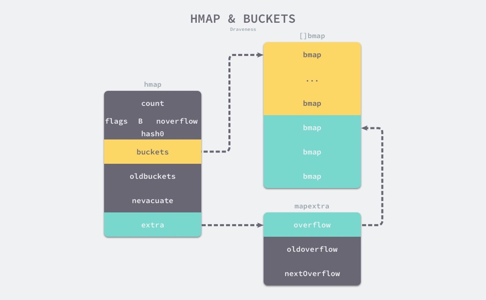
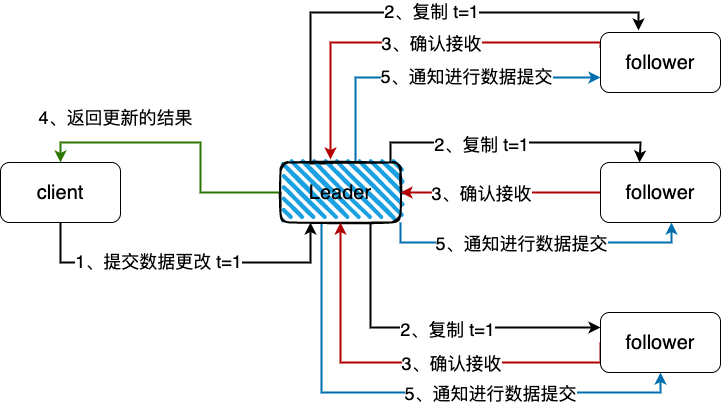
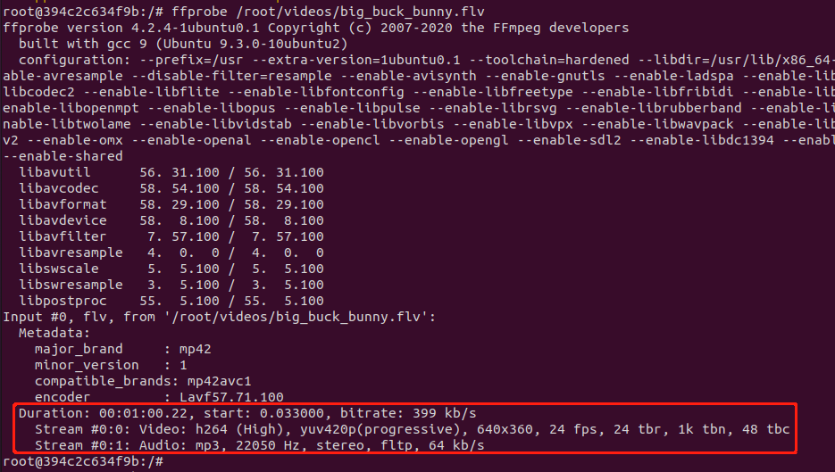
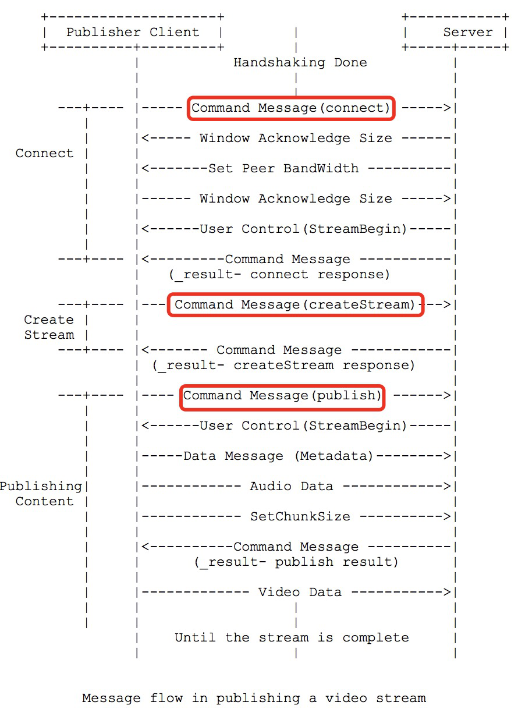
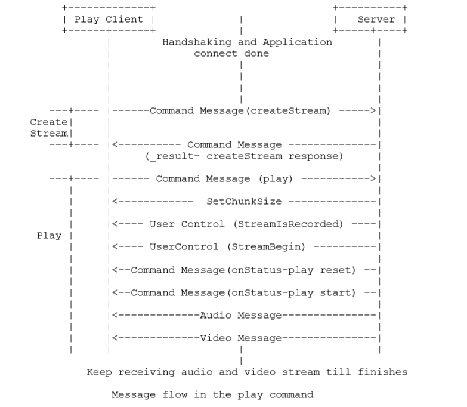
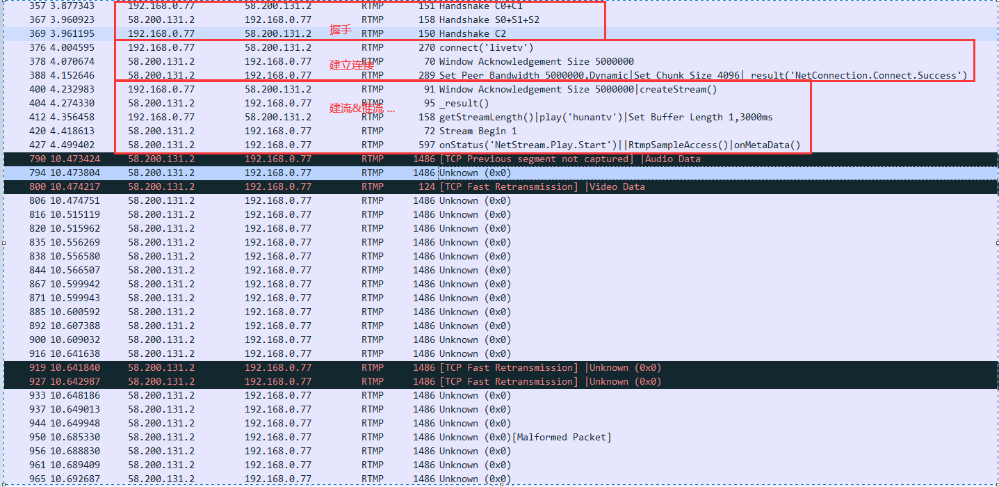
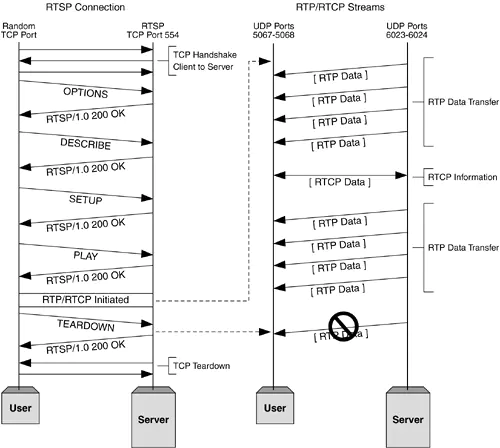
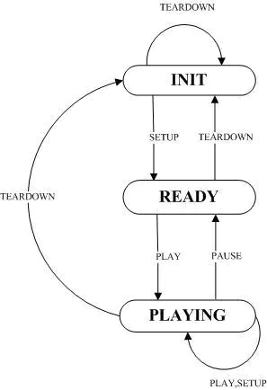
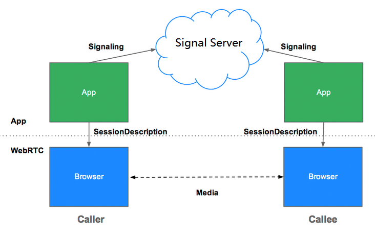

my cookbook
TCP vs UDP
TCP 和 UDP 是 TCP/IP 协议簇里面具有代表性的传输层协议。 TCP 提供可靠的通信传输，UDP 则常被用于广播或通信细节需交由应用层控制的场景。
OSI参考模型
通常网络的体系结构被划分为7层，每层之间都有相应的协议用于层与层的通信。 7层网络结构从上到下分别为：应用层、表示层、会话层、传输层、网络层(IP层)、数据链路层、物理层。
IP报文的首部中有一个协议字段，用于表示传输层所使用的的协议，TCP、UDP即通过该字段来区分。
TCP、UDP首部中用端口号来标识上层应用，包括源端口号、目标端口号。
IP首部 + TCP/UDP首部组成一个5元组(源IP、目标IP、协议、源端口、目标端口)，构成一个唯一通信标识符。
TCP
连接管理
三次握手
第一次次握手：客户端将标志位SYN置为1，随机产生一个值seq=J，并将该数据包发送给服务器端，客户端进入SYN_SENT状态，等待服务器端确认。
第二次握手：服务器端收到数据包后由标志位SYN=1知道客户端请求建立连接，服务器端将标志位SYN和ACK都置为1，ack=J+1，随机产生一个值seq=K， 并将该数据包发送给客户端以确认连接请求，服务器端进入SYN_RCVD状态。
第三次握手：客户端收到确认后，检查ack是否为J+1，ACK是否为1，如果正确则将标志位ACK置为1，ack=K+1，
并将该数据包发送给服务器端，服务器端检查ack是否为K+1，ACK是否为1，如果正确则连接建立成功，客户端和服务器端进入ESTABLISHED状态，完成三次握手。随后客户端与服务器端之间可以开始传输数据了。

四次挥手
中断连接端可以是客户端，也可以是服务器端。
CLIENT SEND FIN -> CLIENT FIN_WAIT_1 -> SERVER RCV AND SNED ACK -> CLIENT FIN_WAIT_2 SERVER SEND FIN -> SERVER LAST_ACK -> CLIENT RCV AND SEND ACK -> TIME_WAIT
第一次挥手：客户端发送一个FIN=M，用来关闭客户端到服务器端的数据传送，客户端进入FIN_WAIT_1状态。 意思是说“我客户端没有数据要发给你了“，但是如果你服务器端还有数据没有发送完成，则不必急着关闭连接，可以继续发送数据。
第二次挥手：服务器端收到FIN后，先发送ack=M+1，告诉客户端，你的请求我收到了，但是我还没准备好，请继续你等我的消息。 这个时候客户端就进入FIN_WAIT_2 状态，继续等待服务器端的FIN报文。
第三次挥手：当服务器端确定数据已发送完成，则向客户端发送FIN=N报文，告诉客户端，好了，我这边数据发完了，准备好关闭连接了。 服务器端进入LAST_ACK状态。
第四次挥手：客户端收到FIN=N报文后，就知道可以关闭连接了，但是他还是不相信网络，怕服务器端不知道要关闭， 所以发送ack=N+1后进入TIME_WAIT状态，如果Server端没有收到ACK则可以重传。 服务器端收到ACK后，就知道可以断开连接了。客户端等待了2MSL后依然没有收到回复，则证明服务器端已正常关闭，那好，我客户端也可以关闭连接了。
最终完成了四次握手。

time_wait问题
time_wait的存在是为了让对方准确收到最后一次ack。在高并发环境下，可能对导致系统可用socket不足的情况，无法为新到的请求分配端口。
解决方案
- 设置系统参数，加快time_wait状态连接的回收
vim /etc/sysctl.conf #time wait 最高的队列数 tcp_max_tw_buckets = 256000 #FIN_WAIT_2到TIME_WAIT的超时时间 net.ipv4.tcp_fin_timeout = 30 #表示开启重用 net.ipv4.tcp_tw_reuse = 1 允许将TIME-WAIT sockets重新用于新的TCP连接，默认为0，表示关闭； #表示开启TCP连接中TIME-WAIT sockets的快速回收，默认为0，表示关闭 net.ipv4.tcp_tw_recycle = 1 - 使用长连接，比如grpc
案例应用
记一次 connection-reset-by-peer 问题定位
传输控制
可靠性保证
发送端的数据到达接收端时，接收端会返回一个确认应答(ACK)，ACK的内容为下一个发送数据的起始字节数。
当发送端发送完数据之后，等待一定时间(重发超时)后若还未收到ACK，则会进行重发。 此时存在接收端已接收，但确认应答丢失的可能，当重发收到相同数据时，接收端会主动进行丢弃。
每个TCP数据包首部都包含一个数据校验和，用于检验数据完整性。
最大消息长度
在建立 TCP 连接时，会确定发送数据包的单位，也即最大消息长度(Max Segment Size)。在建立连接的请求中，会在 TCP 首部中写入 MSS 选项，告诉对方所能适应的MSS 大小，之后会选择二者中较小的进行使用。 最理想的情况下，最大消息长度正好是IP中不糊被分片处理的最大数据长度，即MTU。 当应用层数据到达 TCP 传输层时，会对数据包按 MSS 进行分片发送，接收端接收之后，按序重组。
窗口控制
接收端会实现一个缓冲区，并把这个缓冲区大小通过 ACK 的 TCP 首部返回给发送端，发送端可连续发送该窗口大小的数据包，而不用等待确认应答的返回。 在滑动窗口机制下，不必每个发送都必须有 ACK，当一个更大的 ACK 到达时，前面的数据一定已经到达。 同时为了防止出现糊涂窗口综合征，减少小报文段的传输进一步提高网络利用率，还引入了延时应答、捎带应答等机制。
滑动窗口机制下，若某个数据包丢失，接收端对之后所有数据包的 ACK 应答中都会以丢失的那个数据包的序号为返回值，发送端在在收到某个确认应答之后，又连续3次收到重复的确认应答，则认为该数据包丢失，触发重发。该机制称为重发控制，比超时重发更为快速高效。
在确认应答的首部中会回发当前接收端缓冲区的剩余窗口大小，以此来控制发送端的发送速率，这被称为流量控制。 当返回的剩余大小为0时，发送端暂停数据发送，过了重发超时时间之后，若还未收到窗口更新同时，则会主动发送一个窗口探测的数据包，该数据包的确认应答中包含剩余窗口大小；此外接收端若有窗口更新，也会主动发送一个窗口更新通知给发送端。
拥塞控制
网络拥塞指的是某段时间，对网络中某一资源的需求超过了该资源所能提供的最大可用部分，导致整体网络性能变差，继而引发重传，加剧拥塞。
拥塞控制指的是对整个计算机网络中的传输链路进行数据流入控制的统称。 TCP 为了在一个共享的计算机网络中防止进入网络拥塞的状态，定义了一个拥塞窗口的概念，用于控制发送端所发送的数据量。 发送端的发送速率同时受到接收端滑动窗口的流量控制、与拥塞窗口的控制，取二者较小值。
慢启动：TCP 发送端在通信一开始时，拥塞窗口设置为1，此后每收到一个 ACK 窗口值就会以1/2/4的指数形式增长，直到达到慢启动阈值。
TCP 协议缺陷
- 升级困难。整个 TCP 协议是在内核中实现的，协议升级需升级内核层，同时涉及到客户端、服务端。
- 建立连接、关闭连接耗时。每次连接都需三次握手。
- TCP 报文首部无法加密，存在伪造的安全问题。
- 存在队头阻塞。当中间某段报文丢失后，会阻塞后续所有报文传输，http2多路复用场景下体验尤其明显。
- 网络迁移需重新建立连接。网络切换时，需重走整个连接的建立过程、慢启动等。
UDP
UDP 是 user datagram protocl 的缩写。这里的 user 更相当于程序员，即基于用户程序的数据传输协议，编程人员可对数据的传输过程进行精细控制。
不提供复杂的控制机制，利用 IP 提供面向无连接的通信服务，将应用层的数据直接转发。有如下特点：
- 面向无连接；
- 不负责重发；
- 不进行流量控制等行为以避免网络拥塞；
- 不保证顺序；
- 通信细节的控制交由应用层程序
- 简单高效。
常被用于一下场景：
- 数据包总量较少的通信(DNS、SNMP)；
- 音视频等多媒体通信——即时通信；
- LAN等局域网内通信；
- 广播、多播通信。
QUIC
HTTP/HTTPS
HTTP
超文本传输协议，基于请求与响应模式的、是一种无状态、无连接的一种应用层协议。 无连接指的是在 HTTP1.0 版本中，每次建立起的 TCP 连接只处理一个请求，服务端在收到客户端的应答之后就立即断开链接。
HTTP方法
GET —— 获取资源
POST —— 传输资源
PUT —— 更新资源
DELETE —— 删除资源
HEAD —— 获取报文首部
TRACE —— 请求服务器回送收到的请求信息，主要用于测试或诊断
CONNECT—— 保留将来使用
OPTIONS—— 请求查询服务器的性能，或者查询与资源相关的选项和需求
HTTP状态码
1xx: 指示信息 =》 表示请求已接收，继续处理
2xx: 成功 =》 表示请求已成功接收
3xx: 重定向 =》 要完成请求必须更进一步操作
4xx: 客户端错误 =》 请求语法错误或者请求无法实现，比如路径错误，资源不存在等
5xx: 服务器错误 =》 服务器未能实现合法的请求
常见的HTTP状态码
200 ok: 客户端请求成功。
206 Partail Content： 客户发生了一个带有Range头的get请求，服务器完成了它（通常在请求大的视频或音频时可能出现）。
301 Moved Permanently: 请求的页面已经转移至新的url地址。
302 Found: 请求的页面已经临时转移至新的url地址。
304 Not Modified: 客户端有缓存的文档并发送了一个有条件的请求，服务器告诉客户端原来的缓存文档该可以继续使用。
400 Bad Request: 客户端语法错误。
401 Unauthorized: 请求未经授权，这个状态码必须和WWW-Authenticate报头域一起使用。
403 Forbidden: 页面禁止被访问
404 Not Found: 请求资源不存在。
500 Internal Sever Error: 服务器发生不可预期的错误，原来缓存的文档还可以继续被使用。
503 Server Unavaliable: 请求未完成，服务器临时过载或当机，一段时间后可能恢复正常。
keepalive
TCP的KeepAlive和HTTP的Keep-Alive是完全不同的概念，不能混为一谈。实际上HTTP的KeepAlive写法是Keep-Alive，跟TCP的KeepAlive写法上也有不同。
tcp的keepalive是侧重在保持客户端和服务端的连接，一方会不定期发送心跳包给另一方，当一方断掉的时候，没有断掉的定时发送几次心跳包， 如果间隔发送几次，对方都返回的是RST，而不是ACK，那么就释放当前链接。 tcp连接默认时长，一般默认是2小时，可由系统配置更改。通过keepalive可实现真正的长连接。
HTTP的keep-alive一般我们都会带上中间的横杠，普通的http连接是客户端连接服务端，然后结束请求后， 由客户端或者服务端进行http连接的关闭。下次再发送请求的时候，客户端再发起一个连接，传送数据，关闭连接。 侧重于tcp的连接复用。
二者的作用简单来说： HTTP协议的Keep-Alive意图在于短时间内连接复用，希望可以短时间内在同一个连接上进行多次请求/响应。
TCP的KeepAlive机制意图在于保活、心跳，检测连接错误。 当一个TCP连接两端长时间没有数据传输时(通常默认配置是2小时)，发送keepalive探针，探测链接是否存活。
HTTPS
实现原理
交互流程
整体过程分为整数验证、数据传输两个阶段。
- 客户端发起请求，包含自身浏览器支持的加密算法 HASH算法等信息
- 服务端接收请求，选择一组加密算法与 hash算法，返回证书
- 判断证书合法性
- 若证书合法，客户端生成随机数
- 通过证书内的公钥对随机数进行加密，通过随机数对握手hash信息进行加密
- 将公钥加密后的随机数与随机数加密后的握手信息通过网络传输
- 服务端接收数据，通过私钥解密，获得随机数，通过随机数解密握手信息
- 服务端加密握手信息返回给客户端
- 客户端解密判断hash算法是否一致，相同则建立握手

CA证书合法性
证书内容：
- 颁发机构信息
- 公钥
- 公司信息
- 域名
- 有效期
- 指纹
- 其他
证书合法性的依据：基于信任机制，即中心的权威的机构，机构需对其颁发的证书进行信用背书。
验证流程：
- 验证域名、有效期等信息
- 验证来源是否合法，即证书链是否完整
- 请求CA服务器，验证是否被篡改
http2
多路复用
基于tcp连接的双工属性实现，多个请求可复用连接。数据帧并行发送，无需有序，客户端接收后可重新组装。
头部压缩
client/server两端都会维护一个静态字典和一个动态字典。
静态字典维护特别常见的头部名称与值的组合，动态字典维护当前连接中使用过的header，可动态修改，添加。
使用原理：对相同的key、value仅使用一个index_key进行传输，减少传输数据量
支持推送
可将某些必须的静态资源，在建立连接后主动推送。client端接收并缓存，并且允许其他请求公用。
数据传输格式
定义了一个帧的数据结构。
所有帧都是一个固定的 9 字节头部 (payload 之前) 跟一个指定长度的负载 (payload)。
+-----------------------------------------------+
| Length (24) |
+---------------+---------------+---------------+
| Type (8) | Flags (8) |
+-+-------------+---------------+-------------------------------+
|R| Stream Identifier (31) |
+=+=============================================================+
| Frame Payload (0...) ...
+---------------------------------------------------------------+
Length 代表整个 frame 的长度，用一个 24 位无符号整数表示。除非接收者在 SETTINGS_MAX_FRAME_SIZE 设置了更大的值 (大小可以是 2^14(16384) 字节到 2^24-1(16777215) 字节之间的任意值)，否则数据长度不应超过 2^14(16384) 字节。头部的 9 字节不算在这个长度里
Type 定义 frame 的类型，用 8 bits 表示。帧类型决定了帧主体的格式和语义，如果 type 为 unknown 应该忽略或抛弃。
Flags 是为帧类型相关而预留的布尔标识。标识对于不同的帧类型赋予了不同的语义。如果该标识对于某种帧类型没有定义语义，则它必须被忽略且发送的时候应该赋值为 (0x0)
R 是一个保留的比特位。这个比特的语义没有定义，发送时它必须被设置为 (0x0), 接收时需要忽略。
Stream Identifier 用作流控制，用 31 位无符号整数表示。客户端建立的 sid 必须为奇数，服务端建立的 sid 必须为偶数，值 (0x0) 保留给与整个连接相关联的帧 (连接控制消息)，而不是单个流
Frame Payload 是主体内容，由帧类型决定
帧类型
HEADERS: 报头帧 (type=0x1)，用来打开一个流或者携带一个首部块片段
DATA: 数据帧 (type=0x0)，装填主体信息，可以用一个或多个DATA帧来返回一个请求的响应主体
PRIORITY: 优先级帧 (type=0x2)，指定发送者建议的流优先级，可以在任何流状态下发送 PRIORITY 帧，包括空闲 (idle) 和关闭 (closed) 的流
RST_STREAM: 流终止帧 (type=0x3)，用来请求取消一个流，或者表示发生了一个错误，payload 带有一个 32 位无符号整数的错误码 (Error Codes)，不能在处于空闲 (idle) 状态的流上发送 RST_STREAM 帧
SETTINGS: 设置帧 (type=0x4)，设置此 连接 的参数，作用于整个连接
PUSH_PROMISE: 推送帧 (type=0x5)，服务端推送，客户端可以返回一个 RST_STREAM 帧来选择拒绝推送的流
PING: PING 帧 (type=0x6)，判断一个空闲的连接是否仍然可用，也可以测量最小往返时间 (RTT)
GOAWAY: GOWAY 帧 (type=0x7)，用于发起关闭连接的请求，或者警示严重错误。GOAWAY 会停止接收新流，并且关闭连接前会处理完先前建立的流
WINDOW_UPDATE: 窗口更新帧 (type=0x8)，用于执行流量控制功能，可以作用在单独某个流上 (指定具体 Stream Identifier) 也可以作用整个连接 (Stream Identifier 为 0x0)，只有 DATA 帧受流量控制影响。初始化流量窗口后，发送多少负载，流量窗口就减少多少，如果流量窗口不足就无法发送，WINDOW_UPDATE 帧可以增加流量窗口大小
CONTINUATION: 延续帧 (type=0x9)，用于继续传送首部块片段序列，见 首部的压缩与解压缩
grpc protobuf
rpc框架，基于protobuf来定义接口，同时将数据序列化为二进制编码，减少需要传输的数据量。 基于http2.0，方便的支持流式数据交互。
rpc调用流程
- 客户端（gRPC Stub）调用 A 方法，发起 RPC 调用。
- 对请求信息使用 Protobuf 进行对象序列化压缩（IDL）。
- 服务端（gRPC Server）接收到请求后，解码请求体，进行业务逻辑处理并返回。
- 对响应结果使用 Protobuf 进行对象序列化压缩（IDL）。
- 客户端接受到服务端响应，解码请求体。回调被调用的 A 方法，唤醒正在等待响应（阻塞）的客户端调用并返回响应结果。
DNS
关于 ID
于编程中，通常需要使用唯一标识符，用于绑定到各种硬件和软件对象以及软件生命周期。通常，当人们查找要使用的此类 ID 时，他们会选择错误的 ID，因为语义和生命周期或 ID 不明确。下面是一些在 Linux 上可访问的 ID 以及如何使用它们的简略指南。
硬件 ID
/sys/class/dmi/id/product_uuid：
主板product UUID，由主板制造商设置并编码在 BIOS DMI 信息中。它可以用于识别主板并且仅用于识别主板。当用户更换主板时它会改变。此外，经常有 BIOS 制造商在其中写入伪造的序列号。此外，它是特定于 x86 架构的。禁止非特权用户访问。
位于/sys/class/dmi/id/product_uuid目录，同级目录下还有其他一些关于主板硬件相关的信息。
dmidecode命令同样可以获得相关的id信息，如下：
$ dmidecode -s
dmidecode: option requires an argument -- 's'
String keyword expected
Valid string keywords are:
bios-vendor
bios-version
bios-release-date
system-manufacturer
system-product-name
system-version
system-serial-number
system-uuid
system-family
baseboard-manufacturer
baseboard-product-name
baseboard-version
baseboard-serial-number
baseboard-asset-tag
chassis-manufacturer
chassis-type
chassis-version
chassis-serial-number
chassis-asset-tag
processor-family
processor-manufacturer
processor-version
processor-frequency
$ sudo dmidecode -s system-uuid
ddd20f6d-8484-2384-ff6a-04d9f51b8628
CPUID/EAX=3 CPU serial number：
CPU UUID，由 CPU 制造商设置并在 CPU 芯片上编码。它可以用来识别一个 CPU 并且只识别一个 CPU。当用户更换 CPU 时它会发生变化。此外，大多数现代 CPU 不再实现此功能，并且较旧的计算机默认情况下倾向于禁用此选项，可通过 BIOS 设置选项进行控制。此外，它是特定于 x86 的。
dmidecocde -t process可以查看。
/sys/class/net/*/address：
一个或多个网络 MAC 地址，由网络适配器制造商设置并在某些网卡 EEPROM 上编码。当用户更换网卡时它会改变。由于网卡是可选的，如果不能保证此 ID 的可用性可能不止一张，而且您可能有不止一张可供选择。在虚拟机上，MAC 地址往往是随机的。因此，这也没有什么普遍用途。
/sys/bus/usb/devices/*/serial：
各种 USB 设备的序列号，编码在 USB 设备 EEPROM 中。大多数设备没有设置序列号，如果有，通常是伪造的。如果用户更换他的 USB 硬件或将其插入另一台机器，这些 ID 可能会更改或出现在其他机器中。因此，这也没什么用。
还有各种其他可用的硬件 ID，您可以通过各种设备（如硬盘和类似设备）的 ID_SERIAL udev 属性发现其中的许多。它们都有一个共同点，即它们都绑定到特定的（可替换的）硬件，不是普遍可用的，通常充满虚假数据并且在虚拟化环境中是随机的。或者换句话说：不要使用它们，不要依赖它们来识别，除非你真的知道你在做什么，而且一般来说它们不能保证你可能希望他们保证的东西。
软件 ID
/proc/sys/kernel/random/boot_id：
在每次启动时重新生成的随机 ID。因此，它可以用来识别本地机器的当前引导。它在任何最新的 Linux 内核上普遍可用。如果您需要识别特定引导内核上的特定引导，这是一个不错且安全的选择。
gethostname() , /proc/sys/kernel/hostname：
管理员配置的非随机 ID，用于识别网络中的机器。通常这根本没有设置或设置为一些默认值，例如 localhost甚至在本地网络中都不是唯一的。此外，它可能会在运行时发生变化，例如因为它会根据更新的 DHCP 信息而变化。因此，除了向用户展示之外，它几乎完全没有用处。它的语义很弱，并且依赖于管理员的正确配置。不要使用它来识别分布式环境中的机器。除非集中管理，否则它不会起作用，这使得它在全球化的移动世界中毫无用处。它在应绑定到特定主机的自动生成的文件名中没有位置。请不要使用它。真的不是很多人想的那样。 gethostname()在 POSIX 中是标准化的，因此可以移植到其他 Unix。
IP 地址：这些往往是动态分配的，并且通常仅在本地网络上有效，甚至仅在本地链接上有效（即 192.168.xx 样式地址，甚至 169.254.xx/IPv4LL）。不幸的是，它们因此在网络之外几乎没有用处。
gethostid()：
返回当前机器的假定唯一的 32 位标识符。其语义尚不清楚。在大多数机器上，这只是返回一个基于本地 IPv4 地址的值。在其他情况下，它是通过/etc/hostid文件由管理员控制的。由于此 ID 的语义不明确，而且通常只是基于 IP 地址的值，因此使用它几乎总是错误的选择。最重要的是32位并不是特别多。另一方面，这在 POSIX 中是标准化的，因此可以移植到其他 Unix。最好忽略这个值，如果人们不想忽略它，他们可能应该将/etc/hostid符号链接到 /var/lib/dbus/machine-id或类似的东西。
/var/lib/dbus/machine-id：
标识特定 Linux/Unix 安装的 ID。如果更换硬件，它不会改变。它在虚拟化环境中并非不可靠。该值具有清晰的语义，被认为是 D-Bus API 的一部分。它被认为是全球唯一的，并且可移植到所有具有 D-Bus 的系统。在 Linux 上，它是普遍可用的，因为现在几乎所有非嵌入式甚至相当一部分嵌入式机器都提供 D-Bus。这是识别机器的推荐方法，可能会回退到主机名以覆盖仍然缺乏 D-Bus 的系统。如果您的应用程序链接到libdbus ，您可以使用dbus_get_local_machine_id()访问此 ID ，否则您可以直接从文件系统中读取它。
cat /var/lib/dbus/machine-id
/proc/self/sessionid：
标识特定 Linux 登录会话的 ID。此 ID 由内核维护，也是审计逻辑的一部分。它在特定系统启动期间唯一分配给每个登录会话，由会话的每个进程共享，即使跨 su/sudo 也是如此，并且不能由用户空间更改。不幸的是，到目前为止，某些发行版未能正确设置它以使其正常工作（嘿，你，Ubuntu！），并且此 ID 始终为 (uint32_t) -1。但希望他们最终能解决这个问题。尽管如此，对于本地机器上的唯一会话标识符和当前引导来说，它是一个不错的选择。要使此 ID 全局唯一，最好与/proc/sys/kernel/random/boot_id结合使用。
getuid()：
标识特定 Unix/Linux 用户的 ID。此 ID 通常在创建用户时自动分配。它在机器之间不是唯一的，如果原始用户被删除，它可能会重新分配给不同的用户。因此，它应该只在本地使用，并考虑到有限的有效性。要使此 ID 全局唯一，将其与/var/lib/dbus/machine-id组合是不够的，因为相同的 ID 可能用于稍后使用相同 UID 创建的不同用户。尽管如此，这种组合通常已经足够好了。它适用于所有 POSIX 系统。id命令可查看。
ID_FS_UUID：
标识 udev 树中特定文件系统的 ID。这些序列是如何生成的并不总是很清楚，但这往往在几乎所有现代磁盘文件系统上都可用。它不适用于 NFS 挂载或虚拟文件系统。尽管如此，这通常是识别文件系统的好方法，在根目录的情况下甚至是安装。然而，由于定义较弱的生成语义，通常首选 D-Bus 机器 ID。
Generating IDs
Linux 提供了一个内核接口，通过读取/proc/sys/kernel/random/uuid来按需生成 UUID 。这是一个非常简单的生成 UUID 的接口。也就是说，UUID 背后的逻辑过于复杂，通常使用 uuidgen读取 16 个字节左右是更好的选择。 cat /proc/sys/kernel/random/uuid
概括
使用/var/lib/dbus/machine-id！ 使用 /proc/self/sessionid！ 使用/proc/sys/kernel/random/boot_id！ 使用getuid()！使用/dev/urandom！ 忘记其余的，尤其是主机名或硬件 ID，例如 DMI。请记住，您可以通过各种方式组合上述 ID，以获得不同的语义和有效性约束。
参考
http://0pointer.de/blog/projects/ids.html https://nyogjtrc.github.io/posts/2018/12/some-unique-id-in-linux/
进程 线程 协程
经典的冯诺依曼结构把计算机系统抽象成 CPU + 存储器 + IO，那么计算机资源无非就两种：
- 计算资源
- 存储资源
CPU是计算单元，单纯从CPU的角度来说它是一个黑盒，它只对输入的指令和数据进行计算，然后输出结果，它不负责管理计算哪些“指令和数据”。 换句话说CPU只提供了计算能力，但是不负责分配计算资源。
进程是线程的基础，进程负责的是存储资源的分配；线程是为计算资源的分配而设计的，也即是为调度器而服务的。 内核通过内核调度实体(Kernal Scheduling Entry， KSE)来进行调度。于Linux内核而言进程，线程并无太大区别，每个进程创建后会默认创建一个thread0。
概念
进程
进程是操作系统分配存储资源的最小单位。
- 每个进程拥有独立的虚拟地址空间：虚拟地址空间分内核空间于用户空间，32位操作系统下，内核空间拥有1G 用户空间3G
- 内核空间存储内核代码、数据，以及与进程相关的数据结构(例如：Task、页表、内核栈、文件描述符等)；内核代码、数据所有进程共享
- 用户空间存储用户代码数据，用户栈，运行时堆等数据；进程独有
- 所有虚拟地址最终通过页表进行映射，关联实际物理存储
- 进程间通信只能通过信号、信号量、管道、socket等技术，无法共享内存
线程
线程是操作系统调度的最小单位。
Linux中线程的创建通过clone系统调用，clone是一个轻量级的fork，它提供了一系列的参数来表示线程可以共享父类的哪些资源，比如页表，打开文件表等等。
- 所有子线程共享进程的虚拟地址空间
- 每个线程有自身的栈空间、程序计数器
- 线程间通信基于共享内存
协程
协程可以看做是编程语言在用户态提供的线程，一种粒度更细的资源调度单元。
- 协程的调度理想状态下不涉及内核态的切换，可以近似抽象的认为线程在占用一个CPU时间片内，调度执行多个不同的用户逻辑块
- 协程就是这些逻辑块的封装，操作系统不实现，需由编程语言自身运行时或者共享库来实现。C语系下有Coroutine, Goroutine
- 从协程的实现原理来看，协程适用于IO密集型场景——即在每次遇到IO阻塞时就去调度下一个用户代码块(协程)，最大限度压榨cpu，同时尽量减少线程切换
- 协程是用户态的实现，有自身的运行栈、以及状态信息，总体来说运行时的状态信息大小比线程小很多 go里面初始大小为2kb Linux线程块大小通常在1m
多任务切换
多进程
多进程的CPU切换流程
- 发生中断或系统调用，进入内核态执行进程上下文保存：寄存器信息入内核栈
- 内核栈的保存：将进程相关的内核栈信息保存在内核空间与进程对应的PCB结构中(包括寄存器、Task、页表、内核栈、文件描述符等)
- 加载将要被调度的进程信息，切换页表
- PC寄存器更新为目标进程的内核栈
- 执行目标进程的内核栈，恢复寄存器状态，切换回用户态进程
涉及的上下文资源
- 寄存器信息
- 页表、文件描述符等
- 进程运行状态等信息
地址空间(页表)的切换消耗大，通常32寻址空间一级页表的就有4M。目前64位操作系统下通常采用48位的寻址空间，四级页表结构：9+9+9+9+12的寻址方式。
多线程
Linux下多线程切换流程与多进程类似，当目标线程与当前线程同属一个进程时，不涉及页表切换，只涉及内核栈与寄存器信息的切换。通常一个线程会占用大概1M以上的内存空间。
上下文资源
- 寄存器信息：栈寄存器、程序计数器
- 线程运行状态
协程
- 协程可以看做是编程语言在用户态提供的线程，一种粒度更细的资源调度单元，进一步压榨cpu
- 协程的调度理想状态下不涉及内核态的切换，可以近似抽象的认为线程在占用一个CPU时间片内，调度执行多个不同的用户逻辑块
- 协程就是这些逻辑块的封装，操作系统不实现，需由编程语言自身运行时或者共享库来实现。C语系下有Coroutine, Goroutine
- 从协程的实现原理来看，协程适用于IO密集型场景——即在每次遇到IO阻塞时就去调度下一个用户代码块(协程)，最大限度压榨cpu，同时尽量减少线程切换
- 协程是用户态的实现，有自身的运行栈、以及状态信息，总体来说运行时的状态信息大小比线程小很多 go里面初始大小为2kb Linux线程块大小通常在1m
https://aijishu.com/a/1060000000293144 https://ost.51cto.com/posts/659 https://www.eet-china.com/mp/a92885.html https://blog.csdn.net/gong_1/article/details/18405153
链表
基本技巧
链表相关的核心点
- null/nil 异常处理
- dummy node 哑巴节点
- 快慢指针
- 插入一个节点到排序链表
- 从一个链表中移除一个节点
- 翻转链表
- 合并两个链表
- 找到链表的中间节点
常见题型
反转
func reverseList(head *ListNode) *ListNode {
if head == nil || head.Next == nil {
return head
}
node := reverseList(head.Next)
head.Next.Next = head
head.Next = nil
return node
}
func reverseBetween(head *ListNode, left int, right int) *ListNode {
if left == 1 {
return reverseN(head, right)
}
head.Next = reverseBetween(head.Next, left-1, right-1)
return head
}
var tail *ListNode
func reverseN(head *ListNode, n int) *ListNode {
if n == 1 {
tail = head.Next
return head
}
p := reverseN(head.Next,n-1)
head.Next.Next = head
head.Next = tail
return p
}
func reverseN(head *ListNode, n int) *ListNode {
// 1->2->3->4->5 n=3 pre=nil cur=1 head=1
var pre *ListNode
cur := head
for ; n>0; n-- {
cur.Next, pre, cur = pre, cur, cur.Next
}
// 1<-2<-3 4->5 n=0 pre=3 cur=4 head=1
head.Next = cur
// 5<-4<=1<-2<-3
return pre
}
func reerseKGroup(head *ListNode, k int) *ListNode {
if head == nil {
return head
}
// 判断是否有k个元素
a, b := head, head
for i:=0; i<k; i++ {
if b == nil {
return head
}
b = b.Next
}
newHead := reverseBetween(a, b)
a.Next = reverseKGroup(b, k)
return newHead
}
func reverseBetween(a, b *ListNode) *ListNode {
var pre *ListNode
for a != b {
a.Next, pre, a = pre, a, a.Next
}
return pre
}
小结
- 遍历的方式需使用一个pre变量记录前一个节点
- 递归需要关注当前节点需要做啥
- 善用子函数抽象拆解问题 reverseN(head, n) reverseBetween(a, b *ListNode)
合并 分割 相加
func mergeTwoLists(list1 *ListNode, list2 *ListNode) *ListNode {
// 思路 1 递归解法 mergeTwoLists(list1.Next, list2) or mergeTwoLists(list1, list2.Next)
// 思路 2 遍历list1 list2: 初始化dummy节点， p p1 p2分别指向三个链表
dummy := &ListNode{}
p, p1, p2 := dummy, list1, list2
for p1 != nil && p2 != nil {
if p1.Val < p2.Val {
p.Next = p1
p1 = p1.Next
}else {
p.Next = p2
p2 = p2.Next
}
p = p.Next
}
if p1 != nil {
p.Next = p1
}
if p2 != nil {
p.Next = p2
}
return dummy.Next
}
func mergeKLists(lists []*ListNode) *ListNode {
// 思路 二分递归合并 转换成 mergeTwoLists
if len(lists) <=0 {
return nil
}
if len(lists) == 1 {
return lists[0]
}
mid := len(lists)/2
left := mergeKLists(lists[:mid])
right := mergeKLists(lists[mid:])
return mergeTwoLists(left, right)
}
func mergeTwoLists(list1, list2 *ListNode) *ListNode {
if list1 == nil {
return list2
}else if list2 == nil {
return list1
}else if list1.Val < list2.Val {
list1.Next = mergeTwoLists(list1.Next, list2)
return list1
}else {
list2.Next = mergeTwoLists(list1, list2.Next)
return list2
}
}
func partition(head *ListNode, x int) *ListNode {
if head == nil {
return nil
}
// 思路 合并两个链表的逆操作,
// 定义两个链表 small large；之后将large 接与small之后
dummy1, dummy2 := &ListNode{}, &ListNode{}
small, large :=dummy1, dummy2
for head != nil {
if head.Val < x {
small.Next = head
small = small.Next
}else {
large.Next = head
large = large.Next
}
head = head.Next
}
// 防止有环 leetcode 校验结果时有环会oom
large.Next = nil
small.Next = dummy2.Next
return dummy1.Next
}
有环、公共节点
func hasCycle(head *ListNode) bool {
if head == nil {
return false
}
// 快慢指针 快指针两倍速 若再次相遇，说明有环
slow, fast := head, head
for fast.Next != nil && fast.Next.Next != nil {
slow = slow.Next
fast = fast.Next.Next
if slow == fast {
return true
}
}
return false
}
func detectCycle(head *ListNode) *ListNode {
if head == nil {
return nil
}
// 快慢指针 快指针两倍速 若再次相遇，说明有环
slow, fast := head, head
for fast.Next != nil && fast.Next.Next != nil {
slow = slow.Next
fast = fast.Next.Next
if slow == fast {
break
}
}
// nocycle
if fast.Next == nil || fast.Next.Next == nil {
return nil
}
// 此时slow回到链表头, 双指针同步前进， 再次相遇点即是入环点
slow = head
for slow != fast {
slow = slow.Next
fast = fast.Next
}
return slow
}
func getIntersectionNode(headA, headB *ListNode) *ListNode {
// 思路1
// 将b接在a的后面， 从a出发判断是否有环 以及环的起点
// 思路2
// 分别从a-> b->a 遍历链表 若中途相遇即是相交点
if headA == nil || headB == nil {
return nil
}
a, b := headA, headB
for a!=b {
if a == nil {
a=headB
}else {
a = a.Next
}
if b == nil {
b = headA
}else {
b = b.Next
}
}
return a
}
查找 删除、插入
func middleNode(head *ListNode) *ListNode {
// 快慢指针 快指针两倍速
slow, fast := head, head
for fast!=nil && fast.Next != nil {
slow = slow.Next
fast = fast.Next.Next
}
return slow
}
func removeNthFromEnd(head *ListNode, n int) *ListNode {
if head == nil {
return nil
}
// 快慢指针
// 注意点 头结点也可能被删 故初始化dummy
dummy := &ListNode{}
dummy.Next = head
slow, fast := dummy, dummy
// fast 先走n+1步 保证删除的时候是删除slow.Next
for i:=0; i<=n && fast != nil; i++ {
fast = fast.Next
}
for fast != nil {
slow = slow.Next
fast = fast.Next
}
// delete slow.Next
slow.Next = slow.Next.Next
return dummy.Next
}
func rotateRight(head *ListNode, k int) *ListNode {
n := 0
p := head
for p!=nil {
p = p.Next
n++
}
if n == 0 || k%n == 0{
return head
}
p = head
for i:=0; i<(n-1-k%n); i++ {
p = p.Next
}
newHead := p.Next
p.Next = nil
p = newHead
for p.Next != nil {
p = p.Next
}
p.Next = head
return newHead
}
func deleteDuplicates(head *ListNode) *ListNode {
if head == nil {
return nil
}
// 思路1 hash+两次遍历
// 思路2 指针 cur.Next == cur.Next.Next delete cur.Next = cur.Next.Next
dummy := &ListNode{}
dummy.Next = head
cur := dummy
for cur.Next != nil && cur.Next.Next !=nil {
if cur.Next.Val == cur.Next.Next.Val {
reaptVal := cur.Next.Val
// delete reapt
for cur.Next != nil && cur.Next.Val == reaptVal {
cur.Next = cur.Next.Next
}
}else {
cur = cur.Next
}
}
return dummy.Next
}
排序
func sortList(head *ListNode) *ListNode {
if head == nil || head.Next == nil {
return head
}
// 快慢指针找中点 归并排序
// [4,2,1,3]
// 此处注意：fast = head.Next, 否则当只有两个数的时候，slow 指针会永远指向第二个数
// slow 指针要寻找的相当于是 mid 的前一个节点
slow, fast := head, head.Next
for fast!= nil && fast.Next != nil {
fast = fast.Next.Next
slow = slow.Next
}
fmt.Println(slow.Val, slow.Next.Val)
right := sortList(slow.Next)
slow.Next = nil
left := sortList(head)
return mergeTwoLists(left, right)
}
func mergeTwoLists(list1, list2 *ListNode) *ListNode {
if list1 == nil {
return list2
}else if list2 == nil {
return list1
}else if list1.Val < list2.Val {
list1.Next = mergeTwoLists(list1.Next, list2)
return list1
}else {
list2.Next = mergeTwoLists(list1, list2.Next)
return list2
}
}
func insertionSortList(head *ListNode) *ListNode {
dummy := &ListNode{}
for head!=nil {
insertSort(dummy, head.Val)
head = head.Next
}
return dummy.Next
}
func insertSort(head *ListNode, val int) {
node := &ListNode{Val: val}
if head.Next == nil {
head.Next = node
return
}
p := head
for p.Next!=nil && p.Next.Val <= node.Val {
p = p.Next
}
fmt.Println(p.Val)
node.Next = p.Next
p.Next = node
}
其他
常见工程应用
LRU LFU
SKIPLIST(跳表)
跳表本质上是一个链表, 它其实是由有序链表发展而来。跳表在链表之上做了一些优化，跳表在有序链表之上加入了若干层用于索引的有序链表。索引链表的结点来源于基础链表，不过只有部分结点会加入索引链表中，并且越高层的链表结点数越少。跳表查询从顶层链表开始查询，碰到比自身大的，往下跳一级，然后逐级展开，直到底层链表。
跳表使用概率均衡技术而不是使用强制性均衡，因此对于插入和删除结点比传统上的平衡树算法更为简洁高效。因此跳表适合增删操作比较频繁，并且对查询性能要求比较高的场景。
原理简化示意图
leveln:
……:
level3: H -> T
level2: H -> 4 -> T
level1: H -> 2 -> 4 -> 6 -> T
level0: H -> 1 -> 2 -> 3 -> 4 -> 5 -> 6 -> 7 -> T
- level0是基础链表，所有节点都会被添加进来
- level1~leveln是索引链表，图例中每层是上一层的1/2
- 如节点在第i层出现，则小于i的每一层都会出现该节点
- 实际使用中，level层高是通过随机函数来确定的，会规范一个最大值
HASH冲突 链地址法
栈
常见题型
括号类
计算器(表达式求值)
树
-
- 1.1. 二叉树遍历
- 1.2. 深度遍历(DFS)/层次遍历(BFS)
- 1.3. 常见题型
-
- 3.1. 前缀树
- 3.2. B-树(Balance Tree/Bayer Tree)
- 3.3. B+树(B树Plus)
- 3.4. AVL树(Balance Binary Search Tree)
- 3.5. 红黑树(Red Black Tree)
1. 二叉树(Binary Tree)
核心解题思维
- 遍历：是否可以通过遍历一遍二叉树得到答案？如果可以，用一个 traverse 函数配合外部变量来实现；
- 递归：原问题是否可以通过子问题推导出？如果可以，定义一个递归函数，充分利用函数返回值，入参基本是root.left root.right
明确二叉树每个节点需要做什么， 需要在什么时候做(前中后序)
1.1. 二叉树遍历
前序遍历：先访问根节点，再前序遍历左子树，再前序遍历右子树 中序遍历：先中序遍历左子树，再访问根节点，再中序遍历右子树 后序遍历：先后序遍历左子树，再后序遍历右子树，再访问根节点
func traverse(root *TreeNode) {
if root == nil {
return
}
// 前序位置
traverse(root.Left)
// 中序位置
traverse(root.Right)
// 后序位置
}
1.2. 深度遍历(DFS)/层次遍历(BFS)
DFS-自顶向下
func dfs(root *TreeNode, result *[]interface{}) {
if root == nil {
return
}
// 前序位置 此时前中后序都可以，按编码习惯通常放于前序位置
*result = append(*result, root)
dfs(root.Left, result)
dfs(root.Right, result)
}
DFS-自底向上 又称分治法
func divide(root *TreeNode) []interface{} {
if root == nil {
return nil
}
// 分治
left := divide(root.Left)
right := divide(root.Right)
// merge
return merge(left, right)
}
快排、归并排序 都是借助分治的思想。
快排是在前序位置计算出partitionIndex 然后分别递归排序左右两边 quickSort(nums, lo, partitionIndex-1) quickSort(nums, partitionIndex+1, hi)
归并排序是计算mid=(start+end)/2, 然后分别对左右递归排序 left:=mergeSort(nums, start, mid) right:=mergeSort(nums, mid+1, end), 最后merge两个有序数组 merge(left, right)；left, right已经有序
BFS层序遍历
func levelTraverse(root *TreeNode) [][]interface {
result := make([][]interface{}, 0)
if root == nil {
return nil
}
queue := make([]*TreeNode, 0)
queue = append(queue, root)
for len(queue) > 0 {
l := len(queue)
level := make([][]interface{}, 0)
for i:=0; i<l; i++ {
// 队头出队
root := queue[0]
queue = queue[1:]
level = append(level, root)
if root.Left != nil {
queue = append(queue, root.Left)
}
if root.Right !=nil {
queue = append(queue, root.Right)
}
}
result = append(result, level)
}
return result
}
1.3. 常见题型
遍历、分治
func traverse(root *TreeNode, path string, res *[]string) {
if root == nil {
return
}
path += fmt.Sprintf("->%d", root.Val)
if root.Left == nil && root.Right == nil {
// 到达叶子节点
*res = append(*res, path[2:])
return
}
traverse(root.Left, path, res)
traverse(root.Right, path, res)
}
func flatten(root *TreeNode) {
if root == nil {
return
}
// 拉平左右子树
flatten(root.Left)
flatten(root.Right)
left := root.Left
right := root.Right
root.Left = nil
root.Right = left
// 将链表指针移到末尾
p:=root
for p.Right != nil {
p = p.Right
}
p.Right = right
}
func invertTree(root *TreeNode) *TreeNode {
if root == nil {
return nil
}
left := invertTree(root.Left)
right := invertTree(root.Right)
root.Right = left
root.Left = right
return root
}
func mergeTrees(root1 *TreeNode, root2 *TreeNode) *TreeNode {
if root1 == nil {
return root2
}
if root2 == nil {
return root1
}
// 递归子问题：分别将左右子树进行合并
left := mergeTrees(root1.Left, root2.Left)
right := mergeTrees(root1.Right, root2.Right)
// 依赖递归返回 后序处理
root := &TreeNode{
Val: root1.Val + root2.Val,
}
root.Left = left
root.Right = right
return root
}
func maxDepth(root *TreeNode) int {
if root == nil {
return 0
}
left := maxDepth(root.Left)
right := maxDepth(root.Right)
if left>right {
return left+1
}
return right+1
}
func isBalanced(root *TreeNode) bool {
return maxDepth(root)>=0
}
func maxDepth(root *TreeNode) int {
if root == nil {
return 0
}
left := maxDepth(root.Left)
right := maxDepth(root.Right)
// 非平衡 结束递归
if left == -1 || left-right>1 || right==-1 || right-left>1 {
return -1
}
if left>right {
return left+1
}
return right+1
}
func diameterOfBinaryTree(root *TreeNode) int {
res := 0
maxDepth(root, &res)
return res
}
func maxDepth(root *TreeNode, res *int) int {
if root == nil {
return 0
}
left := maxDepth(root.Left, res)
right := maxDepth(root.Right, res)
if *res<left+right {
*res = left+right
}
if left>right {
return left+1
}
return right+1
}
func countNodes(root *TreeNode) int {
// 思路
// 假设以当前节点为根节点，它是一个满二叉树，则 count=math.Pow(2, hight)
// 否则 递归左子树右子树分别计算个数
// 沿最左侧和最右侧分别计算高度, 如果相等则是满二叉树
l,r := root, root
hl, hr := 0, 0
for l!=nil {
l=l.Left
hl++
}
for r!=nil {
r=r.Right
hr++
}
if hl == hr {
// 满二叉树
return int(math.Pow(2, float64(hl)))-1
}
return 1 + countNodes(root.Left) + countNodes(root.Right)
}
func maxPathSum(root *TreeNode) int {
// 思路 计算以root节点为起点的最大序列和 与初始值比较 取较大
// 遍历 分别计算以左右子树的最大序列和 与初始值比较 取较大
// 定义 单边路径最大和函数 slidMax(root, res) int
res := -1001
slidMax(root, &res)
return res
}
func slidMax(root *TreeNode, res *int) int {
if root == nil {
return 0
}
left := max(0, slidMax(root.Left, res))
right := max(0, slidMax(root.Right, res))
if *res < root.Val + left + right {
*res = root.Val + left + right
}
return root.Val + max(left, right)
}
func pathSum(root *TreeNode, targetSum int) [][]int {
var (
sum = 0
path =make([]int, 0)
res = make([][]int, 0)
)
traverse(root, targetSum, sum, path, &res)
return res
}
func traverse(root *TreeNode, targetSum, sum int, path []int, res *[][]int) {
if root == nil {
return
}
path = append(path, root.Val)
sum += root.Val
if root.Left == nil && root.Right == nil {
if sum == targetSum {
ans := make([]int, len(path))
copy(ans, path)
*res = append(*res, ans)
}
return
}
traverse(root.Left, targetSum, sum, path, res)
traverse(root.Right, targetSum, sum, path, res)
}
func lowestCommonAncestor(root, p, q *TreeNode) *TreeNode {
// 判断当前节点是否等于p 或 q 是的话直接返回， 反之递归左右子树
// 针对递归返回做后序处理
// 1. p,q 分别在左右两边 left!=nil && right!=nil return root
// 2. p,q 在左右某一边 或 都不在(left==nil && right==nil) return left != nil ? left:right
if root == nil {
return root
}
if root == p || root == q {
return root
}
left := lowestCommonAncestor(root, p, q)
right := lowestCommonAncestor(root, p, q)
if left!=nil && right!=nil {
return root
}
if left != nil {
return left
}
return right
}
层次遍历
func levelOrderBottom(root *TreeNode) [][]int {
if root == nil {
return nil
}
res := make([][]int, 0)
queue := make([]*TreeNode, 0)
queue = append(queue, root)
for len(queue) > 0 {
count := len(queue)
level := make([]int, 0)
for i:=0; i<count; i++ {
root = queue[i]
level = append(level, root.Val)
if root.Left != nil {
queue = append(queue, root.Left)
}
if root.Right != nil {
queue = append(queue, root.Right)
}
}
queue = queue[count:]
if len(level) > 0 {
res = append(res, level)
}
}
// reverse(res)
return res
}
// 遍历同上 遍历完成后翻转result
func reverse(list [][]int) {
for i, j:=0, len(list)-1; i<j; i, j=i+1, j-1 {
list[i], list[j] = list[j], list[i]
}
}
// 层序遍历
// 将每层结果append到result时 做标志位flag的判断是否翻转 同时标志位置反
if len(level) > 0 {
if flag {
reverse(level)
}
flag = !flag
res = append(res, level)
}
func isCompleteTree(root *TreeNode) bool {
// 思路 bfs
// 1. 对每个节点检验 root.Left == nil && root.Right!=nil return false
// 2. 一旦出现叶子节点或不完整节点(root.Left == nil && root.Right==nil) || (root.Left!=nil && root.Right==nil)
// 则 后续不能再出现完整节点
if root == nil {
return true
}
queue := make([]*TreeNode, 0)
queue = append(queue, root)
end := false
for len(queue)>0 {
l := len(queue)
for i:=0; i<l; i++ {
root = queue[0]
queue = queue[1:]
// check valid
if root.Left == nil && root.Right != nil {
return false
}
if end && (root.Left != nil || root.Right != nil) {
return false
}
// add queue
if root.Left != nil {
queue = append(queue, root.Left)
}
if root.Right != nil {
queue = append(queue, root.Right)
}
// 是否到达最后一层
if (root.Left == nil && root.Right==nil) || (root.Left!=nil && root.Right==nil) {
end = true
}
}
}
return true
}
序列化、反序列化
// 思路
// 只有前序遍历、后序遍历、层序遍历可以同时实现序列化与反序列化
// 原理
// 前序遍历的结果 第一个元素 即是root节点，之后根据左子树右子树顺序递归剩余字符串即可
// 后序遍历的结果 最后一个元素是root节点，之后根据右子树左子树顺序递归剩余字符串
// 层序遍历的结果 第一个节点是root节点， 之后紧跟的分别是left right; 下一层的每两个元素分别是上一层每一个元素的子节点
// 中序遍历因为无法确定root节点的位置，故无法实现序列化
// 解题技巧
// 反序列化时， 可先将data字符串转换成 []*TreeNode, 即将每个元素预先构造成树, # 转成 nil；然后根据不同序列化的方式 将树串联起来
// 有如下树结构
// 1
// 2 3
// 4 5 6
// 前序遍历序列化反序列化
// 序列化结果： 1, 2, #, 4, #, #, 3, 5, #, #, 6, #, #
func serialize(root *TreeNode) string {
if root == nil {
return "#"
}
left := this.serialize(root.Left)
right := this.serialize(root.Right)
data := fmt.Sprintf("%d,%s,%s", root.Val, left, right)
return data
}
// 反序列化，用一个pos索引指针记录当前反序列化位置
func deserialize(data string, pos *int) *TreeNode {
if *pos >= len(data) {
return nil
}
// 获取当前节点， 即root节点
var first string
index := strings.Index(data[*pos:], ",")
if index == -1 {
first = data[*pos:]
}else {
first = data[*pos:*pos+index]
}
// 指针后移
*pos = *pos + len(first) +1
if first == "#" {
// leaf node
return nil
}
// covert val
val, err:=strconv.ParseInt(first, 10, 64)
if err!=nil {
panic(err)
}
root := &TreeNode{Val:int(val)}
// 获取当前节点左右子树
root.Left = deserialize(data, pos) // pos 在递归中不断后移
root.Right = deserialize(data, pos)
return root
}
// 后续遍历 序列化反序列化
func serialize(root *TreeNode) string {
if root == nil {
return "#"
}
left := this.serialize(root.Left)
right := this.serialize(root.Right)
data := fmt.Sprintf("%s,%s,%d",left, right, root.Val)
return data
}
// 反序列化 最后一个元素是root 之后递归右子树 左子树; pos指针不断前移
func deserialize(data string, pos *int) *TreeNode{}
// 层序遍历
// Serializes a tree to a single string.
func (this *Codec) serialize(root *TreeNode) string {
if root == nil {
return ""
}
res := ""
queue := make([]*TreeNode, 0)
queue = append(queue, root)
for len(queue) > 0 {
count := len(queue)
for i:=0; i<count; i++ {
node := queue[i]
if node == nil {
res += fmt.Sprintf(",%s", "#")
continue
}else if len(res) == 0 {
res += fmt.Sprintf("%d", node.Val)
}else {
res += fmt.Sprintf(",%d", node.Val)
}
queue = append(queue, node.Left)
queue = append(queue, node.Right)
}
queue = queue[count:]
}
return res
}
// Deserializes your encoded data to tree.
func (this *Codec) deserialize(data string) *TreeNode {
// fmt.Println("data:", data)
if len(data) == 0 {
return nil
}
// get the first node
var getFirstNode func(data string, pos *int) *TreeNode
getFirstNode = func(data string, pos *int) *TreeNode {
if *pos > len(data) {
return nil
}
var first string
index := strings.Index(data[*pos:], ",")
if index == -1 {
first = data[*pos:]
}else {
first = data[*pos:*pos+index]
}
*pos = *pos + len(first) +1
if first == "#" {
return nil
}
val, err:=strconv.ParseInt(first, 10, 64)
if err !=nil {
fmt.Printf("panic data:%s pos:%d index:%d first:%s err:%s\n", data, *pos, index, first, err)
//panic(err)
return nil
}
return &TreeNode{Val:int(val)}
}
var (
queue = make([]*TreeNode, 0)
pos int
)
root := getFirstNode(data, &pos)
if root == nil {
return nil
}
queue = append(queue, root)
for pos<len(data) {
node := queue[0]
queue = queue[1:]
// 获取左右节点
node.Left = getFirstNode(data, &pos)
if node.Left != nil {
queue = append(queue, node.Left)
}
node.Right = getFirstNode(data, &pos)
if node.Right != nil {
queue = append(queue, node.Right)
}
}
return root
}
前序遍历构造二叉搜索树 从中序与后序遍历序列构造二叉树 最大二叉树
// 思路 与快排类似：partition找到maxIndex 构建root, 之后递归左右两边 root.Left = construct(nums[:maxIndex-1]) root.Right = construct(maxIndex+1)
2. 二叉搜索树BST(Binary Search Tree)
- 对于 BST 的每一个节点 node，左子树节点的值都比 node 的值要小，右子树节点的值都比 node 的值大。
- 对于 BST 的每一个节点 node，它的左侧子树和右侧子树都是 BST。
特性：中序遍历有序(升序) 解题基本都是中序遍历框架
func kthSmallest(root *TreeNode, k int) int {
// 思路 中序遍历 当 rank==k 时 return root.Val
var rank, res int
traverse(root, k, &rank, &res)
return res
}
func traverse(root *TreeNode, k int, rank, res *int) {
if root==nil {
return
}
traverse(root.Left, k, rank, res)
*rank +=1
if *rank == k {
*res = root.Val
return
}
traverse(root.Right, k, rank, res)
}
func convertBST(root *TreeNode) *TreeNode {
// 思路 中续遍历 降序 计算累加和 并更新当前节点
// 定义 traverse(root, sum) 以他为根的累加和 从右子树开始遍历
// 将当前节点值变为 root.Val += sum
var sum int
traverse(root, &sum)
return root
}
func traverse(root *TreeNode, sum *int) {
if root == nil {
return
}
traverse(root.Right, sum)
*sum += root.Val
root.Val = *sum
traverse(root.Left, sum)
}
func deleteNode(root *TreeNode, key int) *TreeNode {
// 思路 比较 root.Val vs key 判断递归左 or 右子树
// 若 root.Val == key if root.Right !=nil {将root.Left 挂到root.Right 的最左叶子结点} else {root = root.Left}
// root.Val < key 递归 右子树
// root.Val > key 递归左子树
if root == nil {
return nil
}
if root.Val == key {
if root.Right != nil {
p:=root.Right
for p.Left != nil {
p = p.Left
}
p.Left = root.Left
root = root.Right
}else {
root = root.Left
}
return root
}
if root.Val > key {
root.Left = deleteNode(root.Left, key)
}else{
root.Right = deleteNode(root.Right, key)
}
return root
}
func insertIntoBST(root *TreeNode, val int) *TreeNode {
// 思路 不断向左右递归 找到最后一个叶子节点，进行插入
// base case root == nil return &TreeNode{Val:val}
if root == nil {
return &TreeNode{Val:val}
}
if root.Val < val {
root.Right = insertIntoBST(root.Right, val)
}else {
root.Left = insertIntoBST(root.Left, val)
}
return root
}
func isValidBST(root *TreeNode) bool {
// 思路 中序遍历有序 pre变量记录遍历的上一个值
pre := math.MinInt64
valid := true
traverse(root, &pre, &valid)
return valid
}
func numTrees(n int) int {
// 思路 递归函数count(lo, hi int) int 计算 lo~hi直接有多少种
// base case lo >= hi return 1
// 添加备忘录
memo := make([][]int, n+1)
return count(1, n, memo)
}
func generateTrees(n int) []*TreeNode {
// 思路 定义递归函数
// generate(lo, hi int) []*TreeNode
// 循环lo~hi 固定root， 然后分别计算lefts, rights
// 排列组合lefts, rights
// 优化 备忘录
return generate(1, n)
}
3. 其他常见树形结构及应用
3.1. 前缀树
Trie 树又叫字典树、前缀树、单词查找树，是一种二叉树衍生出来的高级数据结构(多叉树)，主要应用场景是处理字符串前缀相关的操作， 例如自动补全 拼写检查等。
基本结构及方法
type Trie struct {
// 数组大小26表示支持的key字符串为a~z 亦可根据实际情况自定义
// 数组下标对应ASCII码 当前定义下标转换 index = char - 'a'
children [26]*Trie
// 表示从root->当前节点的路径是否表示一个完整的key
isEnd bool
// 在 isEnd为TRUE时，key 对应的value值 [option]
val interface{}
}
func Constructor() Trie {
return Trie{}
}
// 插入字符串
func (this *Trie) Insert(word string) {
cur := this
for _, ch := range word {
index := ch - 'a'
if cur.children[index] == nil {
// 不存在当前字符，新增插入
cur.children[index] = &Trie{}
}
cur = cur.children[index]
}
cur.isEnd = true
}
// 前缀匹配
func (this *Trie) SearchWithPrefix(word string) *Trie {
cur := this
for _, ch := range word {
index := ch - 'a'
if cur.children[index] == nil {
// 不存在当前字符
return nil
}
cur = cur.children[index]
}
return cur
}
// 查找
func (this *Trie) Search(word string) bool {
node := this.SearchWithPrefix(word)
return node != nil && node.isEnd
}
// 前缀查找
func (this *Trie) StartsWith(prefix string) bool {
return node != nil
}
3.2. B-树(Balance Tree/Bayer Tree)
3.3. B+树(B树Plus)
3.4. AVL树(Balance Binary Search Tree)
AVL树得名于它的发明者G. M. Adelson-Velsky和E. M. Landis，他们在1962年的论文《An algorithm for the organization of information》中发表了它。
3.5. 红黑树(Red Black Tree)
4. 参考
数组
常用技巧
- 排序
- 双指针
- 滑动窗口
- 二分搜索
- 前缀和
- 差分数组
- 花式遍历
常见题型
排序
快速排序
快排算法框架类似二叉树的前序遍历, partition函数选出数组的分割位置pos, 在该位置前都比nums[pos]小, 之后都大于等nums[pos]。
quickSort(nums []int, start, end int) { if start>=end { return } pos := partition(nums, start, end) quickSort(nums, start, pos-1) quickSort(nums, pos+1, end) }
func QuickSort(nums []int) {
sort(nums, 0, len(nums)-1)
}
func sort(nums []int, start, end int){
if start >= end {
return
}
pos := partition(nums, start, end)
sort(nums, start, pos-1)
sort(nums, pos+1, end)
}
func partition(nums, start, end int) {
// 选取基准值pivot, 此处以nums[end]为基准值进行比较
pos := end
pivot := nums[pos]
// 双指针i, j 初始化为start; j开始遍历, 当nums[j]< pivot时, 交换i，j && i++
// 遍历结束，交换i， pos； 返回i
i, j := start, start
for j<pos {
if nums[j] < pivot {
nums[i], nums[j] = nums[j], nums[i]
i++
}
j++
}
// 遍历结束，交换i， pos； 返回i
nums[i], nums[pos] = nums[pos], nums[i]
return i
}
技巧，有时数组会部分有序或整体倒序，导致算法复杂度很高，此时可以先进行shuffle洗牌操作，重新打乱数组顺序。
// Knuth 洗牌算法
// golang 自带有 rand.Shuffle(n, func(i, j))
func shuffle(nums []int) {
n := len(nums)
for i:=0; i<n; i++ {
j := rand.Intn(n-i) + i
nums[i], num[j] = nums[j], nums[i]
}
}
归并排序
类似二叉树的后续遍历
func mergeSort(nums []int) []int {
if len(nums) <= 1 {
return
}
mid := len(nums)/2
left := mergeSort(nums[:mid])
right := mergeSort(nums[mid:])
return merge(left, right)
}
func merge(nums1, nums2 []int) []int {
res := make([]int, 0)
i, j := 0, 0
for i<len(nums1) && j<len(nums2) {
if nums1[i] < nums2[j] {
res = append(res, nums1[i])
i++
}else {
res = append(res, nums2[j])
j++
}
}
if i<len(nums1) {
res = append(res, nums1[i:]...)
}
if j<len(nums2) {
res = append(res, nums2[j:]...)
}
return res
}
堆排序
排序步骤：
- 将数组构建成大顶堆(小顶堆)——用数组表示的完全二叉树结构——nums[0]是根节点，堆中最大(最小)
- 堆顶出队，与数组最后一位交换(将最大值放于数组最后) swap(nums, 0, len(nums)-1)
- 剩余元素nums[:len(nums)-2]继续构建堆结构——将nums[0]下沉到合适的位置 sink(nums, end)
- 循环2，至所有数据排序
构建堆：
- 首先构建大顶堆, nums[0] 为树的根节点，构建完全二叉树，则存在如下下标关系 left = 2i+1 right = 2i+2
- 从最后一个非叶子节点开始进行上浮操作，最后一个非叶子节点为 len(nums)/2-1
- swim(nums, i) 以nums[i]为根， 分别与left right进行比较 nums[2i+1] nums[2i+2]
- 循环至i==0
func heapSort(nums []int) {
//构建大顶堆
for i:=len(nums)/2-1; i>=0; i-- {
swim(nums, i)
}
// 交换 排序
for i:=len(nums)-1; i>=0; i-- {
// swap 0, i
nums[0], nums[i] = nums[i], nums[0]
// sink
sink(nums, i)
}
return nums
}
func swim(nums []int, root int) {
for {
l := 2*root + 1
r := 2*root +2
idx := root
if l<len(nums) && nums[l] > nums[idx] {
idx = l
}
if r<len(nums) && nums[r] > nums[idx] {
idx = r
}
// 不需要上浮
if idx == root {
break
}
// 交换
nums[root], nums[idx] = nums[idx], nums[root]
root = idx
}
}
func sink(nums []int, end int) {
root := 0
for {
l := 2*root + 1
r := 2*root +2
idx := root
if l<end && nums[l] > nums[idx] {
idx = l
}
if r<end && nums[r] > nums[idx] {
idx = r
}
// 不需要下沉
if idx == root {
break
}
// 交换
nums[root], nums[idx] = nums[idx], nums[root]
root = idx
}
}
双指针
// 对有重复数字的 采用hash表
func twoSum(numbers []int, target int) []int {
// 双指针
i, j := 0, len(numbers)-1
for i<j {
sum := numbers[i] + numbers[j]
if sum == target {
return []int{i+1, j+1}
}else if sum < target {
i++
}else {
j--
}
}
return nil
}
func removeDuplicates(nums []int) int {
// 双指针
// i, j num[i]!=nums[j]时 将j移到i+1的位置， i++
i, j := 0, 0
for j<len(nums) {
if nums[i]!=nums[j] {
nums[i+1], nums[j] = nums[j], nums[i+1]
i++
}
j++
}
// 返回长度 下标+1
return i+1
}
// 同上
// 同上
// 中心扩散法
func longestPalindrome(s string) string {
// 以i, i+1为中心向两边扩散
n := len(s)
ans := ""
for i:=0; i<n; i++ {
res1 := findPalindrome(s, i, i)
res2 := findPalindrome(s, i, i+1)
if len(res1) > len(ans) {
ans = res1
}
if len(res2) > len(ans) {
ans = res2
}
}
return ans
}
// 以i, j为中心的最长回文串
func findPalindrome(s string, i, j int) string {
for i>=0 && j<len(s) {
if s[i] != s[j] {
break
}
i--
j++
}
return s[i+1:j]
}
// 算法思路
// 将数组看做一个木桶 arr[0] arr[len(arr)-1]看做木桶的两个边，不断收缩
// 木桶原理：水量以短边为准
func trap(height []int) int {
left, right := 0, len(height)-1
maxLeft, maxRight := height[0], height[right]
res := 0
for left < right {
if height[left]>maxLeft {
maxLeft = height[left]
}
if height[right]>maxRight {
maxRight = height[right]
}
if maxLeft<maxRight {
res += maxLeft-height[left]
left++
}else {
res += maxRight-height[right]
right--
}
}
return res
}
滑动窗口
解题模板
func slideWindow(s string) int {
// 1. 初始化窗口 left, right := 0, 0 win := make(map[byte]int) 窗口内所有值始终只出现一次
// 2. 更新窗口 右指针后移
// 3. 判断窗口 左指针收缩
// 4. 统计结果
left, right := 0, 0
win := make(map[byte]int)
for right < len(s) {
// 更新窗口 右指针后移
c := s[right]
win[c] += 1
right++
// 收缩左指针 更新窗口
for win[c] > 1 {
win[s[left]]--
left++
}
// t统计结果
}
}
func lengthOfLongestSubstring(s string) int {
// 滑动窗口 + map
// 1. 初始化窗口 left, right := 0, 0 win := make(map[byte]int) 窗口内所有值始终只出现一次
// 2. 更新窗口 右指针后移
// 3. 判断窗口 左指针收缩
// 4. 统计结果
left, right := 0, 0
win := make(map[byte]int)
res := 0
for right < len(s) {
// 更新窗口 右指针后移
c := s[right]
win[c] += 1
right++
// 收缩左指针 更新窗口
for win[c] > 1 {
win[s[left]]--
left++
}
// 统计结果
if right - left > res {
res = right-left
}
}
return res
}
func findAnagrams(s string, p string) []int {
// 滑动窗口
left, right := 0, 0
win := make(map[byte]int)
res := make([]int, 0)
match := make(map[byte]int)
for i:=0; i<len(p); i++ {
match[p[i]] +=1
}
for right < len(s) {
// 更新窗口 指针后移
win[s[right]] += 1
right++
// 收缩窗口
for right-left>len(p) {
win[s[left]]--
left++
}
// fmt.Printf("right:%d left:%d win:%v substr:%s \n", right, left, win, s[left:right])
if right-left == len(p) && valid(win, match) {
res = append(res, left)
}
}
return res
}
func valid(win map[byte]int, match map[byte]int) bool {
for key, val := range match {
if num, ok := win[key]; !ok || num != val {
return false
}
}
return true
}
// 同上
func checkInclusion(s1 string, s2 string) bool {
s1Map := make(map[byte]int)
for i:=0; i<len(s1); i++ {
s1Map[s1[i]] += 1
}
match := func(m1, m2 map[byte]int) bool {
for c, val := range m2 {
if num, ok := m1[c]; !ok || num != val {
return false
}
}
return true
}
win := make(map[byte]int)
left, right := 0, 0
for right < len(s2) {
win[s2[right]] += 1
right++
for right - left > len(s1) {
win[s2[left]]--
left++
}
// fmt.Println(win)
if right - left == len(s1) && match(win, s1Map) {
return true
}
}
return false
}
二分查找
给一个有序数组和目标值，找第一次/最后一次/任何一次出现的索引，如果没有出现返回-1
模板四点要素
- 1、初始化：start=0、end=len-1
- 2、循环退出条件：start + 1 < end
- 3、比较中点和目标值：A[mid] ==、 <、> target
- 4、判断最后两个元素是否符合：A[start]、A[end] ? target
// 二分搜索最常用模板
func search(nums []int, target int) int {
// 1、初始化start、end
start := 0
end := len(nums) - 1
// 2、处理for循环
for start+1 < end {
mid := start + (end-start)/2
// 3、比较a[mid]和target值
if nums[mid] == target {
end = mid
} else if nums[mid] < target {
start = mid
} else if nums[mid] > target {
end = mid
}
}
// 4、最后剩下两个元素，手动判断
if nums[start] == target {
return start
}
if nums[end] == target {
return end
}
return -1
}
func searchRange(nums []int, target int) []int {
// 二分查找
// 1. 左边界：right不断左移收缩
// 2. 右边界：left不断右移收缩
if len(nums) == 0 {
return []int{-1, -1}
}
res := []int{-1, -1}
// 寻找左边界
left, right := 0, len(nums)-1
for left+1<right {
mid := left + (right-left)/2
if nums[mid] >= target {
right = mid
}else {
left = mid
}
}
// 判断最后两个元素nums[left] nums[right]
if nums[right] == target {
res[0] = right
}
if nums[left] == target {
res[0] = left
}
if res[0] == -1 {
return res
}
// 寻找右边界
left, right = 0, len(nums)-1
for left+1<right {
mid := left + (right-left)/2
if nums[mid] > target {
right = mid
}else {
left = mid
}
}
// 判断最后两个元素nums[left] nums[right]
if nums[left] == target {
res[1] = left
}
if nums[right] == target {
res[1] = right
}
return res
}
func search(nums []int, target int) int {
if len(nums) == 0 {
return -1
}
left, right := 0, len(nums)-1
for left+1<right {
mid := left + (right-left)/2
if nums[mid] == target {
return mid
}else if nums[mid]>target {
right = mid
}else {
left = mid
}
}
if nums[left] == target {
return left
}else if nums[right] == target {
return right
}
return -1
}
func searchInsert(nums []int, target int) int {
// 二分查找 左边界 第一个 >= target 的位置
if len(nums) == 0 {
return 0
}
left, right := 0, len(nums)-1
for left+1 < right {
mid := left + (right - left)/2
if nums[mid] >= target {
right = mid
}else {
left = mid
}
}
if nums[left] >= target {
return left
}else if nums[right] >= target {
return right
}else if nums[right]<target {
return right +1
}
return 0
}
func searchMatrix(matrix [][]int, target int) bool {
// 思路 二分查找 row=mid/n col=mid%n
m := len(matrix)
n := len(matrix[0])
left, right := 0, m*n-1
for left+1<right {
mid := left + (right-left)/2
row := mid/n
col := mid%n
if matrix[row][col] == target {
return true
}else if matrix[row][col] > target {
right = mid
}else {
left = mid
}
}
if matrix[left/n][left%n] == target || matrix[right/n][right%n] == target {
return true
}
return false
}
func firstBadVersion(n int) int {
// 二分查找 左边界
left, right := 1, n
for left +1 < right {
mid := left + (right-left)/2
if isBadVersion(mid) {
right = mid
}else {
left = mid
}
}
if isBadVersion(left) {
return left
}
if isBadVersion(right) {
return right
}
return -1
}
find-minimum-in-rotated-sorted-array
find-minimum-in-rotated-sorted-array-ii
search-in-rotated-sorted-array
search-in-rotated-sorted-array-ii
func search(nums []int, target int) bool {
// 二分搜索
start, end := 0, len(nums) -1
for start+1 < end {
// 去除重复元素
for start < end && nums[start] == nums[start+1] {
start++
}
for start < end && nums[end] == nums[end-1] {
end--
}
mid := start + (end-start)/2
if nums[mid] == target {
return true
}
// 判断在左上升区间 还是右上升区间
if nums[start] < nums[mid] {
// 左上升区间
if nums[start] <= target && nums[mid] >= target {
end = mid
}else {
start = mid
}
}else if nums[end] > nums[mid] {
// 右上升区间
if nums[end] >= target && nums[mid] <= target {
start = mid
}else {
end = mid
}
}
}
// 判断最后剩余的 start end
if nums[start] == target || nums[end] == target {
return true
}
return false
}
前缀和
type NumArray struct {
data []int
preSum []int
}
func Constructor(nums []int) NumArray {
preSum := make([]int, len(nums)+1)
for i := 0; i < len(nums); i++ {
preSum[i+1] = preSum[i] + nums[i]
}
//fmt.Println(preSum)
return NumArray{
data: nums,
preSum: preSum,
}
}
func (this *NumArray) SumRange(left int, right int) int {
return this.preSum[right+1] - this.preSum[left]
}
type NumMatrix struct {
preSum [][]int
}
func Constructor(matrix [][]int) NumMatrix {
preSum := make([][]int, len(matrix)+1)
preSum[0] = make([]int, len(matrix[0])+1)
for i := 0; i<len(matrix); i++ {
if preSum[i+1] == nil {
preSum[i+1] = make([]int, len(matrix[0])+1)
}
for j:=0; j< len(matrix[0]); j++ {
preSum[i+1][j+1] = preSum[i+1][j] + preSum[i][j+1] - preSum[i][j] + matrix[i][j]
}
}
return NumMatrix{preSum: preSum}
}
func (this *NumMatrix) SumRegion(row1 int, col1 int, row2 int, col2 int) int {
preSum := this.preSum
return preSum[row2+1][col2+1] - preSum[row2+1][col1] - preSum[row1][col2+1] + preSum[row1][col1]
}
差分数组
数组遍历
// 多次翻转
// 首先整个字符串翻转
// 之后 每个单词再次翻转
func rotate(matrix [][]int) {
// 1. 对角线交换，完成行列转换
// 2. 每行翻转，完成旋转
// 1 2 3
// 4 5 6
// 7 8 9
// 1 4 7
// 2 5 8
// 3 6 9
// 7 4 1
// 8 5 2
// 9 6 3
for i:=0; i<len(matrix); i++ {
for j:=i; j<len(matrix); j++ {
matrix[i][j], matrix[j][i] = matrix[j][i], matrix[i][j]
}
}
for i :=0; i<len(matrix); i++ {
reverse(matrix[i])
}
}
func reverse(nums []int) {
i, j :=0, len(nums)-1
for i<j {
nums[i], nums[j] = nums[j], nums[i]
i++
j--
}
}
回溯算法
回溯算法常用于排列组合问题， 穷举所有解，都是暴力递归，算法框架形如dfs深度搜索遍历。 通常用需要定义一个visited数组用来存储已遍历过的值 track数组用于存储当前遍历栈， res数组用于存储满足要求的解；当track数组达到所需要求后， 将track添加到可行解列表中。
// 排列问题 i 从 0 开始, 需要一个记录已经做过选择的数组
func backtrack(nums []int, visited []bool, track []int, res *[][]int) {
if track 满足要求 {
ans := make([]int, len(track))
copy(ans, track)
*res = append(*res, ans)
return
}
for i:=0; i<len(nums); i++ {
if visited[i] || 其他过滤条件 {
continue
}
// 做选择 将nums[i] 添加到track栈
track = append(track, nums[i])
visited[i] = true
// 递归下次选择
backtrack(nums, visited, track, res)
// 取消选择
track = track[:len(track)-1]
visited = false
}
}
// 组合问题 i 从给定的初始pos开始
func backtrack(nums []int, pos int, track []int, res *[][]int) {
if track 满足要求 {
ans := make([]int, len(track))
copy(ans, track)
*res = append(*res, ans)
return
}
for i:=pos; i<len(nums); i++ {
if 过滤选择 {
continue
}
// 做选择 将nums[i] 添加到track栈
track = append(track, nums[i])
// 递归下次选择
backtrack(nums, i+1, track, res)
// 取消选择
track = track[:len(track)-1]
}
}
常见题型
排列
- 46.全排列 不含重复数字
func backtrack(nums []int, visited []bool, track []int, res *[][]int) {
if len(track) == len(nums) {
ans := make([]int, len(track))
copy(ans, track)
*res = append(*res, ans)
return
}
for i:=0; i<len(nums); i++ {
if visited[i] {
continue
}
track = append(track, nums[i])
visited[i] = true
backtrack(nums, visited, track, res)
track = track[:len(track)-1]
visited[i] = false
}
}
- 47.全排列II 含重复数字
// 含重复数字， 先排序， 固定所有数字的相对顺序
func permuteUnique(nums []int) [][]int {
sort.Slice(nums, func(i, j int) bool{return nums[i]<nums[j]})
var res = make([][]int, 0)
var backtrack func
backtrack = func(nums []int, visited []bool, track []int) {
if len(track) == len(nums) {
ans := make([]int, track)
copy(ans, track)
res = append(res, ans)
return
}
for i:=0; i<len(nums); i++ {
if visited[i] {
continue
}
// 跳过重复数字; 将重复的数字当做一个整体, visited[i] == false 故 visited[i-1] 也需 false
if i>0 && nums[i-1] == nums[i] && !visited[i-1] {
continue
}
track = append(track, nums[i])
visited[i] = true
backtrack(nums, visited, track, res)
track = track[:len(track)-1]
visited[i] = false
}
}
var (
visited = make([]bool, len(nums))
track = make([]int, 0)
)
backtrack(nums, visited, track)
return res
}
组合
func backtrack(nums []int, k int, pos int, track []int, res *[][]int) {
if pos == len(nums)-k+1 {
return
}
if len(track) == k {
ans := make([]int, len(track))
copy(ans, track)
*res = append(*res, ans)
return
}
if len(track) > k {
return
}
for i:=pos; i<len(nums); i++ {
track = append(track, nums[i])
backtrack(nums, k, i+1, track, res)
track = track[:len(track)-1]
}
}
- 39.组合总和 可重复选
func backtrack(nums []int, target int, pos int, sum int, track []int, res *[][]int) {
if sum == target {
ans := make([]int, len(track))
copy(ans, track)
*res = append(*res, ans)
return
}
// nums 是正整数
if sum > target {
return
}
for i:=pos; i<len(nums); i++ {
sum += nums[i]
track = append(track, nums[i])
// 可重复选 pos=i
backtrack(nums, target, i, sum, track, res)
sum-=nums[i]
track = track[:len(track)-1]
}
}
- 40.组合总和II 重复只可用一次
// 先排序 sort.Slice(nums, func(i, j)bool {nums[i]<nums[j]})
func backtrack(nums []int, target int, pos int, sum int, track []int, res *[][]int) {
if sum == target {
ans := make([]int, len(track))
copy(ans, track)
*res = append(*res, ans)
return
}
// nums 是正整数
if sum > target {
return
}
for i:=pos; i<len(nums); i++ {
if i>pos && nums[i] == nums[i-1] {
continue
}
sum += nums[i]
track = append(track, nums[i])
// 不可重复选 pos=i+1
backtrack(nums, target, i+1, sum, track, res)
sum-=nums[i]
track = track[:len(track)-1]
}
}
func combinationSum3(k int, n int) [][]int {
var (
track = make([]int, 0)
res = make([][]int, 0)
sum = 0
)
backtrack(1, n, k, sum, track, &res)
return res
}
func backtrack(i int, target int, k int, sum int, track []int, res *[][]int) {
if sum == target && len(track) == k {
ans := make([]int, k)
copy(ans, track)
*res = append(*res, ans)
return
}
if sum>target && len(track)>k {
return
}
for ; i<=9; i++ {
sum += i
track = append(track, i)
backtrack(i+1, target, k, sum, track, res)
track = track[:len(track)-1]
sum -= i
}
}
子集
func backtrack(nums []int, pos int, track []int, res *[][]int) {
ans := make([]int, len(track))
copy(ans, track)
*res = append(*res, ans)
for i:=pos; i<len(nums); i++ {
track = append(track, nums[i])
backtrack(nums, i+1, track, res)
track = track[:len(track)-1]
}
}
- 90.子集II 重复数字
// 先排序
func backtrack(nums []int, pos int, track []int, res *[][]int) {
ans := make([]int, len(track))
copy(ans, track)
*res = append(*res, ans)
for i:=pos; i<len(nums); i++ {
if i>pos && nums[i] == nums[i-1] {
continue
}
track = append(track, nums[i])
backtrack(nums, i+1, track, res)
track = track[:len(track)-1]
}
}
// 解法1：回溯算法 无法提交通过 执行超时
func canPartition(nums []int) bool {
sum := 0
for _, num := range nums {
sum += num
}
if sum%2 != 0 {
return false
}
target := sum / 2
var backtrack func(nums []int, target, pos int, sum int) bool
backtrack = func(nums []int, target, pos int, sum int) bool {
if sum == target {
return true
}
if sum > target {
return false
}
for i := pos; i < len(nums); i++ {
sum += nums[i]
if backtrack(nums, target, i+1, sum) {
return true
}
sum -= nums[i]
}
return false
}
return backtrack(nums, target, 0, 0)
}
// 解法2：动态规划
// 分割成两个相等子集可类比为 背包问题
// 针对数组 nums， 背包容量为 sum/2, 求满足是否能恰好把背包装满；若能恰好装满，此时剩余未装入的数字和同样为 sum/2
func dpF(nums) bool {
// 定义 dp[i][j], 表示针对 nums[:i] 容量为 j, 能否恰好装满
// 则 对于当前的 dp[i][j] 取决于当前数字 nums[i] 是否装入
// 当前不装入，则从 nums[:i-1] 去选择： dp[i][j] = dp[i-1][j]
// 当前装入，则 nums[:i-1] 可装入的容量变为 j- nums[i]： dp[i][j] = dp[i-1][j-nums[i]]
// base case: dp[:][0] = true dp[0][1:] = false
dp := make([][]bool, len(nums)+1)
for i := 0; i <= len(nums); i++ {
if dp[i] == nil {
dp[i] = make([]bool, target+1)
}
for j := 0; j <= target; j++ {
if j == 0 {
dp[i][j] = true
continue
}
if i == 0 {
dp[i][j] = false
continue
}
dp[i][j] = dp[i-1][j]
if j-nums[i-1] >= 0 {
dp[i][j] = dp[i][j] || dp[i-1][j-nums[i-1]]
}
}
}
return dp[len(nums)][target]
}
小结
- 排列问题backtrack里层循环是需从0开始, 且需传入一个visited数组；针对有重复数字问题，先排序，然后把有序数字当做一个整体看待，即对 i>0 && nums[i] == nums[i-1] && && !visited[i-1] 需做跳过的判断
- 组合/子集问题backtrack里层循环初始值i+1；针对有重复数字问题，先排序，对 i>pos && nums[i] == nums[i-1] 需做跳过的判断
岛屿
func numIslands(grid [][]byte) int {
res := 0
for i:=0; i<len(grid); i++ {
for j:=0; j<len(grid[i]); j++ {
if grid[i][j] == '1' {
res++
// 淹没当前岛屿
dfs(grid, i, j)
}
}
}
return res
}
func dfs(grid [][]byte, i, j int) {
// 到达边界
if i<0 || i>=len(grid) || j>=len(grid[i]) || j<0 {
return
}
// 已经是水
if grid[i][j] == '0' {
return
}
// 淹没
grid[i][j] = '0'
// 淹没相邻陆地
dfs(grid, i+1, j)
dfs(grid, i-1, j)
dfs(grid, i, j+1)
dfs(grid, i, j-1)
}
func countSubIslands(grid1 [][]int, grid2 [][]int) int {
// 思路 将grid2中的岛屿不存在grid1中的淹掉， 然后统计grid2岛屿的数量
for i:=0; i<len(grid2); i++ {
for j:=0; j<len(grid2[i]); j++ {
if grid2[i][j] == 1 && grid1[i][j] == 0 {
// 淹没当前岛屿
dfs(grid2, i, j)
}
}
}
res := 0
for i:=0; i<len(grid2); i++ {
for j:=0; j<len(grid2[i]); j++ {
if grid2[i][j] == 1 {
res++
dfs(grid2, i, j)
}
}
}
return res
}
func closedIsland(grid [][]int) int {
// 思路 把靠边的岛屿先淹没， 然后统计岛屿数量
m := len(grid)
n := len(grid[0])
for i:=0; i<n; i++ {
dfs(grid, 0, i)
dfs(grid, m-1, i)
}
for i:=0; i<m; i++ {
dfs(grid, i, 0)
dfs(grid, i, n-1)
}
res := 0
for i:=0; i<m; i++ {
for j:=0; j<n; j++ {
if grid[i][j] == 0 {
res++
dfs(grid, i, j)
}
}
}
return res
}
func numEnclaves(grid [][]int) int {
// 思路 对四周边界的岛屿进行淹没， 然后统计1的数量
m := len(grid)
n := len(grid[0])
for i:=0; i<n; i++ {
dfs(grid, 0, i)
dfs(grid, m-1, i)
}
for i:=0; i<m; i++ {
dfs(grid, i, 0)
dfs(grid, i, n-1)
}
res := 0
for i:=0; i<m; i++ {
for j:=0; j<n; j++ {
if grid[i][j] == 1 {
res++
}
}
}
return res
}
func maxAreaOfIsland(grid [][]int) int {
m := len(grid)
n := len(grid[0])
var dfs func(grid [][]int, i, j int) int
dfs = func(grid [][]int, i, j int) int {
if i < 0 || j < 0 || i >= m || j >= n || grid[i][j] == 0 {
return 0
}
grid[i][j] = 0
area := 1
area += dfs(grid, i+1, j)
area += dfs(grid, i-1, j)
area += dfs(grid, i, j-1)
area += dfs(grid, i, j+1)
return area
}
// 统计
maxArea := 0
for i := 0; i < m; i++ {
for j := 0; j < n; j++ {
if grid[i][j] == 1 {
area := dfs(grid, i, j)
if area > maxArea {
maxArea = area
}
}
}
}
return maxArea
}
小结
- 岛屿问题基本思想：if grid[i][j]==‘1’ res++ 然后用dfs算法对相邻陆地进行淹没
- left：dfs(grid, i, j-1)
- right: dfs(grid, i, j+1)
- top: dfs(grid, i-1, j)
- bootn: dfs(grid, i+1, j)
- 子岛屿问题先将grid2中的岛屿不存在Grid1中的进行淹没，然后统计岛屿数量
- 飞地问题/封闭岛屿问题， 先将四周边界的岛屿进行淹没，然后按题目需求进行求解
其他
func solveNQueens(n int) [][]string {
var backtrack func(n int, row int, track [][]byte, res *[][]string)
backtrack = func(n, row int, track [][]byte, res *[][]string) {
if row == n {
// fmt.Println(track)
ans := make([]string, 0)
for _, bytes := range track {
// fmt.Println(string(bytes))
ans = append(ans, string(bytes))
}
*res = append(*res, ans)
return
}
if track[row] == nil {
track[row] = make([]byte, n)
for col := 0; col < n; col++ {
track[row][col] = '.'
}
}
// 对于当前行的没一列进行选择
for col := 0; col < n; col++ {
// 对于当前的 track[row][col] = 'Q' 判断是否能攻击
if canAttack(track, row, col) {
continue
}
track[row][col] = 'Q'
backtrack(n, row+1, track, res)
track[row][col] = '.'
}
}
track := make([][]byte, n)
res := make([][]string, 0)
backtrack(n, 0, track, &res)
return res
}
func canAttack(track [][]byte, row, col int) bool {
// 同一列
for i := 0; i < row; i++ {
if track[i][col] == 'Q' {
return true
}
}
// 同一斜线 V 型 左斜上方
for i, j := row-1, col-1; i >= 0 && j >= 0; i, j = i-1, j-1 {
if track[i][j] == 'Q' {
return true
}
}
// 同一斜线 V 型 右斜上方
for i, j := row-1, col+1; i >= 0 && j < len(track); i, j = i-1, j+1 {
if track[i][j] == 'Q' {
return true
}
}
return false
}
// 同上
func generateParenthesis(n int) []string {
// 共有2*n个字符， 左括号 右括号分别为 n 个
// 递归， 每次递归分别减少一个左括号 或 右括号
// 前序位置判断当前组合是否合法
// left == 0 && right == 0 找到合法组合
// left < 0 || right < 0 || left > right 非法
var backtrack func(left, right int, track []byte, res *[]string)
backtrack = func(left, right int, track []byte, res *[]string) {
if right == 0 && left == 0 {
*res = append(*res, string(track))
return
}
if left < 0 || right < 0 || left > right {
return
}
// 尝试添加左括号
track = append(track, '(')
backtrack(left-1, right, track, res)
track = track[:len(track)-1]
// 尝试添加右括号
track = append(track, ')')
backtrack(left, right-1, track, res)
track = track[:len(track)-1]
}
track := make([]byte, 0)
res := make([]string, 0)
backtrack(n, n, track, &res)
return res
}
参考阅读
回溯算法解题套路框架 回溯算法秒杀所有排列/组合/子集问题 一文秒杀所有岛屿题目 回溯算法最佳实践：解数独
dp.md
动态规划
使用场景
满足两个条件
- 满足以下条件之一
- 求最值
- 求是否可行
- 求可行个数
- 满足不能排序&交换
解题思路
- 状态 State
- 明确当前dp数组的定义，一般问题中有多少个会影响结果的变量就定义多少维的数组：dp[state1][state2][…]
- 状态转移
- 写出当前状态如何由子状态递推而来，若无法推导，重新思考dp数组的定义
- base case
- 初始化最开始的极限状态
常见题型
矩阵类型 遍历&递推
// [[1,3,1],[1,5,1],[4,2,1]]
func minPathSum(grid [][]int) int {
// dp[i][j] 表示从(0, 0)出发到达(i, j)时的最小路径和
// 状态转移: (i, j) 的位置只能由(i-1, j) (i, j-1)而来， 问题转换为分别到达(i-1, j) (i, j-1)的最小路径和, 注意i, j遇到边界的处理
// dp[i][j] = min(dp[i-1][j], dp[i][j-1]) + grid[i][j]
// base case: dp[0][0] = grid[0][0]
// return dp[m-1][n-1]
// dp[i][j] 表示从 (i, j) 出发， 到达最右下角时的最小路径和
// 要使 dp[i][j] 最小， 即 grid[i][j] + 下一步选取最小的路径即可, 下一步可选的路径是 dp[i+1][j] dp[i][j+1]
// dp[i][j] = min(dp[i+1][j], dp[i][j+1]) + grid[i][j] 注意边界值
// base case dp[m-1][n-1] = grid[m-1][n-1]
// return dp[0][0]
m := len(grid)
if m == 0 {
return 0
}
n := len(grid[0])
dp := make([][]int, m)
for i:=m-1; i>=0; i-- {
if dp[i] == nil {
dp[i] = make([]int, n)
}
for j:=n-1; j>=0; j-- {
if i == m-1 && j == n-1 {
dp[i][j] = grid[i][j]
}else if i == m-1 {
dp[i][j] = dp[i][j+1] + grid[i][j]
}else if j == n-1 {
dp[i][j] = dp[i+1][j] + grid[i][j]
}else {
dp[i][j] = min(dp[i+1][j], dp[i][j+1]) + grid[i][j]
}
}
}
return dp[0][0]
}
func minimumTotal(triangle [][]int) int {
// 思路1
// dp[i][j] 表示从(i ,j)出发， 到达最底层时的最小路径和
// 状态转移：当前值+相邻下一层的最小值
// dp[i][j] = min(dp[i+1][j], dp[i+1][j+1]) + triangle[i][j]
// base case: 最后一层dp[i][j] = triangle[i][j]
// return dp[0][0]
dp := make([][]int, len(triangle))
dp[len(triangle)-1] = triangle[len(triangle)-1]
for i:=len(triangle)-2; i>=0; i-- {
if dp[i] == nil {
dp[i] = make([]int, len(triangle[i]))
}
for j:=0; j<len(dp[i]); j++ {
if dp[i+1][j] < dp[i+1][j+1] {
dp[i][j] = dp[i+1][j] + triangle[i][j]
}else {
dp[i][j] = dp[i+1][j+1] + triangle[i][j]
}
}
}
return dp[0][0]
// 思路2
// dp[i][j] 表示从(0, 0)出发到达 (i, j)的最小路径和
// 状态转移 当前值+上一层相邻的最小路径和
// dp[i][j] = min(dp[i-1][j], dp[i-1][j-1]) + triangle[i][j]
// base case dp[0][0] = triangle[0][0]
// return min(dp[len(triangle)-1])
}
func uniquePaths(m int, n int) int {
// dp[i][j] 表示从(0, 0)出发 到达(i, j)共有多少种路径
// 状态转移 (i, j)的位置只能由(i-1, j) (i, j-1)而来， 问题转换为分别到达(i-1, j) (i, j-1)的路径数量相加, 注意i, j遇到边界的处理
// dp[i][j] = dp[i-1][j]+dp[i][j-1]
// base case dp[0][0] = 1
// return dp[m-1][n-1]
dp := make([][]int, m)
for i:=0; i<m; i++ {
if dp[i] == nil {
dp[i] = make([]int, n)
}
for j:=0; j<n; j++ {
if i==0 && j==0 {
dp[i][j] = 1
}else if i == 0 {
dp[i][j] = dp[i][j-1]
}else if j == 0 {
dp[i][j] = dp[i-1][j]
}else {
dp[i][j] = dp[i-1][j] + dp[i][j-1]
}
}
}
return dp[m-1][n-1]
}
func uniquePathsWithObstacles(obstacleGrid [][]int) int {
// dp[i][j] 表示从(0, 0)出发 到达(i, j)共有多少种路径
// 状态转移 (i, j)的位置只能由(i-1, j) (i, j-1)而来， 问题转换为分别到达(i-1, j) (i, j-1)的路径数量相加, 当grid[i][j]==1 时， dp[i][j]=0; 注意i, j遇到边界的处理
// dp[i][j]= grid[i][j]==1? 0:dp[i-1][j]+dp[i][j-1]
// base case dp[0][0] = 1 if grid[0][0] == 1 return 0
// return dp[m-1][n-1]
}
小结
矩阵(三角形)类的动规问题通常需二维dp数组来存储状态。
dp[i][j]的定义基本为从起点出发到达(i, j)时的最大最小、总数之类的含义； 亦可定义为从(i, j)出发，到达终点时的所求值； 两种定义的差异体现在状态转移时 dp[i-1][j] dp[i][j-1]; dp[i+1][j] dp[i][j+1]
跳跃&爬楼梯
func climbStairs(n int) int {
// dp[i] 表示到达第i阶有多少种方法
// 状态转移 dp[i] = dp[i-1] + dp[i-2]
// base case 第0阶表示地面 dp[0] = 1 dp[1] = 1
// return dp[n]
}
func canJump(nums []int) bool {
// 思路1
// dp[i] 表示从0出发 能否到达第i个下标
// 状态转移 dp[i] 依赖于所有 <i 的点当中是否有可以到达i的下标，即 dp[j] && nums[j]>=i-j
// base case dp[0]=true
// return dp[len(nums)-1]
dp := make([]bool, len(nums))
for i:=0; i<len(nums); i++ {
if i == 0 {
dp[0] = true
continue
}
for j:=0; j < i; j++ {
if dp[j] && i-j <= nums[j] {
dp[i] = true
break
}
}
}
return dp[len(nums)-1]
// 思路2
// dp[i] 表示从出发， 能否到达终点
// 状态转移 dp[i] 依赖于下标i所能到达的下一批点位中是否有能到达终点的下标， 即 for j<=nums[i]{ dp[i] = dp[i] || dp[i+j] }
// base case dp[len(nums)-1] = true
// return dp[0]
}
func jump(nums []int) int {
// dp[i] 表示从nums[i] 到最后一个位置的最少次数
// 状态转移 dp[i] = min(dp[i+0], dp[i+1], ..., dp[i+nums[i]]) + 1
// base case dp[n-1] = 0
// dp[i] 表示到达 i 的最小跳跃次数
// dp[i] = min(dp[:i-1] && nums[j] >= i-j) + 1
// base case dp[0] = 0
dp := make([]int, len(nums))
for i:=0; i<len(nums); i++ {
if i == 0 {
dp[0] = 0
continue
}
dp[i] = math.MaxInt32
for j:=0; j<i; j++ {
if nums[j] >= i-j && dp[i] > dp[j] {
dp[i] = dp[j] + 1
}
}
}
return dp[len(nums)-1]
}
小结
跳跃爬楼梯问题通常用一维dp表来存储状态。
定义基本为：从初始点到达当前点 或 从当前点到达终点
状态推导思路：从之前几个状态进行推导 mix max
子序列&子串问题
func maxSubArray(nums []int) int {
// dp[i] 表示以nums[i]为结尾的连续子数组，最大数组和
// 状态转移 如果dp[i-1]>0 dp[i]=dp[i-1]+nums[i] 否则 dp[i] = nums[i]
// base case dp[0]=nums[0]
// return max(dp[:])
dp := make([]int, len(nums))
dp[0] = nums[0]
max := dp[0]
for i:=1; i<len(nums); i++ {
dp[i] = nums[i]
if dp[i-1] > 0 {
dp[i] = dp[i-1] + nums[i]
}
if dp[i]>max {
max = dp[i]
}
}
return max
}
func lengthOfLIS(nums []int) int {
// dp[i] 表示以 nums[i] 为递增子序列的结尾，其所有子序列中的最大长度
// 状态转移 遍历nums[:i] if nums[j]<nums[i] dp[i] = max(dp[i], dp[j]+1)
// base case dp[0] = 1
// return max(dp[:])
dp := make([]int, len(nums))
res := 0
for i:=0; i<len(nums); i++ {
if i == 0 {
dp[i] = 1
res = dp[i]
continue
}
dp[i] = 1
for j:=0; j<i; j++ {
if nums[i] > nums[j] && dp[i] < dp[j] +1 {
dp[i] = 1 + dp[j]
}
}
if dp[i] > res {
res = dp[i]
}
}
return res
}
- 131.分割回文串 回溯算法
func partition(s string) [][]string {
var backtrack func(s string, pos int, track []string, res *[][]string)
backtrack = func(s string, pos int, track []string, res *[][]string) {
if pos == len(s) {
ans := make([]string, len(track))
copy(ans, track)
*res = append(*res, ans)
return
}
for i:=pos; i<len(s); i++ {
// 对于每一个 s[i] 都有两种选择：分割 or 不分割
if !isPalindrome(s[pos:i+1]) {
continue
}
track = append(track, s[pos:i+1])
backtrack(s, i+1, track, res)
track = track[:len(track)-1]
}
}
track := make([]string, 0)
res := make([][]string, 0)
backtrack(s, 0, track, &res)
return res
}
func isPalindrome(s string) bool {
if len(s) <= 1 {
return true
}
i, j:= 0, len(s)-1
for i<j {
if s[i] != s[j] {
return false
}
i++
j--
}
return true
}
- 132.分割回文串II 求最小分割次数
func minCut(s string) int {
// dp[i] 表示将 s[:i] 分割成都是回文子串的最小分割次数 0<= i <= len(s)
// 则 dp[i] = min(dp[j] && s[j:i] isPalindrome) + 1
// base case dp[0] = 0 dp[1] = 0 dp[i] = i-1
// return dp[len(s)]
isPalindrome := func(s string) bool {
for i,j:=0, len(s)-1; i<j; i, j= i+1, j-1{
if s[i] != s[j] {
return false
}
}
return true
}
huiwen := make([][]bool, len(s)+1)
for i:=0; i<len(s); i++ {
if huiwen[i] == nil {
huiwen[i] = make([]bool, len(s)+1)
}
for j:=i; j<=len(s); j++ {
huiwen[i][j] = isPalindrome(s[i:j])
}
}
dp := make([]int, len(s)+1)
for i:=0; i<=len(s); i++ {
if i <= 1 || huiwen[0][i] {
dp[i] = 0
continue
}
dp[i] = i - 1
for j:=0; j<i; j++ {
if huiwen[j][i] && dp[j] + 1 < dp[i] {
dp[i] = dp[j] + 1
}
}
}
return dp[len(s)]
}
// dp[i] 表示以 s[i] 为结尾的最长有效括号长度
// 则
// 1. 若 s[i] == '(' 以 s[i] 为结尾的最长有效括号为必定为 0 ： dp[i] = 0
// 2. 若 s[i] == ')' 需根据 s[i-1] 做状态转移
// 2.1 若 s[i-1] == '(' 则 s[i-1] s[i] 已能组成有效括号 dp[i] = dp[i-2] + 2
// 2.2 若 s[i-1] == ')' 则 需判断 dp[i-1]
// 2.2.1 若 dp[i-1] == 0 则 dp[i] =0
// 2.2.2 若 dp[i-1] > 0 && i - dp[i-1]>0 && s[i - dp[i-1] -1 ] == '(' 则 dp[i] = dp[i-1] + 2 + dp[i- dp[i-1] -2]
// (subs) ( (sub_s) )
// base case: dp[0] = 0
// return max(dp[:])
dp := make([]int, len(s))
res := 0
for i :=0; i<len(s); i++ {
if i == 0 {
dp[i] = 0
continue
}
if i == 1 {
if s[i] == ')' && s[i-1] == '(' {
dp[i] = 2
res = dp[i]
}else {
dp[i] = 0
}
continue
}
if s[i] == ')' && s[i-1] == '(' {
dp[i] = dp[i-2] + 2
}else if s[i] == ')' && s[i-1] == ')' &&
dp[i-1] > 0 && i - dp[i-1] -1 >= 0 && s[i - dp[i-1] -1 ] == '(' {
dp[i] = dp[i-1] + 2
if i-dp[i-1]-2>= 0 {
dp[i] = dp[i] + dp[i- dp[i-1] -2]
}
}
if dp[i] > res {
res = dp[i]
}
}
return res
func wordBreak(s string, wordDict []string) bool {
// dp[i] 表示s[:i]能否由wordDict拼接出
// 状态转移 遍历s[:i] dp[i] = (s[:i] in wordDict) || (dp[j] && s[j:i] in wordDict)
// base case dp[0] = true
// return dp[len(s)]
dict := make(map[string]bool)
for _, word := range wordDict {
dict[word] = true
}
dp := make([]bool, len(s)+1)
for i:=0; i<=len(s); i++ {
if i == 0 {
dp[0] = true
continue
}
for j:=0; j<i; j++ {
if dp[j] && dict[s[j:i]] {
dp[i] = true
break
}
}
}
return dp[len(s)]
}
小结 动规子序列/子串问题通常用一维dp表来存储状态。问题7，最长回文子串不适于本分类，需要用二维数组来表示状态，此处仅做为记录。
定义基本为：一维数组dp[i], 表示将当前点作为结尾的结果，然后对s[i] 或者s[:i]做复合题意的判断
两序列比对问题
func longestCommonSubsequence(text1 string, text2 string) int {
// dp[i][j] 表示text1[:i] text2[:j] 的最长公共子序列长度
// 状态转移
// text1[i] == text2[j] dp[i][j] = dp[i-1][j-1] + 1
// text1[i] != text2[j] dp[i][j] = max(dp[i-1][j], dp[i][j-1])
// base case dp[0][0] = 0 dp[i][0] = 0 dp[0][j] = 0
// return dp[len(text1)][len(text2)]
dp := make([][]int, len(text1)+1)
for i:=0; i<=len(text1); i++ {
if dp[i] == nil {
dp[i] = make([]int, len(text2)+1)
}
for j:=0; j<=len(text2); j++ {
if i==0 || j == 0 {
dp[i][j] = 0
continue
}
if text1[i-1] == text2[j-1] {
dp[i][j] = dp[i-1][j-1] + 1
}else if dp[i-1][j] > dp[i][j-1] {
dp[i][j] = dp[i-1][j]
}else {
dp[i][j] = dp[i][j-1]
}
}
}
return dp[len(text1)][len(text2)]
}
func longestCommonSubstring(str1 string, str2 string) string {
// dp[i][j] 表示以 str1[i] str2[j]结尾的最长公共子串
// 状态转移
// str1[i] == str2[j] dp[i][j] = dp[i-1][j-1] + str1[i:i+1]
// str1[i] != str2[j] dp[i][j] = ""
// base case dp[i][0] = "" dp[0][j] = "" dp[0][0] = str1[0]==str2[0]?str1[0:1]:""
// return max(dp[i][j])
}
func minDistance(word1 string, word2 string) int {
// 思路1
// dp[i][j] 表示将 word1[:i] 变成 word2[:j] 所需的最少操作
// 状态转移
// 1. word1[i-1] == word2[j-1] 无需操作 dp[i][j] = dp[i-1][j-1]
// 2. word1[i-1] != word2[j-1] 插入、删除、替换 取最小 dp[i][j] = min(dp[i][j-1], dp[i-1][j], dp[i-1][j-1]) + 1
// base case dp[0][0] = 0 dp[i][0] = i dp[0][j] = j
// return dp[len(word1)][len(word2)]
// 思路2
// max(len(str1), len(str2)) - LCS
// LCS算法参考最长公共子序列
dp := make([][]int, len(str1)+1)
for i:=0; i<=len(str1); i++ {
//fmt.Println(i)
if dp[i] == nil {
dp[i] = make([]int, len(str2)+1)
}
for j:=0; j<=len(str2); j++ {
if i== 0 {
dp[i][j] = j
continue
}else if j == 0 {
dp[i][j] = i
continue
}
if str1[i-1] == str2[j-1] {
dp[i][j] = dp[i-1][j-1]
}else {
dp[i][j] = min(dp[i][j-1], dp[i-1][j], dp[i-1][j-1]) + 1
}
}
}
return dp[len(str1)][len(str2)]
}
// dp[i][j] 表示 s[:i] p[:j] 能否匹配
// 则存在如下状态转换
// p[j-1] == s[i-1] 匹配掉当前字符 dp[i][j] = dp[i-1][j-1]
// p[j-1] == '.' 仅能匹配一个任意字符 dp[i][j] = dp[i-1][j-1]
// p[j-1] == '*' 匹配0个p[j-2]字符 dp[i][j] = dp[i][j-2] || dp[i-1][j-2] || dp[i-1][j]
// p[j-1] != '.' && p[j-1] != '*' dp[i][j] = false
// base case dp[i][0] = i==0 dp[0][j] = j >= 2 && j%2 == 0 && p[j-1] == '*' false : dp[i][j-2]
dp := make([][]bool, len(s)+1)
for i:=0; i<=len(s); i++ {
if dp[i] == nil {
dp[i] == make([]bool, len(p)+1)
}
for j:=0; j<=len(p); j++ {
if j == 0 {
dp[i][j] = i==0
continue
}
if i == 0 {
dp[i][j] = false
if j >= 2 && j%2 == 0 && p[j-1] == '*' {
dp[i][j] = dp[i][j-2]
}
continue
}
if p[j-1] == s[i-1] {
dp[i][j] = dp[i-1][j-1]
}else if p[j-1] == '.' {
dp[i][j] = dp[i-1][j-1]
}else if p[j-1] == '*' {
dp[i][j] = dp[i][j-2]
if p[j-2] == s[i-1] || p[j-2] == '.' {
dp[i][j] = dp[i][j-2] || dp[i-1][j-2] || dp[i-1][j]
}
}else {
dp[i][j] = false
}
}
}
return dp[len(s)][len(p)]
小结 两个序列的动规问题，需定义一个二维dp表， 所代表的意义一般是 str1[:i] str2[:j] 的最值 状态转移一般 dp[i][j] = min/max(dp[i-1][j], dp[i][j-1], dp[i-1][j-1]) 此类型的方程 需注意dp的长度通常会Len(str1)+1
区间dp
func longestPalindrome(s string) string {
// 思路1 动规
// dp[i][j] 表示 s[i:j]是否是回文串
// 状态转移 dp[i][j] 依赖于 s[i] == s[j] && dp[i+1][j-1]
// base case dp[0][0] = true dp[i][i] = true
// return range dp && max(i-j)
// 思路2 中心扩散法
// 回文串存在奇数偶数之分， 分别以i, (i, i+1)为中心寻找最长回文子串
// max(res, max(res1, res2))
}
// 扩散寻找最长回文串
func findPalindrome(s string, i, j int) string{
for i>=0 && j<len(s) {
if s[i] != s[j] {
break
}
i--
j++
}
return s[i+1:j]
}
func longestPalindromeSubseq(s string) int {
// dp[i][j] 表示 s[j:i] 的最长回文子序列
// 1. s[i] == s[j] dp[i][j] = max(dp[i-1][j+1]+2, dp[i-1][j], dp[i][j+1])
// 2. s[i] != s[j] dp[i][j] = max(dp[i-1][j+1], dp[i-1][j], dp[i][j+1])
// base case: dp[0][0] = 1
// return dp[0][len(s)-1]
max := func(ints ...int) int {
sort.Ints(ints)
return ints[len(ints)-1]
}
dp := make([][]int, len(s))
for i:=0; i<len(s); i++ {
if dp[i] == nil {
dp[i] = make([]int, len(s))
}
for j:=i; j>=0; j-- {
if i==0 || j==i {
dp[i][j] = 1
continue
}
if s[j] == s[i] {
dp[i][j] = max(dp[i-1][j+1]+2, dp[i-1][j], dp[i][j+1])
}else {
dp[i][j] = max(dp[i-1][j+1], dp[i-1][j], dp[i][j+1])
}
}
}
return dp[len(s)-1][0]
}
func isScramble(s1 string, s2 string) bool {
// 递归 + 记忆搜索
// tips:
// 1. 可对 s1 s2 进行 hascode 进行初步判断筛选(长度、字母异位词)
// 2. 对每次结果进行存储，防止重复计算
memo := make(map[string]bool)
var recursive func(s1, s2 string, memo map[string]bool) bool
var hashCode func(s string) int
recursive = func (s1, s2 string, memo map[string]bool) bool {
if len(s1) != len(s2) {
return false
}
if hashCode(s1) != hashCode(s2) {
return false
}
if s1==s2 {
return true
}
if ans, ok := memo[s1+s2]; ok {
return ans
}
n := len(s1)
for i:=0; i<n-1; i++ {
if recursive(s1[:i+1], s2[:i+1], memo) && recursive(s1[i+1:], s2[i+1:], memo) {
memo[s1+s2] = true
memo[s2+s1] = true
return true
}
if recursive(s1[:i+1], s2[n-i-1:], memo) && recursive(s1[i+1:], s2[:n-i-1], memo) {
memo[s1+s2] = true
memo[s2+s1] = true
return true
}
}
memo[s1+s2] = false
memo[s2+s1] = false
return false
}
hashCode = func(s string) int {
var code int
for _, char := range s {
code += 1<<(char - 'a')
}
return code
}
return recursive(s1, s2, memo)
}
- 312.戳气球
- [能量向量]
- [石子合并]
- [248G]
- [涂色]
- 1246.删除回文子数组
小结 区间DP整体框架模型上有点类似回文串的中心扩散法（或递归子问题），先求解中间某段的结果，然后向两端扩散求解。
- 比如 5.最长回文子串 516.最长回文子序列 都是先求解 s[i:j] 是不是回文串(或最大长度)，之后通过 s[i-1] == s[j+1] 进行扩散
零钱兑换
func coinChange(coins []int, amount int) int {
// dp[i] 表示凑出 i金额最少的硬币数
// 状态转移 针对金额i 循环coins dp[i] = min(dp[i], dp[i-coins[j]]+1)
// base case dp[0] = 0 dp[i] = amount+1
// return dp[amount]==amount+1 ? -1:dp[amount]
}
func change(amount int, coins []int) int {
// dp[i] 表示 凑出 i 金额的组合数
// 状态转移 为凑出i金额 可先凑出 ’i - 某一种面额的硬币’ 的金额；类比爬楼梯，要到达i 先到达 i-step
// 循环coins dp[i] += dp[i-coins[j]]
// base case dp[0] = 1
// return dp[amount]
}
小结
- 零钱兑换问题需定义一维dp数组dp[i]，表示凑出i金额时的所求解
- 状态转移：为凑出i金额 可先凑出 ’i - 某一种面额的硬币’ 的金额，dp[i] = min(dp[i], dp[i-coins[j]]+1)
- base case dp[0] = 0 dp[i] = amount+1
- return dp[amount]
背包问题
func BackPack(m int, a []int) int {
// write your code here
// dp[i][w] 表示针对前 i 个物品 容量为 w 时， 最多能装多满
// 对于每一个物品， 有装入 不装入两种选择
// 状态转移 dp[i][w] = max(dp[i-1][w], dp[i-1][w-a[i-1]] + a[i-1])
// base case dp[0][:] = 0 dp[:][0] = 0
// return dp[len(a)][m]
dp := make([][]int, len(a)+1)
dp[0] = make([]int, m+1)
for i:=1; i<=len(a); i++ {
if dp[i] == nil {
dp[i] = make([]int, m+1)
}
for j:=0; j<=m; j++ {
if j == 0 {
dp[i][j] = 0
continue
}
// dp[i][w] = max(dp[i-1][w], dp[i-1][w-a[i-1]] + a[i-1])
dp[i][j] = dp[i-1][j]
if j-a[i-1] >=0 {
dp[i][j] = max(dp[i][j], dp[i-1][j-a[i-1]] + a[i-1])
}
}
}
return dp[len(a)][m]
}
func max(a, b int) int {
if a>b {
return a
}
return b
}
- [分割等和子集](https://leetcode.cn/problems/partition-equal-subset-sum
func canPartition(nums []int) bool {
// 转换成背包问题 target = sum/2
// 背包容量为 target 从 nums 中选取元素， 求能否恰好装满
sum := 0
for i:=0; i<len(nums); i++ {
sum += nums[i]
}
if sum%2 != 0 {
// 无法均分
return false
}
target := sum/2
// dp[i][w] 表示针对第 i 个物品， 还有 w 容量时，能否装满
// 状态转移 dp[i][w] = dp[i-1][w] || dp[i-1][w-nums[i]]
// base case dp[0][:] = false dp[:][0] = true
dp := make([][]bool, len(nums)+1)
dp[0] = make([]bool, target+1)
for i:=1; i<=len(nums); i++ {
if dp[i] == nil {
dp[i] = make([]bool, target+1)
}
for j:=0; j<=target; j++ {
if j == 0 {
dp[i][j] = true
continue
}
dp[i][j] = dp[i-1][j]
if j-nums[i-1] >= 0 {
dp[i][j] = dp[i][j] || dp[i-1][j-nums[i-1]]
}
}
}
return dp[len(nums)][target]
}
小结
- 背包问题需定义二维数组dp[i][w], 表示对于前i个物品，且前背包容量为w时 所求问题的结果——一般是最值
- 状态转移：对于第i个物品，有两种选择——装入、不装入，对应的状态分别是dp[i-1][w] value[i] + dp[i-1][w-wt[i]]
- base case dp[0][…] = dp[…][0] = 0
- return dp[n][w]
股票问题
func maxProfit(prices []int) int {
// dp[i][j] 表示第天i天 分别在持仓、未持仓状态下的收益 j = {0, 1}
// 状态转移
// 第i天未持仓: 前一天也未持仓、或前一天持仓当天卖出 dp[i][0] = max(dp[i-1][0], dp[i-1][1] + prices[i])
// 第i天持仓： 前一天也持仓、或前一天未持仓今天买入 dp[i][1] = max(dp[i-1][1], 0-prices[i]) ps: 因为只买卖一次， 所以此处是0-prices[i]
// base case dp[0][0] = 0 dp[0][1] = -prices[0]
// return dp[len(prices)-1][0]
dp:=make([][]int, len(prices))
dp[0] = make([]int, 2)
dp[0][0] = 0
dp[0][1] = -prices[0]
var max func(a, b int) int
max = func(a, b int) int {
if a>b {
return a
}
return b
}
for i:=1; i<len(prices); i++ {
dp[i] = make([]int, 2)
dp[i][0] = max(dp[i-1][0], dp[i-1][1] + prices[i])
dp[i][1] = max(dp[i-1][1], 0-prices[i])
}
return dp[len(prices)-1][0]
// 思路2
// 因为只进行一次买卖， 只需找到相差最大的波峰与波谷即可
// 用一个变量记录 prices[:i]之前的最小价格 minPrice, profit = prices[i] - minPrice
// 循环prices， return max(profit)
}
func maxProfit(prices []int) int {
// dp[i][j] 表示第天i天 分别在持仓、未持仓状态下的收益 j = {0, 1}
// 状态转移
// 第i天未持仓: 前一天也未持仓、或前一天持仓当天卖出 dp[i][0] = max(dp[i-1][0], dp[i-1][1] + prices[i])
// 第i天持仓： 前一天也持仓、或前一天未持仓今天买入 dp[i][1] = max(dp[i-1][1], dp[i-1][0]-prices[i])
// base case dp[0][0] = 0 dp[0][1] = -prices[0]
// return dp[len(prices)-1][0]
dp:=make([][]int, len(prices))
dp[0] = make([]int, 2)
dp[0][0] = 0
dp[0][1] = -prices[0]
var max func(a, b int) int
max = func(a, b int) int {
if a>b {
return a
}
return b
}
for i:=1; i<len(prices); i++ {
dp[i] = make([]int, 2)
dp[i][0] = max(dp[i-1][0], dp[i-1][1] + prices[i])
dp[i][1] = max(dp[i-1][1], dp[i-1][0]-prices[i])
}
return dp[len(prices)-1][0]
// 贪心算法
// 因为不限买卖次数， 即每一天的价格差都可获利
// if prices[i+1] > prices[i] { profit += prices[i+1] - prices[i] }
// return profit
}
- 股票买卖的最佳时机3 交易次数限制 2次
func maxProfit(prices []int) int {
// dp[i][k][j] 表示第i天 最大k次交易限制 持仓/未持仓时的收益; K只在买入的时候-1, 初始值为最大买入次数
// 状态转移
// 1. 第i天 最大k次交易 未持仓：前一天也未持仓今天不操作(dp[i-1][k][0]), 或 前一天持仓今天卖出(dp[i-1][k][1]+price[i])
// 2. 第i天 最大k次交易 持仓：前一天未持仓今天买入(dp[i-1][k-1][0]-prices[i]), 或 前一天持仓今天不操作(dp[i-1][k][1])
// base case dp[0][k][0] = 0 dp[0][k][1] = -prices[0] dp[i][0][0] = 0 dp[i][0][1] = math.MinInt32
// return dp[len(preices)-1][max_k][0]
dp := make([][][]int, len(prices))
K := 2
var max func(a, b int) int
max = func(a, b int) int {
if a>b {
return a
}
return b
}
for i:=0; i<len(preices); i++ {
if dp[i] == nil {
dp[i] = make([][]int, K+1)
}
for k:=K; k>=0; k-- {
if dp[i][k] == nil {
dp[i][k] = make([]int, 2)
}
if i==0 {
dp[i][k][0] = 0
dp[i][k][1] = -prices[i]
continue
}
if k == 0 {
dp[i][0][0] = 0
dp[i][0][1] = math.MinInt32
}
dp[i][k][0] = max(dp[i-1][k][0], dp[i-1][k][1]+prices[i])
dp[i][k][1] = max(dp[i-1][k-1][0]-prices[i], dp[i-1][k][1])
}
}
return dp[len(prices)-1][K][0]
}
- 股票买卖的最佳时机4 交易次数限制 k次
func maxProfit(K int, prices []int) int {
// 同上 3
}
- 股票买卖的最佳时机5 交易冷冻期
func maxProfit(prices []int) int {
cooldown := 2
// dp[i][j] 表示在第i天分别持仓 不持仓状态下的最大收益
// 状态转移
// dp[i][0] 第i天不持仓: i-1天也不持仓 或 i-1天持仓今天卖出； max(dp[i-1][0], dp[i-1][1]+prices[i])
// dp[i][1] 第i天持仓：今天买入且冷冻期前不持仓 或 i-1天持仓； max(dp[i-cooldown][0]-prices[i], dp[i-1][1])
// base case dp[0][0] = 0 dp[0][1] = -prices[0]
// return dp[len(prices)-1][0]
dp:=make([][]int, len(prices))
var max func(a, b int) int
max = func(a, b int) int {
if a>b {
return a
}
return b
}
for i:=0; i<len(prices); i++ {
if dp[i] == nil {
dp[i] = make([]int, 2)
}
if i == 0 {
dp[i][0] = 0
dp[i][1] = -prices[i]
continue
}
if i-cooldown < 0 {
// base case 2
dp[i][0] = max(dp[i-1][0], dp[i-1][1] + prices[i]);
// i - 2 小于 0 时根据状态转移方程推出对应 base case
dp[i][1] = max(dp[i-1][1], -prices[i]);
continue
}
dp[i][0] = max(dp[i-1][0], dp[i-1][1]+prices[i])
dp[i][1] = max(dp[i-cooldown][0]-prices[i], dp[i-1][1])
}
return dp[len(prices)-1][0]
}
- 股票买卖的最佳时机6 手续费
func maxProfit(prices []int, fee int) int {
// 不限交易次数， 同2， 注意收益值减去fee
}
小结
股票类问题定义一个二维 或三维的dp数组(适用于有交易次数限制的题)， 例如 dp[i][j] i表示天数 j取值0,1分别代表是否持仓； 然后根据当天的持仓状态写出状态转移方程 基本形如
- dp[i][0] 第i天不持仓: i-1天也不持仓 或 i-1天持仓今天卖出； max(dp[i-1][0], dp[i-1][1]+prices[i])
- dp[i][1] 第i天持仓：今天买入且前一天不持仓 或 i-1天持仓； max(dp[i-1][0]-prices[i], dp[i-1][1])
针对只限一次交易 或不限交易次数的题， 亦有其他取巧方法， 比如不限交易可用贪心算法(每天的价格差累计即可)
对于含冷冻期 或手续费的题状态转移方程稍作变更即可
若限制交易次数 则需定义三维数组 dp[i][k][j] 表示在第i天 在最大交易次数k的限制下 分别持仓不持仓的收益
状态转移
- 第i天 最大k次交易 未持仓：前一天也未持仓今天不操作(dp[i-1][k][0]), 或 前一天持仓今天卖出(dp[i-1][k][1]+price[i])
- 第i天 最大k次交易 持仓：前一天未持仓今天买入(dp[i-1][k-1][0]-prices[i]), 或 前一天持仓今天不操作(dp[i-1][k][1])
- base case dp[0][k][0] = 0 dp[0][k][1] = -prices[0] dp[i][0][0] = 0 dp[i][0][1] = math.MinInt32
打家劫舍
小结
- 定义一维数组dp[i] 表示到第 i 家房屋，所能偷的最大金额
- 状态转移：对当前房屋i有两种选择——偷、不偷，最大收益分别对应 dp[i-2] + nums[i], dp[i-1]; max(偷， 不偷)
- base case dp[0] = 0 dp[1] = nums[0]
- 对于环形链表，分两种base case：偷第一家不偷最后一家(dp[1]=nums[0]), 不偷第一家(dp[1]=0)
刷题列表
布隆过滤器
布隆过滤器通常用于判断一个元素是否存在于集合中，熟悉的应用场景有：解决缓存穿透、爬虫url去重。 相比传统的Hash-Table模式有占用内存少的优势，但对于元素是否存在则有一定的误判率，即：可以 100% 判定元素一定不存在，无法 100% 判断元素一定存在。 原因详见下述原理部分。
原理
布隆过滤器首先初始化一个长度为 m 的比特向量，然后针对元素进行 k 次哈希，每次哈希的结果都对应到某个比特位，然后将该位置为 1 (若已然是 1 则跳过)，总共会产生 k 个比特位。 查询时使用同样的哈希顺序查找对应的比特位，判断是否为 0，若有一个为 0， 则元素必定不存在。 通过上述描述可知：某个比特位可能会被其他元素共用并置为 1，故无法准确判断一个元素一定存在集合中。
定量分析
工程实践
https://github.com/riobard/go-bloom
// Package bloom implements Bloom Filter using double hashing
package bloom
import (
"math"
"hash/fnv"
)
// Filter is a generic Bloom Filter
type Filter interface {
Add([]byte) // add an entry to the filter
Test([]byte) bool // test if an entry is in the filter
Size() int // size of the filter in bytes
Reset() // reset the filter to initial state
}
// Classic Bloom Filter
type classicFilter struct {
b []byte
k int
h func([]byte) (uint64, uint64)
}
// New creates a classic Bloom Filter that is optimal for n entries and false positive rate of p.
// h is a double hash that takes an entry and returns two different hashes.
func New(n int, p float64, h func([]byte) (uint64, uint64)) Filter {
k := -math.Log(p) * math.Log2E // number of hashes
m := float64(n) * k * math.Log2E // number of bits
return &classicFilter{b: make([]byte, int(m/8)), k: int(k), h: h}
}
func (f *classicFilter) getOffset(x, y uint64, i int) uint64 {
return (x + uint64(i)*y) % (8 * uint64(len(f.b)))
}
// Add
// 函数向布隆过滤器中添加数据, 只使用了一个哈希函数,
// 该哈希函数返回两个不同的哈希值, 其通过将第二个哈希值按递增倍数进行偏移 (我们 将两个哈希值记为 v1 和 v2,
// 第一次将 v1 对应的比特置为 1, 第二次将 v1 + 1 * v2 对应的比特置位 1, 第三次将 v1 + 2 * v2 对应的比特置为 1, 以此类推) 来对比特向量赋值 (或运算)
func (f *classicFilter) Add(b []byte) {
x, y := f.h(b)
for i := 0; i < f.k; i++ {
offset := f.getOffset(x, y, i)
f.b[offset/8] |= 1 << (offset % 8)
}
}
// Test
// 函数与 Add 函数的逻辑基本相同, 差别在于 Test() 函数在定位到比特位之后不是将比特位赋值为 1, 而是检查比特位是否等于 0
// 若比特位为 0 说明元素一定不在集合中 (与运算)
func (f *classicFilter) Test(b []byte) bool {
x, y := f.h(b)
for i := 0; i < f.k; i++ {
offset := f.getOffset(x, y, i)
if f.b[offset/8]&(1<<(offset%8)) == 0 {
return false
}
}
return true
}
func (f *classicFilter) Size() int { return len(f.b) }
func (f *classicFilter) Reset() {
for i := range f.b {
f.b[i] = 0
}
}
// simply use Double FNV here as our Bloom Filter hash
func DoubleFNV(b []byte) (uint64, uint64) {
hx := fnv.New64()
hx.Write(b)
x := hx.Sum64()
hy := fnv.New64a()
hy.Write(b)
y := hy.Sum64()
return x, y
}
Go语言基础
基本数据结构
array
-
数据结构
&Array{Elem: elem, Bound: bound}
slice
-
数据结构
编译期间的切片是 Slice 类型的，但是在运行时切片由如下的 SliceHeader 结构体表示，一个三元组结构。 其中 Data 字段是指向数组的指针，Len 表示当前切片的长度，而 Cap 表示当前切片的容量，也就是 Data 数组的大小。
type SliceHeader struct { Data uintptr Len int Cap int }Data 作为一个指针指向的数组是一片连续的内存空间，这片内存空间可以用于存储切片中保存的全部元素， 数组中的元素只是逻辑上的概念，底层存储其实都是连续的，所以我们可以将切片理解成一片连续的内存空间加上长度与容量的标识。

-
追加和扩容
在分配内存空间之前需要先确定新的切片容量，Go 语言根据切片的当前容量选择不同的策略进行扩容：
- 如果期望容量大于当前容量的两倍就会使用期望容量；
- 如果当前切片的长度小于 1024 就会将容量翻倍；
- 如果当前切片的长度大于 1024 就会每次增加 25% 的容量，直到新容量大于期望容量；
-
拷贝切片
当我们使用 copy(a, b) 的形式对切片进行拷贝时，编译期间的 cmd/compile/internal/gc.copyany 函数也会分两种情况进行处理， 如果当前 copy 不是在运行时调用的，copy(a, b) 会被直接转换成下面的代码：
n := len(a) if n > len(b) { n = len(b) } if a.ptr != b.ptr { memmove(a.ptr, b.ptr, n*sizeof(elem(a))) }其中 memmove 会负责对内存进行拷贝，在其他情况下，编译器会使用 runtime.slicecopy 函数替换运行期间调用的 copy，例如：go copy(a, b)：
func slicecopy(to, fm slice, width uintptr) int { if fm.len == 0 || to.len == 0 { return 0 } n := fm.len if to.len < n { n = to.len } if width == 0 { return n } ... size := uintptr(n) * width if size == 1 { *(*byte)(to.array) = *(*byte)(fm.array) } else { memmove(to.array, fm.array, size) } return n }上述函数的实现非常直接，两种不同的拷贝方式一般都会通过 memmove 将整块内存中的内容拷贝到目标的内存区域中.
 相比于依次对元素进行拷贝，这种方式能够提供更好的性能，但是需要注意的是，哪怕使用 memmove 对内存成块进行拷贝，
但是这个操作还是会占用非常多的资源，在大切片上执行拷贝操作时一定要注意性能影响。
相比于依次对元素进行拷贝，这种方式能够提供更好的性能，但是需要注意的是，哪怕使用 memmove 对内存成块进行拷贝，
但是这个操作还是会占用非常多的资源，在大切片上执行拷贝操作时一定要注意性能影响。 -
小结
切片的很多功能都是在运行时实现的了，无论是初始化切片，还是对切片进行追加或扩容都需要运行时的支持， 需要注意的是在遇到大切片扩容或者复制时可能会发生大规模的内存拷贝，一定要在使用时减少这种情况的发生避免对程序的性能造成影响。
map
-
哈希表原理
对key进行哈希，得到一个值，以该值为索引，在连续的内存区域内寻址存放value（一般以数组作为底层存储结构）。 实现哈希表的关键点在于如何选择哈希函数，哈希函数的选择在很大程度上能够决定哈希表的读写性能。
冲突解决：
开放寻址法 开放寻址法是一种在哈希表中解决哈希碰撞的方法，这种方法的核心思想是对数组中的元素依次探测和比较以判断目标键值对是否存在于哈希表中， 如果我们使用开放寻址法来实现哈希表，那么在支撑哈希表的数据结构就是数组，不 过因为数组的长度有限，存储 (author, draven) 这个键值对时会从如下哈希位置开始往下遍历， 当我们向当前哈希表写入新的数据时发生了冲突，就会将键值对写入到下一个不为空的位置。拉链法(链地址法) 与开放地址法相比，拉链法是哈希表中最常见的实现方法，大多数的编程语言都用拉链法实现哈希表， 它的实现比较开放地址法稍微复杂一些，但是平均查找的长度也比较短，各个用于存储节点的内存都是动态申请的，可以节省比较多的存储空间。 实现拉链法一般会使用数组加上链表，不过有一些语言会在拉链法的哈希中引入红黑树以优化性能， 拉链法会使用链表数组作为哈希底层的数据结构，我们可以将它看成一个可以扩展的『二维数组』 当我们需要将一个键值对 (Key, Value) 写入哈希表时，键值对中的键 Key 都会先经过一个哈希函数，哈希函数返回的哈希会帮助我们选择一个桶， 和开放地址法一样，选择桶的方式就是直接对哈希返回的结果取模， 选择了桶之后就可以遍历当前桶中的链表了，在遍历链表的过程中会遇到以下两种情况： 找到键相同的键值对 —— 更新键对应的值； 没有找到键相同的键值对 —— 在链表的末尾追加新键值对 -
数据结构
type hmap struct { count int flags uint8 B uint8 noverflow uint16 hash0 uint32 buckets unsafe.Pointer oldbuckets unsafe.Pointer nevacuate uintptr extra *mapextra } // count 表示当前哈希表中的元素数量； // B 表示当前哈希表持有的 buckets 数量，但是因为哈希表中桶的数量都 2 的倍数，所以该字段会存储对数，也就是 len(buckets) == 2^B； // hash0 是哈希的种子，它能为哈希函数的结果引入随机性，这个值在创建哈希表时确定，并在调用哈希函数时作为参数传入； // oldbuckets 是哈希在扩容时用于保存之前 buckets 的字段，它的大小是当前 buckets 的一半； // 桶的结构体 bmap 在 Go 语言源代码中的定义只包含一个简单的 tophash 字段， // tophash 存储了键的哈希的高 8 位，通过比较不同键的哈希的高 8 位可以减少访问键值对次数以提高性能 type bmap struct { tophash [bucketCnt]uint8 } // 编译后结构体 // bmap 结构体其实不止包含 tophash 字段，由于哈希表中可能存储不同类型的键值对并且 Go 语言也不支持泛型， // 所以键值对占据的内存空间大小只能在编译时进行推导，这些字段在运行时也都是通过计算内存地址的方式直接访问的， // 所以它的定义中就没有包含这些字段，但是我们能根据编译期间的 cmd/compile/internal/gc.bmap 函数对它的结构重建 type bmap struct { topbits [8]uint8 keys [8]keytype values [8]valuetype pad uintptr overflow uintptr }
-
读写操作
-
扩容
context
channel
Channel 的实现是一个环形队列加上 mutex 锁的实现，一个发送方队列和一个接收方队列。
- 底层结构
// src/runtime/chan.go
type hchan struct {
qcount uint // 队列中的所有数据数
dataqsiz uint // 环形队列的大小
buf unsafe.Pointer // 指向大小为 dataqsiz 的数组
elemsize uint16 // 元素大小
closed uint32 // 是否关闭
elemtype *_type // 元素类型
sendx uint // 发送索引
recvx uint // 接收索引
recvq waitq // recv 等待列表，即（ <-ch ）
sendq waitq // send 等待列表，即（ ch<- ）
// lock protects all fields in hchan, as well as several
// fields in sudogs blocked on this channel.
//
// Do not change another G's status while holding this lock
// (in particular, do not ready a G), as this can deadlock
// with stack shrinking.
lock mutex
}
type waitq struct { // 等待队列 sudog 双向队列
first *sudog
last *sudog
}
// src/runtime/runtime2.go
// sudogs are allocated from a special pool. Use acquireSudog and
// releaseSudog to allocate and free them.
type sudog struct {
// The following fields are protected by the hchan.lock of the
// channel this sudog is blocking on. shrinkstack depends on
// this for sudogs involved in channel ops.
g *g
// isSelect indicates g is participating in a select, so
// g.selectDone must be CAS'd to win the wake-up race.
isSelect bool
next *sudog
prev *sudog
elem unsafe.Pointer // data element (may point to stack)
// The following fields are never accessed concurrently.
// For channels, waitlink is only accessed by g.
// For semaphores, all fields (including the ones above)
// are only accessed when holding a semaRoot lock.
acquiretime int64
releasetime int64
ticket uint32
parent *sudog // semaRoot binary tree
waitlink *sudog // g.waiting list or semaRoot
waittail *sudog // semaRoot
c *hchan // channel
}
buf是缓存数据缓冲的环形队列，recvq sendq分别表示等待的读取和发送队列，对应的有recvx sendx表示各自的索引。
lock用来保护当前hchan的所有fields，同时在持有锁的时候禁止改变其他g的状态，特别是ready其他g，这可能导致其他g被调度，然后发生栈收缩，导致死锁。
发送数据过程中， 对要发送数据的指针进行读取，将会与调度器对执行栈的伸缩发生竞争。
这是因为直接读取 Channel 的数据分为两个过程：1. 读取发送方的值的指针 2. 拷贝到要接收的位置。
然而在 1 和 2 这两个步骤之间，发送方的执行栈可能发生收缩，进而指针失效，成为竞争的源头。
sudog保存着当前的g，以及要发送或者接收的数据。数据可能是指向栈空间的指针。
makechan 实现的本质是根据需要创建的元素大小，对 mallocgc 进行封装，因此，Channel 总是在堆上进行分配，它们会被垃圾回收器进行回收， 这也是为什么 Channel 不一定总是需要调用 close(ch) 进行显式地关闭。
- 发送数据 如果一个 Channel 为零值（比如没有初始化），这时候的发送操作会暂止当前的Goroutine（gopark）。而 gopark会将当前的 Goroutine 休眠，从而发生死锁崩溃。
func chansend(c *hchan, ep unsafe.Pointer, block bool) bool {
// 当向 nil channel 发送数据时，会调用 gopark
// 而 gopark 会将当前的 Goroutine 休眠，从而发生死锁崩溃
if c == nil {
if !block {
return false
}
gopark(nil, nil, waitReasonChanSendNilChan)
throw("unreachable")
}
...
}
发送过程包含三个步骤：
1. 持有锁
2. 入队，拷贝要发送的数据
3. 释放锁
其中第二个步骤包含三个子步骤：
1. 找到是否有正在阻塞的接收方，是则直接发送
2. 找到是否有空余的缓存，是则存入
3. 阻塞直到被唤醒
- 接收数据 接收过程与发送过程类似
1. 上锁
2. 从缓存中出队，拷贝要接收的数据
3. 解锁
其中第二个步骤包含三个子步骤：
1. 如果 Channel 已被关闭，且 Channel 没有数据，立刻返回
2. 如果存在正在阻塞的发送方，说明缓存已满，从缓存队头取一个数据，再复始一个阻塞的发送方
3. 否则，检查缓存，如果缓存中仍有数据，则从缓存中读取，读取过程会将队列中的数据拷贝一份到接收方的执行栈中
4. 没有能接受的数据，阻塞当前的接收方 Goroutine
无缓冲 Channel而言v <- ch happens before ch <- v了, 因为无缓冲Channel的接收方会先从发送方栈拷贝数据后，发送方才会被放回调度队列中，等待重新调度。
- channel关闭 当 Channel 关闭时，我们必须让所有阻塞的接收方重新被调度，让所有的发送方也重新被调度， 这时候 的实现先将 Goroutine 统一添加到一个列表中（需要锁），然后逐个地进行复始（不需要锁）。
select
defer
panic
interface
timer
调度器
-
进程、线程、协程
进程就是应用程序的启动实例。比如我们运行一个游戏，打开一个软件，就是开启了一个进程。 进程拥有代码和打开的文件资源、数据资源、独立的内存空间。 文本区域存储处理器执行的代码， 数据区域存储变量和进程执行期间使用的动态分配的内存， 堆栈区域存储着活动过程调用的指令和本地变量。 进程是抢占式的争夺CPU运行自身,而CPU单核的情况下同一时间只能执行一个进程的代码,但是多进程的实现则是通过CPU飞快的切换不同进程,因此使得看上去就像是多个进程在同时进行。 通信问题:由于进程间是隔离的,各自拥有自己的内存内存资源, 因此相对于线程比较安全, 所以不同进程之间的数据只能通过 IPC(Inter-Process Communication) 进行通信共享。 进程是系统分配资源的最小单位
线程是操作系统调度时的最基本单元，而 Linux 在调度器并不区分进程和线程的调度，它们在不同操作系统上也有不同的实现，但是在大多数的实现中线程都属于进程。 线程共享进程的内存地址空间， 线程拥有自己的栈空间。 通信问题：共享同样的地址空间，fd等资源，可通过全局变量通信；需注意并发时的线程安全；互斥锁。 线程是CPU调度的最小单位
无论进程还是线程，都是由操作系统所管理的
线程和进程的上下文切换 进程切换分3步:
- 切换页目录以使用新的地址空间
- 切换内核栈
- 切换硬件上下文
而线程切换只需要第2、3步,因此进程的切换代价比较大。
协程切换
- CPU上下文切换（rip指令寄存器， rsp堆栈寄存器）
协程是属于线程的。协程程序是在线程里面跑的。 协程没有系统级别的上下文切换消耗，协程的调度切换是用户(程序员)手动切换的，需用户自己实现调度器以及协程上下文切换。 相当于在一个线程持有的cpu时间片内，执行用户的多个计算任务，减少线程的频繁切换，因此更加灵活,因此又叫用户空间线程。 基于上述特点，协程较适合与弱计算型、强IO型的应用（cpu占用时间短，io等待时间长）；结合select/epoll模型可实现较高的效率。
协程 线程对比
- 不需要切换内核态
- 协程的优势在于在单位时间片内，可以执行更多的程序调度。特别针对不需要内核态（无IO）参与的用户协程，cpu占用短，切换频繁的场景
- 大量线程的调度，需要耗费巨大的内核内存来维护，资源消耗大

用户态 内核态
当发生用户态到内核态的切换时，会发生如下过程（本质上是从“用户程序”切换到“内核程序”）- 设置处理器至内核态。
- 保存当前寄存器（栈指针、程序计数器、通用寄存器）。
- 将栈指针设置指向内核栈地址。
- 将程序计数器设置为一个事先约定的地址上，该地址上存放的是系统调用处理程序的起始地址。 而之后从内核态返回用户态时，又会进行类似的工作。
I/O 频繁发生内核态和用户态切换，怎么解决
首先要同意这个说法，即I/O会导致系统调用，从而导致内核态和用户态之间的切换。因为对I/O设备的操作是发生在内核态。 那如何减少因为I/O导致的系统调用呢？答案是：使用户进程缓冲区。下面解释一下原因
用户进程缓冲区
你看一些程序在读取文件时，会先申请一块内存数组，称为buffer，然后每次调用read，读取设定字节长度的数据，写入buffer。 之后的程序都是从buffer中获取数据，当buffer使用完后，在进行下一次调用，填充buffer。 所以说：用户缓冲区的目的就是是为了减少系统调用次数，从而降低操作系统在用户态与核心态切换所耗费的时间。除了在进程中设计缓冲区，内核也有自己的缓冲区。内核缓存区
当一个用户进程要从磁盘读取数据时，内核一般不直接读磁盘，而是将内核缓冲区中的数据复制到进程缓冲区中。 但若是内核缓冲区中没有数据，内核会把对数据块的请求，加入到请求队列，然后把进程挂起，为其它进程提供服务。 等到数据已经读取到内核缓冲区时，把内核缓冲区中的数据读取到用户进程中，才会通知进程，当然不同的IO模型，在调度和使用内核缓冲区的方式上有所不同。 -
Go调度模型
G — 表示 Goroutine，它是一个待执行的任务。它在运行时调度器中的地位与线程在操作系统中差不多，但是它占用了更小的内存空间，也降低了上下文切换的开销。
M — 表示操作系统的线程，它由操作系统的调度器调度和管理；本地缓存 mcache
P — 表示处理器，它可以被看做运行在线程上的本地调度器；它存在的意义在于实现工作窃取（work stealing）算法，分散锁压力

-
数据结构
G Goroutine 在 Go 语言运行时使用私有结构体 runtime.g 表示。这个私有结构体非常复杂，总共包含 40 多个用于表示各种状态的成员变量， 我们在这里也不会介绍全部字段，而是会挑选其中的一部分进行介绍
type g struct { stack stack // 描述了当前 Goroutine 的栈内存范围 [stack.lo, stack.hi) stackguard0 uintptr // 用于调度器抢占式调度 preempt bool // 抢占信号 preemptStop bool // 抢占时将状态修改成 `_Gpreempted` preemptShrink bool // 在同步安全点收缩栈 _panic *_panic // 最内侧的 panic 结构体 _defer *_defer // 最内侧的延迟函数结构体 m *m // 当前 Goroutine 占用的线程，可能为空 sched gobuf // 存储 Goroutine 的调度相关的数据 atomicstatus uint32 // Goroutine 的状态 goid int64 // Goroutine 的 ID，该字段对开发者不可见，Go 团队认为引入 ID 会让部分 Goroutine 变得更特殊，从而限制语言的并发能力 } type gobuf struct { sp uintptr // 栈指针（Stack Pointer） pc uintptr // 程序计数器（Program Counter） g guintptr // 持有 runtime.gobuf 的 Goroutine ret sys.Uintreg // 系统调用的返回值 ... }gobuf的内容会在调度器保存或者恢复上下文的时候用到，其中的栈指针和程序计数器会用来存储或者恢复寄存器中的值，改变程序即将执行的代码。 结构体 runtime.g 的 atomicstatus 字段就存储了当前 Goroutine 的状态。除了几个已经不被使用的以及与 GC 相关的状态之外，Goroutine 可能处于以下 9 个状态
_Gidle 刚刚被分配并且还没有被初始化 _Grunnable 没有执行代码，没有栈的所有权，存储在运行队列中 _Grunning 可以执行代码，拥有栈的所有权，被赋予了内核线程 M 和处理器 P _Gsyscall 正在执行系统调用，拥有栈的所有权，没有执行用户代码，被赋予了内核线程 M 但是不在运行队列上 _Gwaiting 由于运行时而被阻塞，没有执行用户代码并且不在运行队列上，但是可能存在于 Channel 的等待队列上 _Gdead 没有被使用，没有执行代码，可能有分配的栈 _Gcopystack 栈正在被拷贝，没有执行代码，不在运行队列上 _Gpreempted 由于抢占而被阻塞，没有执行用户代码并且不在运行队列上，等待唤醒 _Gscan GC 正在扫描栈空间，没有执行代码，可以与其他状态同时存在M
Go 语言并发模型中的 M 是操作系统线程。调度器最多可以创建 10000 个线程，但是其中大多数的线程都不会执行用户代码（可能陷入系统调用）， 最多只会有 GOMAXPROCS 个活跃线程能够正常运行。
在默认情况下，运行时会将 GOMAXPROCS 设置成当前机器的核数，我们也可以使用 runtime.GOMAXPROCS 来改变程序中最大的线程数。 操作系统线程在 Go 语言中会使用私有结构体 runtime.m 来表示，这个结构体中也包含了几十个私有的字段，我们依然对其进行了删减，先来了解几个与 Goroutine 直接相关的字段：
type m struct { // 其中 g0 是持有调度栈的 Goroutine，curg 是在当前线程上运行的用户 Goroutine，这也是操作系统线程唯一关心的两个 Goroutine g0 *g curg *g p puintptr nextp puintptr oldp puintptr }g0 是一个运行时中比较特殊的 Goroutine，它会深度参与运行时的调度过程，包括 Goroutine 的创建、大内存分配和 CGO 函数的执行。在后面的小节中， 我们会经常看到 g0 的身影。runtime.m 结构体中还存在着三个处理器字段，它们分别表示正在运行代码的处理器 p、暂存的处理器 nextp 和执行系统调用之前的使用线程的处理器 oldp
P
调度器中的处理器 P 是线程和 Goroutine 的中间层，它能提供线程需要的上下文环境，也会负责调度线程上的等待队列，通过处理器 P 的调度，每一个内核线程都能够执行多个 Goroutine，它能在 Goroutine 进行一些 I/O 操作时及时切换，提高线程的利用率。
因为调度器在启动时就会创建 GOMAXPROCS 个处理器，所以 Go 语言程序的处理器数量一定会等于 GOMAXPROCS，这些处理器会绑定到不同的用户线程上并利用线程的计算资源运行 Goroutine。
runtime.p 是处理器的运行时表示，作为调度器的内部实现，它包含的字段也非常多，其中包括与性能追踪、垃圾回收和计时器相关的字段，这些字段也非常重要，但是在这里就不一一展示了，我们主要关注处理器中的线程和运行队列：
type p struct { m muintptr runqhead uint32 runqtail uint32 runq [256]guintptr runnext guintptr ... 状态 描述 _Pidle 处理器没有运行用户代码或者调度器，被空闲队列或者改变其状态的结构持有，运行队列为空 _Prunning 被线程 M 持有，并且正在执行用户代码或者调度器 _Psyscall 没有执行用户代码，当前线程陷入系统调用 _Pgcstop 被线程 M 持有，当前处理器由于垃圾回收被停止 _Pdead 当前处理器已经不被使用 }调度器sched
调度器，所有 goroutine 被调度的核心，存放了调度器持有的全局资源，访问这些资源需要持有锁： 管理了能够将 G 和 M 进行绑定的 M 队列 管理了空闲的 P 链表（队列） 管理了 G 的全局队列 管理了可被复用的 G 的全局缓存 管理了 defer 池
type schedt struct {
lock mutex
pidle puintptr // 空闲 p 链表
npidle uint32 // 空闲 p 数量
nmspinning uint32 // 自旋状态的 M 的数量
runq gQueue // 全局 runnable G 队列
runqsize int32
gFree struct { // 有效 dead G 的全局缓存.
lock mutex
stack gList // 包含栈的 Gs
noStack gList // 没有栈的 Gs
n int32
}
sudoglock mutex // sudog 结构的集中缓存
sudogcache *sudog
deferlock mutex // 不同大小的有效的 defer 结构的池
deferpool [5]*_defer
...
}
MPG容器结构

-
调度器启动
-
协程创建与调度
-
触发调度
系统监控 sysmon
-
设计原理&启动
Go 语言的系统监控起到了很重要的作用，它在内部启动了一个不会中止的循环，在循环的内部会轮询网络、抢占长期运行或者处于系统调用的 Goroutine 以及触发垃圾回收， 通过这些行为，它能够让系统的运行状态变得更健康。

-
循环监控
检查死锁
运行计时器
运行网络轮训器 netpoll
抢占处理器
垃圾回收
-
小结
运行时通过系统监控来触发线程的抢占、网络的轮询和垃圾回收，保证 Go 语言运行时的可用性。 系统监控能够很好地解决尾延迟的问题，减少调度器调度 Goroutine 的饥饿问题并保证计时器在尽可能准确的时间触发。
内存模型
主要结构 Go 的内存分配器主要包含以下几个核心组件：
heapArena: 保留整个虚拟地址空间，对应与操作系统上的实际物理内存
mheap：分配的堆，在页大小为 8KB 的粒度上进行管理
mspan：是 mheap 上管理的一连串的页
mcentral：收集了给定大小等级的所有 span
mcache：为 per-P 的缓存

mcache –> mcentral –> mheap
// 说明
heapArena堆区管理结构体
mheap是最终管理内存分配落地的结构体，通过allspans []*mspan管理所有的mspan，每个mspan有一个uint8类型的字段spanclass标记大小等级与noscan，末位用于标记是否指针。
内存管理中唯一的全局结构，维护全局的中心缓存列表 central，另一个是管理堆区内存区域arenas。
所有mspan的分配最终落地到mheap.alloc方法，该方法会返回一个新的*mspan指针。
mspan有也分配器进行管理，也分配器中的mspan在向系统申请内存时会新增sysAlloc
runtime.mheap.sysAlloc 方法在最后会初始化一个新的 runtime.heapArena 结构体来管理刚刚申请的内存空间，该结构体会被加入页堆的二维矩阵中。
mcentral特定大小等级的中心分配器，共有67*2个，在mheap中以central字段进行维护
central [numSpanClasses]struct {
mcentral mcentral
pad [cpu.CacheLinePadSize - unsafe.Sizeof(mcentral{})%cpu.CacheLinePadSize]byte
}
mcache通过alloc数组维护线程所需的内存分配，[numSpanClasses]*mspan 共 67*2=134个
mcache特定大小的内存不足时向，通过加锁获取指定spanclass类型的mcentral对象，通过mcentral对象获取mspan, 并替换当前mspan, 替换前提：当前mspan无空闲内存，且新mspan有空闲内存。
微对象 (0, 16B) — 先使用微型分配器，再依次尝试线程缓存、中心缓存和堆分配内存；
小对象 [16B, 32KB] — 依次尝试使用线程缓存、中心缓存和堆分配内存；
大对象 (32KB, +∞) — 直接在堆上分配内存；
垃圾回收机制
-
垃圾回收统一理论 所有的 GC 算法其存在形式可以归结为追踪（Tracing）和引用计数（Reference Counting）这两种形式的混合运用。
追踪式 GC：从根对象出发，根据对象之间的引用信息，一步步推进直到扫描完毕整个堆并确定需要保留的对象，从而回收所有可回收的对象。
引用计数式 GC：每个对象自身包含一个被引用的计数器，当计数器归零时自动得到回收。因为此方法缺陷较多，在追求高性能时通常不被应用。
追踪式，分为多种不同类型，例如：
标记清扫：从根对象出发，将确定存活的对象进行标记，并清扫可以回收的对象。 标记整理：为了解决内存碎片问题而提出，在标记过程中，将对象尽可能整理到一块连续的内存上。 增量式：将标记与清扫的过程分批执行，每次执行很小的部分，从而增量的推进垃圾回收，达到近似实时、几乎无停顿的目的。 增量整理：在增量式的基础上，增加对对象的整理过程。 分代式：将对象根据存活时间的长短进行分类，存活时间小于某个值的为年轻代，存活时间大于某个值的为老年代，永远不会参与回收的对象为永久代。并根据分代假设（如果一个对象存活时间不长则倾向于被回收，如果一个对象已经存活很长时间则倾向于存活更长时间）对对象进行回收。引用计数：根据对象自身的引用计数来回收，当引用计数归零时立即回收。
-
Go垃圾回收算法
标记清扫法+混合写屏障。混合写屏障的引入是为了减少STW的时间，使赋值器、垃圾收集器可并行执行。
三色标记法
从垃圾回收器的视角来看，三色抽象规定了三种不同类型的对象，并用不同的颜色相称： 白色对象（可能死亡）：未被回收器访问到的对象。在回收开始阶段，所有对象均为白色，当回收结束后，白色对象均不可达。 灰色对象（波面）：已被回收器访问到的对象，但回收器需要对其中的一个或多个指针进行扫描，因为他们可能还指向白色对象。 黑色对象（确定存活）：已被回收器访问到的对象，其中所有字段都已被扫描，黑色对象中任何一个指针都不可能直接指向白色对象。弱三色不变性
垃圾回收器的正确性体现在：不应出现对象的丢失，也不应错误的回收还不需要回收的对象。 作为内存屏障的一种，写屏障（Write Barrier）是一个在并发垃圾回收器中才会出现的概念。 当以下两个条件同时满足时会破坏垃圾回收器的正确性。 条件 1: 赋值器修改对象图，导致某一黑色对象引用白色对象； 条件 2: 从灰色对象出发，到达白色对象的、未经访问过的路径被赋值器破坏。 只要能够避免其中任何一个条件，则不会出现对象丢失的情况，因为： 如果条件 1 被避免，则所有白色对象均被灰色对象引用，没有白色对象会被遗漏； 如果条件 2 被避免，即便白色对象的指针被写入到黑色对象中，但从灰色对象出发，总存在一条没有访问过的路径，从而找到到达白色对象的路径，白色对象最终不会被遗漏。 黑色赋值器：已经由回收器扫描过，不会再次对其进行扫描。 灰色赋值器：尚未被回收器扫描过，或尽管已经扫描过但仍需要重新扫描。 弱三色不变性保证： 黑色赋值器已经被回收器扫描过， 不会再对其进行任何扫描，一旦其分配新的白色对象 则意味着会导致错误的回收；新分配的对象为黑色。Go混合屏障技术
灰色赋值器的 Dijkstra 插入屏障 如果某一对象的引用被插入到已经被标记为黑色的对象中，这类屏障会保守地将其作为非白色存活对象， 以满足强三色不变性。 写屏障会将被覆盖的指针和新指针都标记成灰色，而所有新创建的对象都会被直接标记成黑色。 对于插入到黑色对象中的白色指针，无论其在未来是否会被赋值器删除，该屏障都会将其标记为可达（着色）。 由于 Dijkstra 插入屏障的保守，在一次回收过程中可能会产生一部分被染黑的垃圾对象，只有在下一个回收过程中才会被回收。 黑色赋值器的 Yuasa 删除屏障 其思想是当赋值器从灰色或白色对象中删除白色指针时，通过写屏障将这一行为通知给并发执行的回收器。 这一过程很像是在操纵对象图之前对图进行了一次快照。 果一个指针位于波面之前，则删除屏障会保守地将目标对象标记为非白色存活对象，进而避免条件 2 来满足弱三色不变性。 具体来说，Yuasa 删除屏障 [Yuasa, 1990] 对于在回收过程中，对于被赋值器删除最后一个指向这个对象导致该对象不可达的情况， 仍将其对象进行着色。
-
实现原理
触发时机：
runtime.sysmon runtime.forcegchelper 后台定时检查收集。 运行时会在应用程序启动时在后台开启一个用于强制触发垃圾收集的 Goroutine，该 Goroutine 的职责非常简单 — 调用 runtime.gcStart 方法尝试启动新一轮的垃圾收集。 该 Goroutine 会在循环中调用 runtime.goparkunlock 主动陷入休眠等待其他 Goroutine 的唤醒， runtime.forcegchelper 在大多数时间都是陷入休眠的，但是它会被系统监控器 runtime.sysmon 在满足垃圾收集条件时唤醒。 系统监控在每个循环中都会主动构建一个 runtime.gcTrigger 并检查垃圾收集的触发条件是否满足， 如果满足条件，系统监控会将 runtime.forcegc 状态中持有的 Goroutine 加入全局队列等待调度器的调度。 runtime.GC 用户手动触发， 用户程序会通过 runtime.GC 函数在程序运行期间主动通知运行时执行，该方法在调用时会阻塞调用方知道当前垃圾收集循环完成，在垃圾收集期间也可能会通过 STW 暂停整个程序。 runtime.mallocgc 申请内存时根据堆大小触发垃圾收集。垃圾收集启动
垃圾收集在启动过程一定会调用 runtime.gcStart 函数，虽然该函数的实现比较复杂， 但是它的主要职责就是修改全局的垃圾收集状态到 _GCmark 并做一些准备工作，我们会分以下几个阶段介绍该函数的实现： 两次调用 runtime.gcTrigger.test 方法检查是否满足垃圾收集条件； 暂停程序、在后台启动用于处理标记任务的工作 Goroutine、确定所有内存管理单元都被清理以及其他标记阶段开始前的准备工作；此时会STW 进入标记阶段、准备后台的标记工作、根对象的标记工作以及微对象、恢复用户程序，进入并发扫描和标记阶段；
内存优化
-
工具：pprof、trace
-
逃逸分析
请记住这个： 栈分配廉价，堆分配昂贵
编译命令 go build -gcflags ‘-m’ 会让编译器在编译时输出逃逸分析的结果。能引起变量逃逸到堆上的典型情况：
发送指针或带有指针的值到 channel 中。在编译时，是没有办法知道哪个 goroutine 会在 channel 上接收数据。所以编译器没法知道变量什么时候才会被释放。
在一个切片上存储指针或带指针的值。一个典型的例子就是 []*string 。这会导致切片的内容逃逸。尽管其后面的数组可能是在栈上分配的，但其引用的值一定是在堆上。
slice 的背后数组被重新分配了，因为 append 时可能会超出其容量( cap )。 slice 初始化的地方在编译时是可以知道的，它最开始会在栈上分配。如果切片背后的存储要基于运行时的数据进行扩充，就会在堆上分配。
在 interface 类型上调用方法。在 interface 类型上调用方法都是动态调度的 —— 方法的真正实现只能在运行时知道。想像一个 io.Reader 类型的变量 r , 调用 r.Read(b) 会使得 r 的值和切片 b 的背后存储都逃逸掉，所以会在堆上分配。
以我们的经验，这四点是 Go 程序中最常见的导致堆分配的原因。幸运的是，是有解决办法的！下面我们深入几个具体例子说明，如何定位线上系统的内存性能问题。
-
关于指针
一个经验是： 指针指向的数据都是在堆上分配的。 因此，在程序中减少指针的运用可以减少堆分配。这不是绝对的，但是我们发现这是在实际问题中最常见的问题。
一般情况下我们会这样认为： “值的拷贝是昂贵的，所以用一个指针来代替。”
-
传递 Slice
切片是造成低效内存分配行为的狂热区域。除非切片的大小在编译时就能知道，否则切片背后的数组(map也一样)会在堆上分配。
-
小贴士
不要过早优化，用数据来驱动我们的优化工作。
栈空间分配是廉价的，堆空间分配是昂贵的。
了解逃逸机制可以让我们写出更高效的代码。
指针的使用会导致栈分配更不可行。
找到在低效代码块中提供分配控制的api。
在调用频繁的地方慎用 interface。 -
参考
延伸阅读
MySQL
架构设计
整体mysql架构分为连接层、服务层、引擎层、存储层。
服务层的主要模块有如下：
- 连接器。核心功能是监听客户端连接、权限认证、连接保持、响应请求。
- SQL接口层。crud等操作的handler，根据查询请求做不同逻辑分发。此处会查询server层的全局缓存(mysql8.0版本已移除)，若存在所需数据，直接返回；反之继续往下。
- 解析器。SQL词法分析，即将一个请求任务分成几个步骤进行操作。
- 优化器。将解析器拆解的逻辑步骤生成查询路径树，然后选择出最优路径。
- 执行器。一步步执行优化器选择的路径，实际就是不断调用存储引擎层的api进行数据存取。
存储引擎
InnoDB
内存缓冲池与三大日志
-
内存缓冲池
InnoDB中有一个非常重要的内存组件——缓冲池（Buffer Pool），这里会缓存很多数据便于查询时，直接从读取缓存数据，而不需要访问磁盘。 在执行更新操作时，如对“id=007”数据进行更新，会先查询BufferPool中是否存在，不存在的话，就从磁盘中加载到缓冲池中来，然后还要对这行记录加独占锁。
-
undo日志
所有写操作都会记录一个undolog用于历史数据回滚、以及mvcc多版本控制下快照读。
-
redo日志
在更新操作时会先更新buffer pool，再由异步线程执行刷盘，防止期间掉电宕机等，引入redolog，保证数据不丢失。 写redolog是也是先写redolog buffer，可通过innodb_flush_log_at_trx_commit=1来控制刷盘策略。
- commit=0时，事务提交成功，redo buffer不会写入redo log
- commit=1时，只要事务提交成功，redo buffer一定会写入redo log（推荐）
- commit=2时，事务提交成功，redo buffer先写入os cache，然后过段时间才刷入redo log
-
binlog日志
- redolog是有引擎层实现的一个偏物理性质的日志，InnoDB独有。而binlog是由server层的实现，记录的是对表中某行数据做了什么操作，且修改后的值是多少。binlog是主从同步的基础，可作为流量的重放。
- binlog日志的落盘是在上面redo日志落盘以后才会去执行的，而且落盘策略也是可以选择直接刷盘还是先刷到OS cache中，这个配置项取决于sync_binlog。sync_binlog 这个参数设置成 1 的时候，表示每次事务的 binlog 都持久化到磁盘，这样可以保证 MySQL 异常重启之后 binlog 不丢失（一般都推荐这个值）。
- binlog配合redolog实现两阶段提交，保证数据不丢失。
-
IO线程随机刷盘
当事务提交完毕以后，所有的日志文件都已经更新到最新了，此时系统不惧任何宕机断电行为了，后台的IO线程会随机把内存中的那个更新后的脏数据刷入到磁盘文件中，此时内存和磁盘中的数据已经保持一致。
两阶段提交
- 写操作在更新完buffer pool之后，会写入redolog，此时redolog 为prepare阶段
- 当执行commit之后，才会进行binlog的写入
- binlog写入成功后，将binlog文件名、offset等信息回写到redolog对应的记录上，同时对该记录打上commit标记
- 两阶段提交完成
- 目的：解决redolog binlog可能会存在的数据一致性问题；两个日志模块所充当的功能角色不一样，Redolog是为事务服务的，binlong是为数据归档、数据同步等功能服务的，在进行写操作时需要保证二者数据一致
更新数据流程
- 加载磁盘文件到buffer Pool中；
- 更新数据之前，写入旧数据到undo日志，便于回退；
- 更新内存中的buffer pool数据；
- 将更新部分的redo log写入到redo log buffer中；
- redo日志刷入磁盘
- binlog日志刷入磁盘
- 将binlog文件和位置写入到redo日志文件中，并写入commit。
- 后台的IO线程某个时间随机将buffer pool中的脏数据同步到磁盘文件。
事务
数据库中的事务是指对数据库执行一批操作，这些操作最终要么全部执行成功，要么全部失败，不会存在部分成功的情况。
事务ACID原则
- 原子性(Atomicity) 不可分割的统一整体，要不全成功，要不全失败。
- 一致性(Consistency) 在事务执行开始至执行结束，不同客户端读取的数据都是一致的。
- 隔离性(Isolation) 一个事务的执行不能被其他事务干扰，并发执行的各个事务时独立的，无法取到其他事务中正在修改的对象。
- 持久性(Durability) 事务一旦提交，对数据的更改即是持久的，即得保证数据已经持久化落盘。
mysql中的事务
- 隐式事务：mysql中事务默认是隐式事务，执行写操作的时候，数据库自动开启事务、提交或回滚事务。是否开启隐式事务是由变量autocommit控制的。
mysql> show variables like 'autocommit';
+---------------+-------+
| Variable_name | Value |
+---------------+-------+
| autocommit | ON |
+---------------+-------+
1 row in set, 1 warning (0.00 sec)
- 显示事务：由开发者自己控制，通过start transaction / rollback / commit 等命令控制
- savepoint关键字：只rollback事务当中的某些部分。
mysql> start transaction;
Query OK, 0 rows affected (0.00 sec)
mysql> insert into test1 values (1);
Query OK, 1 row affected (0.00 sec)
mysql> savepoint part1;//设置一个保存点
Query OK, 0 rows affected (0.00 sec)
mysql> insert into test1 values (2);
Query OK, 1 row affected (0.00 sec)
mysql> rollback to part1;//将savepint = part1的语句到当前语句之间所有的操作回滚
Query OK, 0 rows affected (0.00 sec)
mysql> commit;//提交事务
Query OK, 0 rows affected (0.00 sec)
mysql> select * from test1;
+------+
| a |
+------+
| 1 |
+------+
1 row in set (0.00 sec)
- 只读事务：mysql支持开启只读事务，start transaction read only; 只读事务内不可进行写操作。
mysql> commit;
Query OK, 0 rows affected (0.00 sec)
mysql> start transaction read only;
Query OK, 0 rows affected (0.00 sec)
mysql> select * from test1;
+------+
| a |
+------+
| 1 |
| 1 |
+------+
2 rows in set (0.00 sec)
mysql> delete from test1;
ERROR 1792 (25006): Cannot execute statement in a READ ONLY transaction.
mysql> commit;
Query OK, 0 rows affected (0.00 sec)
mysql> select * from test1;
+------+
| a |
+------+
| 1 |
| 1 |
+------+
2 rows in set (0.00 sec)
事务中常见的问题
- 脏读：一个事务在执行的过程中读取到了其他事务还没有提交的数据。
- 读已提交：一个事务操作过程中可以读取到其他事务已经提交的数据。
- 可重复读：一个事务操作中对于一个读取操作不管多少次，读取到的结果都是一样的。
- 幻读：事务中后面的操作（插入号码X）需要上面的读取操作（查询号码X的记录）提供支持，但读取操作却不能支持下面的操作时产生的错误，就像发生了幻觉一样。只会在可重复读的情况下会出现幻读。
事务A操作如下：
1、打开事务
2、查询号码为X的记录，不存在
3、插入号码为X的数据，插入报错（为什么会报错，先向下看）
4、查询号码为X的记录，发现还是不存在（由于是可重复读，所以读取记录X还是不存在的）
事物B操作：在事务A第2步操作时插入了一条X的记录，所以会导致A中第3步插入报错（违反了唯一约束）
上面操作对A来说就像发生了幻觉一样，明明查询X（A中第二步、第四步）不存在，但却无法插入成功
事务隔离级别
- 隔离级别分为4种：读未提交(READ-UNCOMMITTED)、读已提交(READ-COMMITTED)、可重复读(REPEATABLE-READ)、串行(SERIALIZABLE)
- 隔离级别越来越强，会导致数据库的并发性也越来越低
- 查看隔离级别：show variables like ‘transaction_isolation’;
- 设置隔离级别：修改mysql中的my.init文件 transaction-isolation 配置项，之后重启服务
MVCC
全称Multi-Version Concurrency Control，即多版本并发控制。
当前读、快照读
- 当前读：就是它读取的是记录的最新版本，读取时还要保证其他并发事务不能修改当前记录，会对读取的记录进行加锁。像select lock in share mode(共享锁), select for update ; update, insert ,delete(排他锁)这些操作都是一种当前读
- 快照读：不加锁的select就是快照读，读取的可能是历史版本。串行隔离级别下快照读会退化成当前读。
MVCC实现原理
-
隐式字段。每行记录除了我们自定义的字段外，还有数据库隐式定义的DB_TRX_ID,DB_ROLL_PTR,DB_ROW_ID等字段
- DB_ROW_ID 6byte, 隐含的自增ID（隐藏主键），如果数据表没有主键，InnoDB会自动以DB_ROW_ID产生一个聚簇索引
- DB_TRX_ID 6byte, 最近修改(修改/插入)事务ID：记录创建这条记录/最后一次修改该记录的事务ID
- DB_ROLL_PTR 7byte, 回滚指针，指向这条记录的上一个版本（存储于rollback segment里）
- DELETED_BIT 1byte, 记录被更新或删除并不代表真的删除，而是删除flag变了
-
undo日志。记录插入、更新、删除前的原始行信息，用于rollback操作。同一记录行的所有历史ubdolog可根据DB_ROLL_PTR组成链表，最新的旧记录为链表头
-
Read View(读视图)。事务进行快照读时候产生的一个读视图，记录维护当系统内当前活跃的事务ID，用于解决RR模式下的可重复读问题，视图核心结构如下。
- trx_list 未提交事务ID列表，用来维护Read View生成时刻系统正活跃的事务ID
- up_limit_id 记录trx_list列表中事务ID最小的ID
- low_limit_id ReadView生成时刻系统尚未分配的下一个事务ID，也就是目前已出现过的事务ID的最大值+1
整体流程
- 开启事务
- 事务内快照读，比较当前DB_TRX_ID 与 readview.up_limit_id readview.low_limit_id的关系，是否进行undolog的历史版本查询
- 返回快照读结果
RR解决不可重读的原理
- 在RR级别下的某个事务的对某条记录的第一次快照读会创建一个快照及Read View, 将当前系统活跃的其他事务记录起来，此后在调用快照读的时候，还是使用的是同一个Read View，所以只要当前事务在其他事务提交更新之前使用过快照读，那么之后的快照读使用的都是同一个Read View，所以对之后的修改不可见；
- 即RR级别下，快照读生成Read View时，Read View会记录此时所有其他活动事务的快照，这些事务的修改对于当前事务都是不可见的。而早于Read View创建的事务所做的修改均是可见
- RC级别下的，事务中，每次快照读都会新生成一个快照和Read View, 这就是我们在RC级别下的事务中可以看到别的事务提交的更新的原因
- RC隔离级别下，是每个快照读都会生成并获取最新的Read View；而在RR隔离级别下，则是同一个事务中的第一个快照读才会创建Read View, 之后的快照读获取的都是同一个Read View。
InnoDB小结
- MySQL 默认的事务型存储引擎，只有在需要它不支持的特性时，才考虑使用其它存储引擎。
- 实现了四个标准的隔离级别——读为提交、读已提交、可重复读、串行，默认级别是可重复读(REPEATABLE READ)。在可重复读隔离级别下，通过多版本并发控制(MVCC)+ 间隙锁(Next-Key Locking)防止幻影读。
- 通过undolog redolog binlog的配合实现事务，以及数据崩溃恢复的能力
MyISAM
不支持行级锁，只能对整张表加锁，读取时会对需要读到的所有表加共享锁，写入时则对表加排它锁。但在表有读取操作的同时，也可以往表中插入新的记录，这被称为并发插入(CONCURRENT INSERT)。 可以手工或者自动执行检查和修复操作，但是和事务恢复以及崩溃恢复不同，可能导致一些数据丢失，而且修复操作是非常慢的。 如果指定了 DELAY_KEY_WRITE 选项，在每次修改执行完成时，不会立即将修改的索引数据写入磁盘，而是会写到内存中的键缓冲区，只有在清理键缓冲区或者关闭表的时候才会将对应的索引块写入磁盘。这种方式可以极大的提升写入性能，但是在数据库或者主机崩溃时会造成索引损坏，需要执行修复操作。 ¶
比较
- 事务: InnoDB 是事务型的，可以使用 Commit 和 Rollback 语句。
- 并发: MyISAM 只支持表级锁，而 InnoDB 还支持行级锁。 外键: InnoDB 支持外键。
- 备份: InnoDB 支持在线热备份。 崩溃恢复: MyISAM 崩溃后发生损坏的概率比 InnoDB 高很多，而且恢复的速度也更慢。
- 其它特性: MyISAM 支持压缩表和空间数据索引。
- InnoDB支持事物，而MyISAM不支持事物
- InnoDB支持行级锁，而MyISAM支持表级锁
- InnoDB支持MVCC, 而MyISAM不支持
- InnoDB支持外键，而MyISAM不支持
- InnoDB不支持全文索引，而MyISAM支持
- 索引结构不一样，myisam表可以不存在主键索引
索引
索引类型
B树索引
B树是一个平衡多路查找树，并且所有叶子节点位于同一层，B为Blance，是为磁盘等外存储设备设计的一种平衡查找树。
系统从磁盘读取数据到内存时是以磁盘块（block）为基本单位的，位于同一个磁盘块中的数据会被一次性读取出来，而不是需要什么取什么。
InnoDB存储引擎中有页（Page）的概念，页是其磁盘管理的最小单位。InnoDB存储引擎中默认每个页的大小为16KB，可通过参数innodb_page_size将页的大小设置为4K、8K、16K，在MySQL中可通过如下命令查看页的大小：show variables like ‘innodb_page_size’;
而系统一个磁盘块的存储空间往往没有这么大，因此InnoDB每次申请磁盘空间时都会是若干地址连续磁盘块来达到页的大小16KB。InnoDB在把磁盘数据读入到磁盘时会以页为基本单位，在查询数据时如果一个页中的每条数据都能有助于定位数据记录的位置，这将会减少磁盘I/O次数，提高查询效率。
数据结构特点：
- 关键字集合分布在整棵树中；
- 任何一个关键字出现且只出现在一个结点中；
- 搜索有可能在非叶子节点结束；
- 其搜索性能等价于在关键字全集内做一次二分查找；
对比传统用来搜索的平衡二叉树，诸如AVL树、红黑树等，B树是一个多叉树，每个节点可以有>2个子节点(通常是pagesize/datasize)，故可以极大的减小树的高度，且一次磁盘IO能读入更多有效数据用于查找。 B+树的层高一般都在2~4层。
B+树索引
B+树是在B树基础上的一种优化，使其更适合实现存储索引结构，InnoDB存储引擎就是用B+Tree实现其索引结构。
数据结构特点：
- 非叶子节点只存储键值信息；
- 所有叶子节点之间都有一个链指针；
- 数据记录都存放在叶子节点中；
对比B树的优点：
- B+ 树的层级更少： 相较于 B 树 B+ 每个非叶子节点存储的关键字数更多(一个page页内，因为只存放key 不存放data，故有容纳更多的key)，树的层级更少所以查询数据更快；B+树的一般层高在2
4层，查找某一行数据时最多只要13次磁盘IO - B+ 树查询速度更稳定： B+ 所有关键字数据地址都存在叶子节点上，所以每次查找的次数都相同所以查询速度要比B树更稳定
- B+ 树支持范围查询： 叶子节点的关键字从小到大有序排列，左边结尾数据都会保存右边节点开始数据的指针
- B+ 树天然具备排序功能： B+ 树所有的叶子节点数据构成了一个有序链表，在查询大小区间的数据时候更方便，数据紧密性很高，缓存的命中率也会比B树高
- B+ 树全节点遍历更快： B+ 树遍历整棵树只需要遍历所有的叶子节点即可，而不需要像 B 树一样需要对每一层进行遍历，这有利于数据库做全表扫描。
物理分类
-
聚簇索引
- 存储记录在物理磁盘上市连续的，按照索引排序，故一个表最多有一个聚簇索引。
- InnoDB通过主键聚集数据，若未定义主键，则以非空唯一索引代替，若还是没有，则以隐式字段DB_ROW_ID做主键。
- 聚簇索引的B+树索引结构中，所有叶子结点存放的即是整张表的记录，从左至右按主键排序。
-
非聚簇索引
- 数据在物理存储上不按索引排序。
- 叶子节点存储的并非整行数据，而是主键索引。
- 查询时先通过辅助索引来查询到主键，之后再通过主键ID 查询聚簇索引来找到记录行信息，俗称回表。
索引优化
- 独立的列，索引列不能是表达式的一部分
- 联合索引，最左匹配原则
- where条件将选择性最强的列放在前面
- 主键选择具有自增属性的ID，更接近顺序插入，减少叶子节点分裂，磁盘页分裂，以及磁盘碎片的产生
性能优化
explain 可以查看整个sql的执行计划，explain出来的各种item的意义如下：
- select_type：表示查询中每个select子句的类型
- type：表示MySQL在表中找到所需行的方式，又称“访问类型”
- possible_keys：查询涉及到的字段上若存在索引，则该索引将被列出，但不一定被查询使用
- key：实际使用的索引，若没有使用索引，显示为NULL
- key_len：索引中使用的字节数
- ref：表示上述表的连接匹配条件，即哪些列或常量被用于查找索引列上的值
- Extra：包含不适合在其他列中显示但十分重要的额外信息
profile的意义以及使用场景 查询到 SQL 会执行多少时间, 并看出 CPU/Memory 使用量, 执行过程中 Systemlock, Table lock 花多少时间等等
慢查询分析工具mysqldumpslow
-s 表示按照何种方式排序 c 访问次数 l 锁定时间 r 返回记录 t 查询时间 al 平均锁定时间 ar 平均返回记录数 at 平均查询时间 -t 返回前面多少条数据 -g 后边搭配一个正则匹配模式，大小写不敏感
mysqldumpslow -s r -t 10 /var/lib/mysql/695f5026f0f6-slow.log mysqldumpslow -s t -t 10 /var/lib/mysql/695f5026f0f6-slow.log
分库分表
分表有水平切分，垂直切分的思路；水平切分表示按某一维度，比如时间，把表数据切分成结构一样的两个表； 垂直切分表示按列，把不同的列切分成不同的表。 当分表无法满足需求时可进行分库。 分库主要思路有将业务聚合度高的表作为一个单独的库，比如商品数据库、用户数据库；此外对于冷数据也可采用数据归档的方式
主从复制
目标：
- 数据分布 (Data distribution )
- 负载平衡(load balancing)
- 数据备份(Backups) ，保证数据安全
- 高可用性和容错行(High availability and failover)
- 实现读写分离，缓解数据库压力
主要主从结构：
- 一主多从
- 多主一从 从mysql5.7开始支持
- 双主复制 互为主备，数据相互同步
- 级联复制
原理及流程：
- 涉及三个线程：主节点log dump thread， 从节点 IO thread，SQL thread
- 当从节点上执行
start slave命令之后，从节点会创建一个I/O线程用来连接主节点，请求主库中更新的bin-log。I/O线程接收到主节点的blog dump进程发来的更新之后，保存在本地relay-log（中继日志）中， 同时将binlog offset记录在master-info文件中，用于下次请求的参数 - 当从节点连接主节点时，主节点会为该从节点启动一个log dump thread，每个从节点都会维护一个；该线程用于读取主节点的binlog，在读取时会加锁，读取完之后释放锁，同时开始发送binlog
- 当检测到relaylog有新数据时，SQL thread开始启动，解析log，执行命令，同时记录当前relaylog offset到relay-log.info文件中
主从复制模式：
- 异步模式。该模式下，主库的读写操作以及事务跟从库无关，主库值复制写Binlog，binglog同步完全异步执行；从库数据落后于主库，此时主库宕机从库被选为主，存在数据丢失的风险。
- 半同步模式。主库执行完事务提交后不立即饭后，而是等待至少一个从库接收最新binlog，并写入到relaylog之后才进行返回；或者等待提交超时时间结束，降级为异步模式。不能保证从库已经应用binlog，且会造成一定延时，使用于低延时的网络环境。
- 全同步模式。主库提交完事务，等待所有从节点都复制并且执行了该事务之后才返回。
主从复制方式：基于SQL语句的复制（statement-based replication，SBR），基于行的复制（row-based replication，RBR)，混合模式复制（mixed-based replication,MBR)。对应的bin-log文件的格式也有三种：STATEMENT, ROW, MIXED。
参考
Redis
内存高速缓存数据库，全称为：Remote Dictionary Server（远程数据服务）。 拥有非常高的性能，单个实例读的速度是110000次/s,写的速度是81000次/s。 支持的数据类型：string, list, set, zset, hash, hyperLogLogs, bitmaps, geospatial。
使用场景&个人实践
热点数据缓存
读写性能好，支持的数据类型多样，同时内部单线程写 支持事务保证数据一致性。
使用方式：
- 读取前，先去读Redis，如果没有数据，读取数据库，将数据拉入Redis；
- 写入DB的同时写入Redis；
- 异步线程读库写入；
常见缓存问题
缓存穿透
指大量用户同时访问不存在的key，导致请求直接穿透到数据库层。
解决方案：
- 对内部的合法key实行一定的命名规范，非法key未满足正则表达式的直接返回
- 结合具体场景，数据敏感度不高的业务，可只读缓存。另一个线程负责将数据库中的数据更新到缓存
- 将数据库查询回来的值，不管是否查到，都写入缓存。
- 布隆过滤器，将所有合法key预先使用布隆过滤器加载到内存
热点数据
指大量请求同时访问同一个数据，而缓存恰好失效，此时qps直接打到数据库层
解决方案：
- 请求数据库时先获取一个分布式锁，拿到锁的才能请求数据库，未拿到的自循环等待一定时间/次数
- 请求入队列，排队请求数据
- 对数据延时性要求不高的场景，可设置key不过期，异步线程负责更新数据
缓存雪崩
同一时间大面积的key集体失效，所有请求直接打到数据库
解决方案：
- 给缓存的失效时间，加上一个随机值，避免集体失效
- 双缓存，A缓存有过期时间，B缓存长期有效，异步线程负责更新
缓存、数据库一致性
只能保证最终一致性。先更新数据库，再删缓存。可能存在删除缓存失败的问题，提供一个补偿措施即可，例如利用消息队列。
解决方案：
- 一致性要求高场景，实时同步方案，即查询redis，若查询不到再从DB查询，保存到redis；
- 结合kafka mysql.binlog，异步线程消费消息更新缓存
- mysql触发器的机制，对数据库压力大
缓存有一定时效性的数据
利用Redis的给key设置ttl，到期自动删除。如手机验证码，限时优惠活动等。
计数器
redis由于incrby命令可以实现原子性的递增，所以可以运用于高并发的秒杀活动、分布式序列号的生成、qps统计等。
分布式锁
主要利用redis的setnx命令进行，setnx：“set if not exists“就是如果不存在则成功设置缓存同时返回1，否则返回0。
- 加锁命令：SETNX key value，当键不存在时，对键进行设置操作并返回成功，否则返回失败。KEY 是锁的唯一标识，一般按业务来决定命名。
- 解锁命令：DEL key，通过删除键值对释放锁，以便其他线程可以通过 SETNX 命令来获取锁。
- 锁超时：EXPIRE key timeout, 设置 key 的超时时间，以保证即使锁没有被显式释放，锁也可以在一定时间后自动释放，避免资源被永远锁住。
分布式限流器
利用redis执行Lua脚本是的事务保证，实现redis+lua的分布式限流器。 核心原理是将多个针对多个redis-key的操作放在一个Lua脚本里执行，由于 Lua 脚本是提交到 Redis server 进行一次性执行的，整个执行过程中不会被其他任何工作打断，其它任何脚本或者命令都无法执行,也就不会引起竞争条件，从而本身就实现了事务的原子性。
排行榜
利用Zset进行热点数据排序
延时队列
利用redis+zset实现延时队列。
- score = timestamp, zset key value score
- 服务range 数据 < time.now.unix 取出所有值进行处理
- 处理失败的数据可再次回写
简单队列
利用redis list数据类型进行相关操作
点赞 好友关系的存储
利用set结果进行存储，同时利用redis提供的相关交并集的命令进行操作
基数统计
利用hyperloglogs，对大流量数据进行统计计算。如网站流量，商场客流。
核心原理架构
Redis核心原理由以下几部分组成：
- 基础数据类型以及其底层数据结构实现
- 持久化
- 网络模型，事务
数据类型&数据结构
String String类型是二进制安全的，意思是 redis 的 string 可以包含任何数据。如数字，字符串，jpg图片或者序列化的对象。
命令：get set del incr decr incrby decrby
List 双向链表。使用List结构，我们可以轻松地实现最新消息排队功能（比如新浪微博的TimeLine）。List的另一个应用就是消息队列，可以利用List的 PUSH 操作，将任务存放在List中，然后工作线程再用 POP 操作将任务取出进行执行。
命令： rpuhs lpush rpop lpop lrange lindex
Set Set 是 String 类型的无序集合。通过哈希表实现的，所以添加，删除，查找的复杂度都是 O(1)。集合元素不能重复
命令：sadd scard smembers sismember
Hash Map hash map 是一个 string 类型的 field（字段） 和 value（值） 的映射表，特别适合用于存储对象。
命令： hset hget hgetall hdel
Zset 有序集合和集合一样也是 string 类型元素的集合,且不允许重复的成员。可增加一个Score分数用于排序。
实现方式：
- 压缩列表(ziplist): 双向链表，数量少于128时使用
- 跳跃表（zSkiplist): 插入查找的复杂度保证在O(log(n), 数量大于128时使用
命令： zadd zrange zrem
Hyperloglogs 基数统计。基数指的是去除重复元素后的序列。基于基数估计算法实现而来，存在一定误差(0.81%误差值之内)。 这个结构可以非常省内存的去统计各种计数，比如注册 IP 数、每日访问 IP 数、页面实时UV、在线用户数，共同好友数等。
命令：pfadd pfcount pfmerge
Bitmap 位图数据结构，都是操作二进制位来进行记录，只有0 和 1 两个状态。 可用于存储简单状态数据，布隆过滤器等场景
命令：setbit getbit
Geospatial 这个功能可以推算地理位置的信息: 两地之间的距离, 方圆几里的人。 geo底层的实现原理实际上就是Zset, 我们可以通过Zset命令来操作geo，经纬度实际被转换成score。
命令：geoadd geopos geodist georadius georadiusbymember geohash
对象机制、编码格式、数据库
redisObject
Redis每种数据类型都是由redisObject这个结构来实现的，redisObject最终的底层结构是由type + encoding来决定的。
redisObject的意义在于提供所有键，值底层数据存储的统一抽象，类似于go里面的interface，实现了类型的多态。 根据type的不一样，又可实现不同的操作函数， 比如针对string list的数据类型提供lpush的不同命令。 encoding类型决定了如何操作底层内存结构，根据底层数据的编码方式实现对应的增删改查接口。
redisObject数据结构
// Redis 对象
typedef struct redisObject {
// 类型 4bit
//
// #define OBJ_STRING 0 // 字符串
// #define OBJ_LIST 1 // 列表
// #define OBJ_SET 2 // 集合
// #define OBJ_ZSET 3 // 有序集
// #define OBJ_HASH 4 // 哈希表
//
unsigned type:4;
// 编码方式 4bit
//
// #define OBJ_ENCODING_RAW 0 /* Raw representation */
// #define OBJ_ENCODING_INT 1 /* Encoded as integer */
// #define OBJ_ENCODING_HT 2 /* Encoded as hash table */
// #define OBJ_ENCODING_ZIPMAP 3 /* 注意：版本2.6后不再使用. */
// #define OBJ_ENCODING_LINKEDLIST 4 /* 注意：不再使用了，旧版本2.x中String的底层之一. */
// #define OBJ_ENCODING_ZIPLIST 5 /* Encoded as ziplist */
// #define OBJ_ENCODING_INTSET 6 /* Encoded as intset */
// #define OBJ_ENCODING_SKIPLIST 7 /* Encoded as skiplist */
// #define OBJ_ENCODING_EMBSTR 8 /* Embedded sds string encoding */
// #define OBJ_ENCODING_QUICKLIST 9 /* Encoded as linked list of ziplists */
// #define OBJ_ENCODING_STREAM 10 /* Encoded as a radix tree of listpacks */
//
unsigned encoding:4;
// LRU - 24位, 记录最末一次访问时间（相对于lru_clock）; 或者 LFU（最少使用的数据：8位频率，16位访问时间）
unsigned lru:LRU_BITS; // LRU_BITS: 24
// 引用计数
int refcount;
// 指向底层数据内存地址，数据的读写方式由encoding决定
void *ptr;
} robj;
数据库
Redis是一个键值对数据库，数据库中的键值对由字典保存：每个数据库都有一个对应的字典，这个字典被称之为键空间（key space）。 当用户添加一个键值对到数据库时（不论键值对是什么类型），程序就将该键值对添加到键空间；当用户从数据库中删除键值对时，程序就会将这个键值对从键空间中删除。flushdb dbsize info object等命令可以操作键空间。
redisDb提供所有对键相关的操作实现。
redisDb数据结构
// redis.h/redisDb
typedef struct redisDb {
// 保存着数据库以整数表示的号码
int id;
// 保存着数据库中的所有键值对数据
// 这个属性也被称为键空间（key space）
dict *dict;
// 保存着键的过期信息
dict *expires;
// 实现列表阻塞原语，如 BLPOP
// 在列表类型一章有详细的讨论
dict *blocking_keys;
dict *ready_keys;
// 用于实现 WATCH 命令
// 在事务章节有详细的讨论
dict *watched_keys;
} redisDb;
当Redis服务器初始化时，它会创建出 redis.h/REDIS_DEFAULT_DBNUM 个数据库，并将所有数据库(redisDb实例)保存到redis.h/redisServer.db数组中，每个数据库的id为从0到REDIS_DEFAULT_DBNUM - 1的值。
dict属性中存储着当前键空间所有的key-value：key的实现是字符串对象(stringObject)，value是一个redisObject指针。
类型检查&多态
数据操作时的内部流程
- 根据给定的key查询数据库的键空间，未找到返回Null，反之返回redisObject对象
- 根据redistObject.type检查与将要执行的命令是否匹配，不匹配返回类型错误
- 根据redisObject.encoding进行底层数据的具体操作，返回执行结果
引用计数以及对象的消毁
- 每个redisObject结构都带有一个refcount属性，指示这个对象被引用了多少次；
- 当新创建一个对象时，它的refcount属性被设置为1；
- 当对一个对象进行共享时，redis将这个对象的refcount加一；
- 当使用完一个对象后，或者消除对一个对象的引用之后，程序将对象的refcount减一；
- 当对象的refcount降至0 时，这个RedisObject结构，以及它引用的数据结构的内存都会被释放。
小结
- redis使用自己实现的对象机制（redisObject)来实现类型判断、命令多态和基于引用次数的垃圾回收。
- redis会预分配一些常用的数据对象，并通过共享这些对象来减少内存占用，和避免频繁的为小对象分配内存。
底层数据结构
SDS 简单动态字符串（simple dynamic string,SDS）的抽象类型，作为Redis的默认字符串表示，键空间中的key都是由该编码来实现。
sds数据结构
// src/sds.h
// src/sds.c
typedef struct sdshdr {
// buf 中已占用空间的长度
int len;
// buf 除过头部与末尾的\0, 剩余的字节数
// 头部字节数是动态的，主要是len alloc 的数据类型分别支持uint8, uint16, uint32, uint64
// 根据flags而定
int alloc;
// 始终为一字节, 以低三位标示着头部的类型, 高5位未使用
// 头部类型指的是len alloc的数据类型，分别是uint8, uint16, uint32, uint64
// 根据flags不同，实际sds的实现也略有不同，分为：sdshar8, sdshar16, sdshar32, sdshar64
unsigned char flags
// 数据空间
char buf[];
};
相比于C寓言字符串的优势：
- 常数时间获取Len
- 杜绝缓冲区溢出：在插入拼接时，会预先检查len与alloc的值
- 空间预分配+惰性释放：buf空间扩展时，会预先请求扩展比实际需求更大的内存；buf收缩时，只是改变alloc的值记录空闲，留待下次使用
- 二进制安全：根据len进行二进制读取，防止空字符串对数据的影响(比如图片、音视频数据)
- 兼容部分C字符串函数
ZipList 压缩链是为了提高存储效率而设计的一种特殊编码的双向链表。它可以存储字符串或者整数。指向一块连续的内存，遍历的时候从尾部开始向前遍历，通过pre_content_length计算前一个数据块的大小
| zlbytes | zltail | zlen | entry1 | entry2 | … | entryN | zlend |
zlbytes：记录整个压缩列表占用的内存字节数，在压缩列表内存重分配，或者计算zlend的位置时使用
zltail：记录压缩列表表尾节点距离压缩列表的起始地址有多少字节，通过该偏移量，可以不用遍历整个压缩列表就可以确定表尾节点的地址
zllen：记录压缩列表包含的节点数量，但该属性占两字节，值小于UINT16_MAX（65535）时，该值就是压缩列表的节点数量；当zllen=65535时，需要遍历整个压缩列表才能计算出真实的节点数量
entryX：压缩列表的节点
zlend：特殊值0xFF（十进制255），用于标记压缩列表的末端
entry结构
typedef struct zlentry {
unsigned int prevrawlensize; /* Bytes used to encode the previous entry len*/
unsigned int prevrawlen; /* Previous entry len. */
unsigned int lensize; /* Bytes used to encode this entry type/len.
For example strings have a 1, 2 or 5 bytes
header. Integers always use a single byte.*/
unsigned int len; /* Bytes used to represent the actual entry.
For strings this is just the string length
while for integers it is 1, 2, 3, 4, 8 or
0 (for 4 bit immediate) depending on the
number range. */
unsigned int headersize; /* prevrawlensize + lensize. */
unsigned char encoding; /* Set to ZIP_STR_* or ZIP_INT_* depending on
the entry encoding. However for 4 bits
immediate integers this can assume a range
of values and must be range-checked. */
unsigned char *p; /* Pointer to the very start of the entry, that
is, this points to prev-entry-len field. */
} zlentry;
存在两种结构：
- 一般结构：
- entry中存储的是数字时：encoding和entry-data会合并在encoding中表示，此时没有entry-data字段
- prevlen：记录压缩列表前一个entry的大小。当前一个元素长度小于254（255用于zlend）的时候，prevlen长度为1个字节(8bit)，值即为前一个entry的长度，如果长度大于等于254的时候，prevlen用5个字节表示，第一字节设置为254，后面4个字节存储一个小端的无符号整型，表示前一个entry的长度
- encoding：节点的encoding保存的是节点的entry的内容类型。前两位用来表示类型，当为“11”时，表示entry存储的是int类型，其它表示存储的是string
- entry：entry区域用于保存节点的内容，节点内容类型和长度由encoding决定
优缺点：
- 连续内存，节省空间。直接根据encoding来决定下一个与前一个node节点的存取，减少存储pre,next指针的空间
- 不预留空间，每次插入删除都需要重新扩缩容进行内存重分配，高并发写的场景下效率低
QuickList
双向链表。每个node节点持有一个ziplist指针用来存储节点值，这表明每个node节点实际可存储多个value，且value被存放在一个压缩链表中。
数据结构
/* quicklist is a 40 byte struct (on 64-bit systems) describing a quicklist.
* 'count' is the number of total entries.
* 'len' is the number of quicklist nodes.
* 'compress' is: -1 if compression disabled, otherwise it's the number
* of quicklistNodes to leave uncompressed at ends of quicklist.
* 'fill' is the user-requested (or default) fill factor.
* 'bookmakrs are an optional feature that is used by realloc this struct,
* so that they don't consume memory when not used. */
typedef struct quicklist {
quicklistNode *head;
quicklistNode *tail;
unsigned long count; /* total count of all entries in all ziplists */
unsigned long len; /* number of quicklistNodes */
int fill : QL_FILL_BITS; /* fill factor for individual nodes */
unsigned int compress : QL_COMP_BITS; /* depth of end nodes not to compress;0=off */
unsigned int bookmark_count: QL_BM_BITS;
quicklistBookmark bookmarks[];
} quicklist;
/* quicklistNode is a 32 byte struct describing a ziplist for a quicklist.
* We use bit fields keep the quicklistNode at 32 bytes.
* count: 16 bits, max 65536 (max zl bytes is 65k, so max count actually < 32k).
* encoding: 2 bits, RAW=1, LZF=2.
* container: 2 bits, NONE=1, ZIPLIST=2.
* recompress: 1 bit, bool, true if node is temporarry decompressed for usage.
* attempted_compress: 1 bit, boolean, used for verifying during testing.
* extra: 10 bits, free for future use; pads out the remainder of 32 bits */
typedef struct quicklistNode {
struct quicklistNode *prev;
struct quicklistNode *next;
unsigned char *zl;
unsigned int sz; /* ziplist size in bytes */
unsigned int count : 16; /* count of items in ziplist */
unsigned int encoding : 2; /* RAW==1 or LZF==2 */
unsigned int container : 2; /* NONE==1 or ZIPLIST==2 */
unsigned int recompress : 1; /* was this node previous compressed? */
unsigned int attempted_compress : 1; /* node can't compress; too small */
unsigned int extra : 10; /* more bits to steal for future usage */
} quicklistNode;
/* quicklistLZF is a 4+N byte struct holding 'sz' followed by 'compressed'.
* 'sz' is byte length of 'compressed' field.
* 'compressed' is LZF data with total (compressed) length 'sz'
* NOTE: uncompressed length is stored in quicklistNode->sz.
* When quicklistNode->zl is compressed, node->zl points to a quicklistLZF */
typedef struct quicklistLZF {
unsigned int sz; /* LZF size in bytes*/
char compressed[];
} quicklistLZF;
优缺点：
- 通过每个节点持有一个压缩链表，存储多个value，减少了链表总长度，以及大量节点指针带来的内存占用
- 但每次写操作都需操作节点持有的ziplist，重新分配内存，带来一定性能损耗
Dict 哈希表
// hash表数组
typedef struct dictht {
// 哈希表数组
dictEntry **table;
// 哈希表大小
unsigned long size;
// 哈希表大小掩码，用于计算索引值，等于size-1
unsigned long sizemask;
// 哈希表已有节点的数量
unsigned long used;
} dictht;
// hash值链表
typedef struct dictEntry {
// 键
void *key;
// 值
union {
void *val;
uint64_t u64;
int64_t s64;
double d;
} v;
// 指向下一个哈希表节点，形成链表
struct dictEntry *next;
} dictEntry;
// hash结构体
typedef struct dict {
// 和类型相关的处理函数，用于hash计算
dictType *type;
// 私有数据
void *privdata;
// 哈希表, 一般只是用ht[0]， ht[1]在数据量较大 需要rehash时使用
dictht ht[2];
// rehash 索引，当rehash不再进行时，值为-1
long rehashidx; /* rehashing not in progress if rehashidx == -1 */
// 迭代器数量
unsigned long iterators; /* number of iterators currently running */
} dict;
dict(字典) –> dictht(hash表) –> dictEntry(数据)
解决哈希冲突：方法是链地址法，通过字典里面的 *next 指针指向下一个具有相同索引值的哈希表节点。
扩缩容步骤：
- 根据dict.ht[0].used来计算扩缩容的大小。扩容是*2，整体扩大一倍，缩容/2 整体缩小一倍
- 对dict.ht[0]中的所有键值重新计算，放到新的ht
- 所有数据迁移完成，释放原有内存空间
触发扩容的条件：
- 服务器目前没有执行 BGSAVE 命令或者 BGREWRITEAOF 命令，并且负载因子大于等于1。
- 服务器目前正在执行 BGSAVE 命令或者 BGREWRITEAOF 命令，并且负载因子大于等于5。
ps：负载因子 = 哈希表已保存节点数量 / 哈希表大小。
渐近式rehash: 扩容和收缩操作不是一次性、集中式完成的，而是分多次、渐进式完成的。如果保存在Redis中的键值对只有几个几十个，那么 rehash 操作可以瞬间完成，但是如果键值对有几百万，几千万甚至几亿，那么要一次性的进行 rehash，势必会造成Redis一段时间内不能进行别的操作。所以Redis采用渐进式 rehash,这样在进行渐进式rehash期间，字典的删除查找更新等操作可能会在两个哈希表上进行，第一个哈希表没有找到，就会去第二个哈希表上进行查找。但是进行 增加操作，一定是在新的哈希表上进行的。总结来说就是有条件的双写双读。
IntSet 整数集。当一个集合只包含整数值元素，并且这个集合的元素数量不多时，Redis 就会使用整数集合作为集合键的底层实现。
数据结构
typedef struct intset {
// 编码方式，的取值有三个：INTSET_ENC_INT16, INTSET_ENC_INT32, INTSET_ENC_INT64
uint32_t encoding;
// 代表其中存储的整数的个数
uint32_t length;
// 指向实际存储数值的连续内存区域
int8_t contents[];
} intset;
contents数组的读取依赖encoding的值，当新写入的整数与原有encoding不符时(比如原有encoding=int16，插入的是int32)，需要对inset进行升级。不会主动进行降级。
升级步骤：
- 根据新元素的类型确定encoding，以及重新计算数组大小，申请内存
- 将现有元素转换成新类型，并写入到新数组
- length++
SkipList 跳跃表。多层链表结构，插入时数据的层高随机决定。目前Redis中仅作为ZSet数据类型的底层存储使用。
数据结构：
/* ZSETs use a specialized version of Skiplists */
typedef struct zskiplistNode {
sds ele;
double score;
struct zskiplistNode *backward;
struct zskiplistLevel {
struct zskiplistNode *forward;
unsigned int span;
} level[];
} zskiplistNode;
typedef struct zskiplist {
struct zskiplistNode *header, *tail;
unsigned long length;
int level;
} zskiplist;
跳表核心原理：
- skiplist维护一个头指针、当前节点数量、以及最大层高
- node节点维护当前的节点值，以及一个forwards数组，数组大小为max_level
- 当要插入数据时，通过算法随机一个层高，然后将该数据插入到所有小于该层层高的链表中
Redis基于通用的跳表做了扩展，维护了一个tail指针，同时在node节点上增加了一个backward指针，用于回退到上一层。这个指针被用来实现zrange相关的功能。
数据类型与编码的对应关系
string
有三种编码实现：REDIS_ENCODING_INT REDIS_ENCODING_EMBSTR REDIS_ENCODING_RAW
EMBSTR RAW 内存实现都是简单动态字符串
EMBSTR用来保存短字符串的编码方式。当字符串保存的是一个小于等于44个字节的字符串时，那么robj对象里的属性ptr就会指向一个SDS对象。 embstr编码通过调用一次内存分配函数来创建一块连续的内存空间，即redisObject对象和它的ptr指针指向的SDS对象是连续的。 不过embstr编码的字符串对象是只读性的，一旦对其指向APPEND命令追加字符串会导致其变为raw编码实现。
list
两种编码实现：REDIS_ENCODING_ZIPLIST REDIS_ENCODING_QUICKLIST
数据元素数量不超过128时，使用压缩链表，反之使用快表
hash
编码实现：REDIS_ENCODING_ZIPLIST REDIS_ENCODING_HT
数据元素数量不超过512，且每个元素长度小于64字节 使用压缩链表；反之使用hash表
set
编码实现：REDIS_ENCODING_INTSET REDIS_ENCODING_HT
存储的元素时整数 且元素数量小于512，使用整数集合实现；反之哈希表实现
zset/ sorted set
编码实现：REDIS_ENCODING_ZIPLIST REDIS_ENCODING_SKIPLIST
数据元素数量不超过128 且所有元素长度都小于64字节时，使用压缩链表；反之使用跳跃链表
持久化
redis提供了两种持久化的方式，分别是RDB（Redis DataBase）和AOF（Append Only File）。
RDB：简而言之，就是在不同的时间点，将redis存储的数据生成快照并存储到磁盘等介质上；快照的性质必然导致磁盘的数据时落后于内存的，但是数据恢复快。
AOF：换了一个角度来实现持久化，那就是将redis执行过的所有写指令记录下来，在redis重新启动时，所有写指令按序重放，以实现数据恢复。
RDB
触发rdb持久化的方式有2种，分别是手动触发和自动触发。
手动触发有save、bgsave两个命令。区别如下。
- save：阻塞当前Redis服务器，直到RDB过程完成为止，对于内存比较大的实例会造成长时间阻塞，线上环境不建议使用
- bgsave：Redis进程执行fork操作创建子进程，RDB持久化过程由子 进程负责，完成后自动结束。阻塞只发生在fork阶段，一般时间很短
bgsave执行步骤：
- redis客户端执行bgsave命令或者自动触发bgsave命令；
- 主进程判断当前是否已经存在正在执行的子进程，如果存在，那么主进程直接返回；
- 如果不存在正在执行的子进程，那么就fork一个新的子进程进行持久化数据，fork过程是阻塞的，fork操作完成后主进程即可执行其他操作；
- 子进程先将数据写入到临时的rdb文件中，待快照数据写入完成后再原子替换旧的rdb文件；
- 同时发送信号给主进程，通知主进程rdb持久化完成，主进程更新相关的统计信息（info Persitence下的rdb_*相关选项）。
自动触发条件
- redis.conf中配置save m n，即在m秒内有n次修改时，自动触发bgsave生成rdb文件；
- 主从复制时，从节点要从主节点进行全量复制时也会触发bgsave操作，生成当时的快照发送到从节点；
- 执行debug reload命令重新加载redis时也会触发bgsave操作；
- 默认情况下执行shutdown命令时，如果没有开启aof持久化，那么也会触发bgsave操作；
rdb相关配置
# 周期性执行条件的设置格式为
save <seconds> <changes>
# 默认的设置为：
save 900 1
save 300 10
save 60 10000
# 以下设置方式为关闭RDB快照功能
save ""
# 文件名称
dbfilename dump.rdb
# 文件保存路径
dir /home/work/app/redis/data/
# 如果持久化出错，主进程是否停止写入
stop-writes-on-bgsave-error yes
# 是否压缩
rdbcompression yes
# 导入时是否检查
rdbchecksum yes
RDB常见问题
-
bgsave过程中出现写操作，如何保证数据一致性？
RDB中的核心思路是Copy-on-Write，来保证在进行快照操作的这段时间，需要压缩写入磁盘上的数据在内存中不会发生变化。在正常的快照操作中，一方面Redis主进程会fork一个新的快照进程专门来做这个事情，这样保证了Redis服务不会停止对客户端包括写请求在内的任何响应。另一方面这段时间发生的数据变化会以副本的方式存放在另一个新的内存区域，待快照操作结束后才会同步到原来的内存区域。 简单来说就是主进程检测到当前在执行bgsave操作，这时执行写操作，会将对应的数据copy一份，bgsave落地的是数据的拷贝。
-
快照期间服务崩溃如何处理
在没有将数据全部写入到磁盘前，这次快照都不算成功，恢复时用的还是原来的备份。bgsave进程首先创建的是一个临时文件，全部完成后才会执行替换。
-
可以每秒做一次快照嘛
虽然bgsave执行时不阻塞主线程，但是，如果频繁地执行全量快照，也会带来两方面的开销：fork时会阻塞主进程，同时fork进程也会带来很大开销；每次都是全量替换(即使没有变更),写入磁盘的压力；
RDB优缺点
- RDB文件是某个时间节点的快照，默认使用LZF算法进行压缩，压缩后的文件体积远远小于内存大小，适用于备份、全量复制等场景；
- Redis加载RDB文件恢复数据要远远快于AOF方式；
- RDB方式实时性不够，无法做到秒级的持久化；
- 每次调用bgsave都需要fork子进程，fork子进程属于重量级操作，频繁执行成本较高；
- RDB文件是二进制的，没有可读性，AOF文件在了解其结构的情况下可以手动修改或者补全；
- 版本兼容RDB文件问题；
AOF
Redis是“写后”日志，Redis先执行命令，把数据写入内存，然后才记录日志(xxx.WAL)。日志里记录的是Redis收到的每一条命令，这些命令是以文本形式保存。
采用写后日志的优缺点：
- 避免语法检查，因为先写内存再写log，可以保证回放时都能执行成功
- 不会阻塞当前写操作
- 如果命令执行完成，写日志之前宕机了，可能会导致数据恢复时丢失数据
- 主线程写磁盘压力大，导致写盘慢，阻塞后续操作
AOF步骤：
- append：服务器在执行完一个写命令之后，会以协议格式将被执行的写命令追加到服务器的aof_buf缓冲区
- write & sync：always(同步写，数据可靠性高)、everysec(每秒，默认策略)、no(依赖操作系统的刷盘)
为了提高文件写入效率，在现代操作系统中，当用户调用write函数，将一些数据写入文件时，操作系统通常会将数据暂存到一个内存缓冲区里，当缓冲区的空间被填满或超过了指定时限后，才真正将缓冲区的数据写入到磁盘里。
这样的操作虽然提高了效率，但也为数据写入带来了安全问题：如果计算机停机，内存缓冲区中的数据会丢失。为此，系统提供了fsync、fdatasync同步函数，可以强制操作系统立刻将缓冲区中的数据写入到硬盘里，从而确保写入数据的安全性。
AOF相关配置
# appendonly参数开启AOF持久化
appendonly no
# AOF持久化的文件名，默认是appendonly.aof
appendfilename "appendonly.aof"
# AOF文件的保存位置和RDB文件的位置相同，都是通过dir参数设置的
dir ./
# 同步策略
# appendfsync always
appendfsync everysec
# appendfsync no
# aof重写期间是否同步
no-appendfsync-on-rewrite no
# 重写触发配置
auto-aof-rewrite-percentage 100
auto-aof-rewrite-min-size 64mb
# 加载aof出错如何处理
aof-load-truncated yes
# 文件重写策略
aof-rewrite-incremental-fsync yes
AOF文件重写：AOF文件持续增长而过大时，会fork出一条新进程(bgrewriteaof)来将文件重写(也是先写临时文件最后再rename)，遍历新进程的内存中数据，每条记录有一条的set语句。重写aof文件的操作，并没有读取旧的aof文件，而是将整个内存中的数据库内容用命令的方式重写了一个新的aof文件，这点和快照有点类似。重写时若有新数据写入，采用的是双写的方式，即新旧文件一块写。
AOF重写的触发：
- auto-aof-rewrite-min-size: 表示运行AOF重写时文件的最小大小，默认为64MB，默认配置；
- auto-aof-rewrite-percentage: 这个值的计算方式是，当前aof文件大小和上一次重写后aof文件大小的差值，再除以上一次重写后aof文件大小。也就是当前aof文件比上一次重写后aof文件的增量大小，和上一次重写后aof文件大小的比值；
redis提供了redis-check-aof工具，可以用来进行日志修复。
数据恢复
若redis开启了持久化，服务在重启时会自动从磁盘文件加载数据进行恢复。
数据恢复流程：
- redis重启时判断是否开启aof，如果开启了aof，那么就优先加载aof文件；
- 如果aof存在，那么就去加载aof文件，加载成功的话redis重启成功，如果aof文件加载失败，那么会打印日志表示启动失败，此时可以去修复aof文件后重新启动；
- 若aof文件不存在，那么redis就会转而去加载rdb文件，如果rdb文件不存在，redis直接启动成功；
- 如果rdb文件存在就会去加载rdb文件恢复数据，如加载失败则打印日志提示启动失败，如加载成功，那么redis重启成功，且使用rdb文件恢复数据；
优先使用AOF是因为AOF保存的数据更完整，通过上面的分析我们知道AOF基本上最多损失1s的数据。
实践经验：
- 如果Redis中的数据并不是特别敏感或者可以通过其它方式重写生成数据，可以关闭持久化，如果丢失数据可以通过其它途径补回；
- 自己制定策略定期检查Redis的情况，然后可以手动触发备份、重写数据；
- 单机如果部署多个实例，要防止多个机器同时运行持久化、重写操作，防止出现内存、CPU、IO资源竞争，让持久化变为串行；
- 可以加入主从机器，利用一台从机器进行备份处理，其它机器正常响应客户端的命令；
- RDB持久化与AOF持久化可以同时存在，配合使用。
发布订阅
事务
事件模型
Redis中的事件驱动库只关注网络IO，以及定时器。
该事件库处理下面两类事件
- 文件事件(file event)：用于处理 Redis 服务器和客户端之间的网络IO。
- 时间事件(time eveat)：Redis 服务器中的一些操作（比如serverCron函数）需要在给定的时间点执行，而时间事件就是处理这类定时操作的。
aeEventLoop(事件管理器)是整个实践驱动的核心，它管理者文件事件表和时间事件表，不断循环处理就绪的事件。
文件事件
文件事件处理器，也成网络事件处理器，使用IO多路复用技术，同时监听多个套接字，并为套接字关联不同的事件处理函数。当套接字的可读或者可写事件触发时，就会调用相应的事件处理函数。
Redis IO多路复用模型
类似于go里面net库的实现：
- 每个连接到监听端口的请求，会被select/epoll模型accept，然后产生一个accept事件，加入到文件事件就绪队列，被redis主线程处理
- accept事件被处理，产生一个客户端与服务端的连接套接字socket-fd
- 新产生的socket-fd被加入到监听队列，被epool模型轮训监听read write事件
- 每当有新事件产生都被加入到就绪事件队列，主线程处理并回调事件相对应的回调函数
时间事件
分为定时时间和周期性事件。
高可用
内存淘汰机制
Redis在使用内存达到某个阈值（通过maxmemory配置)的时候，就会触发内存淘汰机制，选取一些key来删除。
内存淘汰有许多策略：
- noeviction：当内存不足以容纳新写入数据时，新写入操作会报错。默认策略
- allkeys-lru：当内存不足以容纳新写入数据时，在键空间中，移除最近最久未使用的key。
- allkeys-random：当内存不足以容纳新写入数据时，在键空间中，随机移除某个key。
- volatile-lru：当内存不足以容纳新写入数据时，在设置了过期时间的键空间中，移除最近最少使用的key。
- volatile-random：当内存不足以容纳新写入数据时，在设置了过期时间的键空间中，随机移除某个key。
- volatile-ttl：当内存不足以容纳新写入数据时，在设置了过期时间的键空间中，有更早过期时间的key优先移除。
内存相关配置项
# 配置内存阈值
maxmemory <bytes>
# 内存淘汰策略
maxmemory-policy noeviction
LRU算法
最近最少使用，Least Recently Used.
# 算法实现
# 需实现Get Set两个操作
# map+双向链表实现，count, cap记录当前的数量及容量， head tail分别记录头尾
Get：map.get --> remove --> addToHead
Set：map.get --> update --> remove --> addToHead
|
|
--> addToHead --> count++ --> count > cap --> poptail --> count--
持久化写入和重载时，都会判断key是否过期，过期不载入。
主从复制
主从复制，是指将一台Redis服务器的数据，复制到其他的Redis服务器。前者称为主节点(master)，后者称为从节点(slave)；数据的复制是单向的，只能由主节点到从节点。
- 主从复制实现了数据的热备份，当主节点出现问题，可以由从节点提供服务，实现服务的快速恢复。
- 读写分离的方式增大了服务所能承载的并发量，尤其是在写少读多的场景下。
- 主从复制是哨兵和集群能够实现的基础，是Redis实现高可用的基础。
主从复制有全量复制和增量复制两种。首次同步时使用全量复制，之后执行增量复制。
全量复制
通过replicaof（Redis 5.0 之前使用 slaveof）命令形成主库和从库的关系，之后会按照三个阶段完成数据的第一次同步。
全量复制三阶段：
-
建立连接
从库给主库发送 psync 命令，表示要进行数据同步，主库根据这个命令的参数来启动复制。psync 命令包含了主库的 runID 和复制进度 offset 两个参数。runID，是每个 Redis 实例启动时都会自动生成的一个随机 ID，用来唯一标记这个实例。当从库和主库第一次复制时，因为不知道主库的 runID，所以将 runID 设为“?“ offset，此时设为 -1，表示第一次复制。主库收到 psync 命令后，会用 FULLRESYNC 响应命令带上两个参数：主库 runID 和主库目前的复制进度 offset，返回给从库。从库收到响应后，会记录下这两个参数。这里有个地方需要注意，FULLRESYNC 响应表示第一次复制采用的全量复制，也就是说，主库会把当前所有的数据都复制给从库。
-
全量数据复制
第一阶段完成后，即fullsync命令之后，主库执行bgsave，生成RDB快照文件，完成后将RDB文件发送给从库。从库接收到RBD文件之后，首先清空自身本地数据库(flushall命令)，然后加载新的RBD文件。
-
补充同步
在全量RDB数据同步过程中，主库不会停服，期间发生的写操作会被记录在replication buffer中。当RDB发送完成后，会将replication-buffer中的数据发送给从库，从库重新执行。至此全量数据同步完成
增量复制
如果主从库在命令传播时出现了网络闪断，那么，从库就会和主库重新进行一次全量复制，开销非常大。Redis 2.8之后，网络断，主从库会采用增量复制的方式继续同步。
增量同步的机制主要依赖两个核心设计：写命令环形缓冲区(repl_backlog_buffer)，发送缓冲区(replication_buffer)
repl_backlog_buffer：设计的目的是为了在网络闪断之后更快的找到需要增量同步的写操作；环形队列，可缓存一定数据量的写操作
replication_buffer：发送缓冲区，将需要增量同步的写操作，存入缓冲区，再由Socket发送给从库
增量复制流程：
- 从库发送psync [offset] 命令到主库，主库比较offset与环形缓冲区的值，判断是否全量；每个从库都会维护自身的slave_repl_offset
- 若offset并没有落后于环形队列，则将环形队列里需要发送的写操作写入到replication_buffer，之后执行发送
- 从库将收到的写操作重新执行
常见问题
-
为何全量复制采用RDB而不是AOF
RDB是经过压缩后的二进制数据，且是最终数据，不包含过程的冗余。文件小，加载快。 此外若依赖AOF，那主库必然需要打开AOF功能，对Redis性能影响较大。
-
什么是无磁盘模式
master创建一个新进程直接dump RDB到slave的socket，不经过主进程，不经过硬盘。适用于disk较慢，并且网络较快的时候。 使用repl-diskless-sync配置参数来启动无磁盘复制。 使用repl-diskless-sync-delay 参数来配置传输开始的延迟时间； master等待一个repl-diskless-sync-delay的秒数，如果没slave来的话，就直接传，后来的得排队等了; 否则就可以一起传。
-
最佳的主从集群配置
一般推荐采用”主 - 从 — 从“ 的方式来搭建集群。这样可以比把所有的从直接挂在主上面性能更佳。 当主连接了太多的从，会导致主服务器忙于fork子进程进行RDB同步。
-
延迟、一致性问题
延迟与数据的不一致不可避免。如果应用对数据不一致的接受程度程度较低，可能的优化措施包括：优化主从节点之间的网络环境（如在同机房部署）；监控主从节点延迟（通过offset）判断，如果从节点延迟过大，通知应用不再通过该从节点读取数据；使用集群同时扩展写负载和读负载等。
-
数据过期问题
单机版Redis数据过期策略
- 定期删除：Redis默认每隔100ms就随机抽取一些设置了过期时间的key，检测这些key是否过期，如果过期了就将其删掉。
- 惰性删除：客户端要获取某个key的时候，Redis会先去检测一下这个key是否已经过期，如果没有过期则返回给客户端，如果已经过期了，执行删除。
Redis是使用定期删除+惰性删除两者配合的过期策略。
在主从复制场景下，为了主从节点的数据一致性，从节点不会主动删除数据，而是由主节点控制从节点中过期数据的删除。由于主节点的惰性删除和定期删除策略，都不能保证主节点及时对过期数据执行删除操作，因此，当客户端通过Redis从节点读取数据时，很容易读取到已经过期的数据。
小结
优点：
- master能自动将数据同步到slave，可以进行读写分离，分担master的读压力
- master、slave之间的同步是以非阻塞的方式进行的，同步期间，客户端仍然可以提交查询或更新请求
缺点：
- 不具备自动容错与恢复功能，master或slave的宕机都可能导致客户端请求失败，需要等待机器重启或手动切换客户端IP才能恢复
- master宕机，如果宕机前数据没有同步完，则切换IP后会存在数据不一致的问题
- 难以支持在线扩容，Redis的容量受限于单机配置
哨兵机制(Redis Sentinel)
在Redis主从集群中，哨兵机制是实现主从库自动切换的关键机制，它有效地解决了主从复制模式下故障转移的问题。
哨兵实现的功能：
- 监控（Monitoring）：哨兵会不断地检查主节点和从节点是否运作正常。
- 自动故障转移（Automatic failover）：当主节点不能正常工作时，哨兵会开始自动故障转移操作，它会将失效主节点的其中一个从节点升级为新的主节点，并让其他从节点改为复制新的主节点。
- 配置提供者（Configuration provider）：客户端在初始化时，通过连接哨兵来获得当前Redis服务的主节点地址。
- 通知（Notification）：哨兵可以将故障转移的结果发送给客户端。

哨兵集群的通信原理
在主从集群中，主库上有一个名为__sentinel__:hello的频道，不同哨兵就是通过它来相互发现，实现互相通信的。
比如哨兵 1 把自己的 IP（172.16.19.3）和端口（26579）发布到__sentinel__:hello频道上，哨兵 2 和 3 订阅了该频道。那么此时，哨兵 2 和 3 就可以从这个频道直接获取哨兵 1 的 IP 地址和端口号。然后，哨兵 2、3 可以和哨兵 1 建立网络连接。
哨兵监控的原理
-
定时任务：每个哨兵节点维护了3个定时任务。定时任务的功能分别如下：通过向主从节点发送info命令获取最新的主从结构；通过发布订阅功能获取其他哨兵节点的信息；通过向其他节点发送ping命令进行心跳检测，判断是否下线。
-
主观下线：在心跳检测的定时任务中，如果其他节点超过一定时间没有回复，哨兵节点就会将其进行主观下线。顾名思义，主观下线的意思是一个哨兵节点“主观地”判断下线；与主观下线相对应的是客观下线。
-
客观下线：哨兵节点在对主节点进行主观下线后，会通过sentinel is-master-down-by-addr命令询问其他哨兵节点该主节点的状态；如果判断主节点下线的哨兵数量达到一定数值(配置文件中的quorum)，则对该主节点进行客观下线。
需要特别注意的是，客观下线是主节点才有的概念；如果从节点和哨兵节点发生故障，被哨兵主观下线后，不会再有后续的客观下线和故障转移操作。 假设哨兵集群有5个节点，quorum=2，当哨兵集群发生网络故障只剩2节点时。 可以完成对主节点的客观下线，但是因为无法选举(选举需要半数以上投票)，故不能对主进行故障切换。即，下面的4，5步骤没法执行成功。
-
选举领导者哨兵节点：当主节点被判断客观下线以后，各个哨兵节点会进行协商，选举出一个领导者哨兵节点，并由该领导者节点对其进行故障转移操作。
监视该主节点的所有哨兵都有可能被选为领导者，选举使用的算法是Raft算法；Raft算法的基本思路是先到先得：即在一轮选举中，哨兵A向B发送成为领导者的申请，如果B没有同意过其他哨兵，则会同意A成为领导者。选举的具体过程这里不做详细描述，一般来说，哨兵选择的过程很快，谁先完成客观下线，一般就能成为领导者。
-
故障转移：选举出的领导者哨兵，开始进行故障转移操作，该操作大体可以分为3个步骤：
- 在从节点中选择新的主节点：选择的原则是，首先过滤掉不健康的从节点；然后选择优先级最高的从节点(由slave-priority指定)；如果优先级无法区分，则选择复制偏移量最大的从节点；如果仍无法区分，则选择runid最小的从节点。
- 更新主从状态：通过slaveof no one命令，让选出来的从节点成为主节点；并通过slaveof命令让其他节点成为其从节点。
- 将已经下线的主节点设置为新的主节点的从节点，当oldmaster重新上线后，它会成为新的主节点的从节点。
集群搭建实践
- 部署主从节点
#redis-6379.conf
port 6379
daemonize yes
logfile "6379.log"
dbfilename "dump-6379.rdb"
#redis-6380.conf
port 6380
daemonize yes
logfile "6380.log"
dbfilename "dump-6380.rdb"
slaveof 192.168.92.128 6379
#redis-6381.conf
port 6381
daemonize yes
logfile "6381.log"
dbfilename "dump-6381.rdb"
slaveof 192.168.92.128 6379
#配置完成后，依次启动主节点和从节点
redis-server redis-6379.conf
redis-server redis-6380.conf
redis-server redis-6381.conf
#启动完成后 连接主节点查看主从状态
redis-cli -h 192.168.92.128 6379
>info Replication
- 部署哨兵节点
#哨兵节点本质上是特殊的Redis节点
#sentinel-26379.conf
port 26379
daemonize yes
logfile "26379.log"
#配置监控的主节点
#含义：name ip port quorum
sentinel monitor mymaster 192.168.92.128 6379 2
#启动，两种方式启动，效果一样
redis-sentinel sentinel-26379.conf
redis-server sentinel-26379.conf --sentinel
-
常用命令
-
基础查询：通过这些命令，可以查询哨兵系统的拓扑结构、节点信息、配置信息等。
info sentinel：获取监控的所有主节点的基本信息 sentinel masters：获取监控的所有主节点的详细信息 sentinel master mymaster：获取监控的主节点mymaster的详细信息 sentinel slaves mymaster：获取监控的主节点mymaster的从节点的详细信息 sentinel sentinels mymaster：获取监控的主节点mymaster的哨兵节点的详细信息 sentinel get-master-addr-by-name mymaster：获取监控的主节点mymaster的地址信息，前文已有介绍 sentinel is-master-down-by-addr：哨兵节点之间可以通过该命令询问主节点是否下线，从而对是否客观下线做出判断
-
增加/移除对主节点的监控
sentinel monitor mymaster2 192.168.92.128 16379 2：与部署哨兵节点时配置文件中的sentinel monitor功能完全一样，不再详述
sentinel remove mymaster2：取消当前哨兵节点对主节点mymaster2的监控
-
强制故障转移
行故障转移，即便当前的主节点运行完好；例如，如果当前主节点所在机器即将报废，便可以提前通过failover命令进行故障转移。
-
更高可用的扩展
Redis Sentinel 集群 + Keepalived/Haproxy
小结
哨兵模式基于主从复制模式，只是引入了哨兵来监控与自动处理故障。哨兵的配置文件为sentinel.conf
其功能包括
- 监控master、slave是否正常运行
- 当master出现故障时，能自动将一个slave转换为master（大哥挂了，选一个小弟上位）
- 多个哨兵可以监控同一个Redis，哨兵之间也会自动监控
优点：
- 哨兵模式基于主从复制模式，所以主从复制模式有的优点，哨兵模式也有
- 哨兵模式下，master挂掉可以自动进行切换，系统可用性更高
缺点：
- 同样也继承了主从模式难以在线扩容的缺点，Redis的容量受限于单机配置
- 需要额外的资源来启动sentinel进程，实现相对复杂一点，同时slave节点作为备份节点不提供服务
集群——Redis-Cluster
Redis-cluster是一种服务器Sharding技术，扩展了写的能力。
Redis Cluster goals
高性能可线性扩展至最多1000节点。集群中没有代理，（集群节点间）使用异步复制，没有归并操作(merge operations on values)
- 可接受的写入安全:系统尝试(采用best-effort方式)保留所有连接到master节点的client发起的写操作。通常会有一个小的时间窗，时间窗内的已确认写操作可能丢失(即，在发生failover之前的小段时间窗内的写操作可能在failover中丢失)。而在(网络)分区故障下，对少数派master的写入，发生写丢失的时间窗会很大。 可用性：Redis Cluster在以下场景下集群总是可用：大部分master节点可用，并且对少部分不可用的master，每一个master至少有一个当前可用的slave。更进一步，通过使用 replicas migration 技术，当前没有slave的master会从当前拥有多个slave的master接受到一个新slave来确保可用性。
Cluster采用无中心结构,它的特点如下：
- 所有的redis节点彼此互联(PING-PONG机制),内部使用二进制协议优化传输速度和带宽
- 节点的fail是通过集群中超过半数的节点检测失效时才生效
- 客户端与redis节点直连,不需要中间代理层.客户端不需要连接集群所有节点,连接集群中任何一个可用节点即可
Cluster模式的具体工作机制：
- 在Redis的每个节点上，都有一个插槽（slot），取值范围为0-16383
- 当我们存取key的时候，Redis会根据CRC16的算法得出一个结果，然后把结果对16384求余数，这样每个key都会对应一个编号在0-16383之间的哈希槽，通过这个值，去找到对应的插槽所对应的节点，然后直接自动跳转到这个对应的节点上进行存取操作
- 为了保证高可用，Cluster模式也引入主从复制模式，一个主节点对应一个或者多个从节点，当主节点宕机的时候，就会启用从节点
- 当其它主节点ping一个主节点A时，如果半数以上的主节点与A通信超时，那么认为主节点A宕机了。如果主节点A和它的从节点都宕机了，那么该集群就无法再提供服务了
Cluster模式集群节点最小配置6个节点(3主3从，因为需要半数以上)，其中主节点提供读写操作，从节点作为备用节点，不提供请求，只作为故障转移使用。
优点：
- 无中心架构，数据按照slot分布在多个节点。
- 集群中的每个节点都是平等的关系，每个节点都保存各自的数据和整个集群的状态。每个节点都和其他所有节点连接，而且这些连接保持活跃，这样就保证了我们只需要连接集群中的任意一个节点，就可以获取到其他节点的数据。
- 可线性扩展到1000多个节点，节点可动态添加或删除
- 能够实现自动故障转移，节点之间通过gossip协议交换状态信息，用投票机制完成slave到master的角色转换
缺点：
- 客户端实现复杂，驱动要求实现Smart Client，缓存slots mapping信息并及时更新，提高了开发难度。目前仅JedisCluster相对成熟，异常处理还不完善，比如常见的“max redirect exception”
- 节点会因为某些原因发生阻塞（阻塞时间大于 cluster-node-timeout）被判断下线，这种failover是没有必要的
- 数据通过异步复制，不保证数据的强一致性
- slave充当“冷备”，不能缓解读压力
- 批量操作限制，目前只支持具有相同slot值的key执行批量操作，对mset、mget、sunion等操作支持不友好
- key事务操作支持有线，只支持多key在同一节点的事务操作，多key分布不同节点时无法使用事务功能
- 不支持多数据库空间，单机redis可以支持16个db，集群模式下只能使用一个，即db 0
Redis Cluster模式不建议使用pipeline和multi-keys操作，减少max redirect产生的场景。
集群——Codis
支持平滑增加Redis实例的Redis代理软件，其基于Go和C语言开发，开源。
Codis包含下面4个部分：
-
Codis Proxy：Redis客户端连接到Redis实例的代理，实现了Redis的协议，Redis客户端连接到Codis Proxy进行各种操作。 Codis Proxy是无状态的，可以用Keepalived等负载均衡软件部署多个Codis Proxy实现高可用。
-
CodisRedis：Codis项目维护的Redis分支，添加了slot和原子的数据迁移命令。Codis上层的 Codis Proxy和Codisconfig只有与这个版本的Redis通信才能正常运行。
-
Codisconfig：Codis管理工具。可以执行添加删除CodisRedis节点、添加删除Codis Proxy、数据迁移等操作。 另外，Codisconfig自带了HTTP server，里面集成了一个管理界面，方便运维人员观察Codis集群的状态和进行相关的操作，极大提高了运维的方便性，弥补了Twemproxy的缺点。
-
ZooKeeper：Codis依赖于ZooKeeper存储数据路由表的信息和Codis Proxy节点的元信息。另外，Codisconfig发起的命令都会通过ZooKeeper同步到CodisProxy的节点。
优点：
- 提供平滑的增加redis实例的解决方案
- 集成了管理端界面，方便运维
- 支持动态数据迁移
缺点：
- 需使用codis维护的codis-redis分支，无法跟进redis最新版本，团队已开始转向主推基于 Redis 改造的 reborndb
- 最大支持1024个节点
集群——TwProxy
基本原理是：Redis客户端把请求发送到Twemproxy，Twemproxy根据路由规则发送到正确的Redis实例，最后Twemproxy把结果汇集返回给客户端。
优点：
- 客户端像连接Redis实例一样连接Twemproxy，不需要改任何的代码逻辑。
- 支持无效Redis实例的自动删除。
- Twemproxy与Redis实例保持连接，减少了客户端与Redis实例的连接数。
缺点：
- 由于Redis客户端的每个请求都经过Twemproxy代理才能到达Redis服务器，这个过程中会产生性能损失。
- 没有友好的监控管理后台界面，不利于运维监控。
- 最大的问题是Twemproxy无法平滑地增加Redis实例。对于运维人员来说，当因为业务需要增加Redis实例时工作量非常大。
监控运维
性能调优
大厂经验
常见问题
参考
kafka
- Kafka 主要特点是基于Pull的模式来处理消息消费，所有生产者消息都被顺序append到对应的 leader-partition-log。
- 数据写入时其实是到对应 partition-log 的磁盘页缓存 page cache 中，之后依赖操作系统的刷盘机制落盘，kafka-server 提供配置项，可实现同步刷盘。
- 当 Consumer 连接时，服务端会对每个 Consumer 维护一份元数据——消费的partition、offset 等信息，之后基于元信息取顺序读取日志文件。
- Kafka 所有元信息的存储、选主逻辑都依赖 zk 实现，kafka-server 本身的核心功能是复制消息的顺序存储。
- 基于分 partition 顺序存储的逻辑，Kafka 实现高并发高高吞吐量。
- 每个 leader-partition-log 都会有 对应的 replicate-partition-log，用于容灾备份。
- 不支持事务，对消息的重复、丢失、错误没有严格要求，适合产生大量数据的互联网服务的数据收集业务。


Kafka 背景及架构介绍 Kafka High Availability （上） Kafka High Availability （下） 深入详解 Kafka，从源码到架构全部讲透
-
概念
producer: 生产者，负责消息生产
broker: 节点服务器，一个broker可容纳多个topic
topic: 主题，相当于一个队列
partition: 分区，可把一个topic分成多个区，每个partition内部有序
consumer: 消费者
consumer Group: 消费组，一个消费组消费同一个topic不会重复消费，一个partition只可能被同一个cg的一个消费者消费
leader: 负责给定Partition的所有读取和写入的节点
follower: 跟随Leader指令的节点被称为Follower。 如果Leader节点宕机，其中一个Follower将通过选举自动成为新的Leader写时分区
Producer采用Push模式将消息发布到Broker，每条消息都被追加（append）到Partition中， 追加写、页缓存、零拷贝，是保证Kafka作为消息中间件时具备高效的读写性能的关键原因。（顺序写磁盘效率比随机写内存要高，保障Kafka吞吐率）。 集群内存在多个副本。*分区的原则
已指定Partition，则直接使用该Partition。 未指定Partition但指定了Key，则通过对Key进行哈希计算得出一个Partition。 Partition和Key都未指定，则轮询选出一个Partition。存储策略
无论消息是否被消费，Kafka都会保留所有消息。有两种策略可以删除旧数据:- 基于时间：log.retention.hours=168
- 基于大小：log.retention.bytes=1073741824
需要注意的是，因为Kafka读取特定消息的时间复杂度为O(1)，即与文件大小无关，所以这里删除过期文件与提高Kafka性能无关。
zookeeper负责维护所有的broker consumer信息，consumer对应partition的offset消费方式
Consumer采用Pull模式从Broker中读取数据.
Push模式很难适应消费速率不同的Consumer，因为消息发送速率是由Broker决定的。它的目标是尽可能以最快速度传递消息，但是这样很容易造成Consumer来不及处理消息，典型的表现就是拒绝服务以及网络拥塞。而Pull模式则可以根据Consumer的消费能力以适当的速率消费消息。
对于Kafka而言，Pull模式更合适，它可简化Broker的设计，Consumer可自主控制消费消息的速率， 同时Consumer可以自己控制消费方式——即可以批量消费也可以逐条消费，同时还能选择不同的提交方式从而实现不同的传输语义。Pull模式不足之处是，如果Kafka没有数据，消费者可能会陷入循环中，一直等待数据到达。
为了避免这种情况，可以Pull请求中设置参数，允许Consumer请求在等待数据到达的“长轮询”中进行阻塞（并且可选地等待到给定的字节数，以确保大的传输大小）。 -
高性能原理
- topic 分区, 每个 Partition 位于不同 broker 节点(leader-partition), 可充分利用集群计算性能
- 每个 partition 对应一个本地文件夹，包含一个或多个 Segment，每个Segment包含一个数据文件和一个与之对应的索引文件。在逻辑上，可以把一个Partition当作一个非常长的数组，可通过这个“数组”的索引（offset）去访问其数据
- append-log 的方式进行写入，异步刷盘
- 生产者与消费者解耦，无需内存队列、占用内存少
- 零拷贝
-
高可用部署
-
适用场景
rabbitMq kafka差异对比
RabbitMQ是一个消息代理，Kafka是一个分布式流式系统。底层实现不一样，rabbit内存型消息系统默认情况下不对消息进行存储，消息消费完成即删除； kafka是追加日志的方式，顺序写磁盘（效率极高），可重复消费。
消息顺序性
rabbit要保证消息顺序性只能通过设置一个队列一个消费者的模式。单队列多消费者的模式下，消息重试并不会阻塞后续消息的消费。
kafka天然通过自身的数据分区实现消息顺序性，一个分区只可能被同一消费者里的一个消费者消费。要增加消费速度通过增加分区即可。
消息路由
rabbit通过主题交换器，routing_key实现消息的过滤，以及路由到bind队列。
kafka通过topic下设置不同的分区来实现，在消息生产时指定或者根据策略生成，无法实现对非法数据的过滤，只能应用层流式处理。
消息存活/延时消息
rabbit天然支持设置消息ttl，对于过期的消息会被移到死信交换机上，此模式对那些有时效性的命令特别有用。
rabbit可通过增加插件的方式实现延时消息。
kafka的分区追加事务日志的模式无法支持对消息时间进行处理，只能应用层自身实现。
消息留存
当消费者成功消费消息之后，RabbitMQ就会把对应的消息从存储中删除。
Kafka会给每个主题配置超时时间，只要没有达到超时时间的消息都会保留下来。在消息留存方面，Kafka仅仅把它当做消息日志来看待，并不关心消费者的消费状态。
Kafka的性能不依赖于存储大小。所以，理论上，它存储消息几乎不会影响性能。
性能/集群伸缩
通常情况下，kafka会比rabbitmq具有更优越的性能。特别对于高并发读写，数据需要落地到磁盘的场景。
都支持分布式集群，Kafka横向扩展性比rabbit好，支持数据多副本。rabbit在集群上的表现更为复杂些。
消费者复杂度
对于简单消息队列模式rabbit更具优势，只需定义好交换器，routing_key 以及队列即可。rabbit会负责消息的维护删除等。
kafka需要使用者自身设置分区，消费组等，自身维护offset。
消息组件选择
异步处理 - 相比于传统的串行、并行方式，提高了系统吞吐量。
应用解耦 - 系统间通过消息通信，不用关心其他系统的处理。
流量削锋 - 可以通过消息队列长度控制请求量；可以缓解短时间内的高并发请求。
日志处理 - 解决大量日志传输。
消息通讯 - 消息队列一般都内置了高效的通信机制，因此也可以用在纯的消息通讯。比如实现点对点消息队列，或者聊天室等。
优先选择RabbitMQ的条件：
- 高级灵活的路由规则；
- 消息时序控制（控制消息过期或者消息延迟）；
- 高级的容错处理能力，在消费者更有可能处理消息不成功的情景中（瞬时或者持久）；
- 更简单的消费者实现。
优先选择Kafka的条件：
- 严格的消息顺序；
- 延长消息留存时间，包括过去消息重放的可能；
- 传统解决方案无法满足的高伸缩能力。
rabbitMq
基于AMQP协议来实现，AMQP的主要特征是面向消息、队列、路由（包括点对点和发布/订阅）、可靠性、安全。 AMQP协议更多用在企业系统内，对数据一致性、稳定性和可靠性要求很高的场景，对性能和吞吐量的要求还在其次。
内存型消息组件，可扩展性差，集群方案较难部署，不支持水平扩展，不支持分布式。
工作原理
消息发送到主服务器的exchange，交换机根据bind的routing key进行消息分发至queue，consumer从queue进行消费。

队列模式
开发者可以定义一个命名队列，然后发布者可以向这个命名队列中发送消息。最后消费者可以通过这个命名队列获取待处理的消息。
发布/订阅
使用消息交换器来实现发布/订阅模式。发布者可以把消息发布到消息交换器上而不用知道这些消息都有哪些订阅者。
每一个订阅了交换器的消费者都会创建一个队列；然后消息交换器会把生产的消息放入队列以供消费者消费。消息交换器也可以基于各种路由规则为一些订阅者过滤消息。
-
消息持久化
默认情况下，exchange、queue、message 等数据都是存储在内存中的，这意味着如果 RabbitMQ 重启、关闭、宕机时所有的信息都将丢失。
RabbitMQ 持久化包含3个部分
exchange 持久化，在声明时指定 durable 为 true queue 持久化，在声明时指定 durable 为 true message 持久化，在投递时指定 delivery_mode=2（1是非持久化）
queue 的持久化能保证本身的元数据不会因异常而丢失，但是不能保证内部的 message 不会丢失。要确保 message 不丢失，还需要将 message 也持久化 如果 exchange 和 queue 都是持久化的，那么它们之间的 binding 也是持久化的。 如果 exchange 和 queue 两者之间有一个持久化，一个非持久化，就不允许建立绑定。
-
集群高可用部署
集群原理
- 每个节点对等，并不存在leader/follower。每个节点保存所有交换器，队列等元数据信息，必须至少有一个磁盘节点，及若干RAM内存节点。
- 队列的消息数据只保存在其分配的节点上。
- 每个节点都可接受请求，对于队列数据不在本节点上的请求会做转发。
- 上层通过HAPROXY做软负载均衡，磁盘节点不参与负载，不提供外部访问。
-
适用场景
MQTT
MQTT 是一种基于发布/订阅模式的轻量级消息传输协议，专门针对低带宽和不稳定网络环境的物联网应用而设计，可以用极少的代码为联网设备提供实时可靠的消息服务。MQTT 协议广泛应用于物联网、移动互联网、智能硬件、车联网、智慧城市、远程医疗、电力、石油与能源等领域。
MQTT 协议由 Andy Stanford-Clark （IBM）和 Arlen Nipper（Arcom，现为 Cirrus Link）于 1999 年发布。
全称为: MQ Telemetry Transport，是九十年代早期Arlen Nipper在参与 Conoco Phillips 公司的一个原油管道数据采集监控系统（pipeline SCADA system）时开发的一个实时数据传输协议。它的目的在于让传感器通过带宽有限的 VSAT ，与 IBM 的 MQ Integrator 通信。由于 Nipper 是遥感和数据采集监控专业出身，所以按业内惯例取了 MQ TT 这个名字。
现被广泛应用于物联网协议。物联网设备通信需解决几个关键问题：网络环境复杂而不可靠、内存和闪存容量小、处理器能力有限。 而MQTT协议正好契合了以上需求，经过多年发展已经基本具备了以下特点：
- 轻量高效，节省带宽
- 可靠的消息传递
- 海量连接支持
- 安全的双向通信
- 在线状态感知
MQTT协议详解
轻量高效、低带宽
MQTT 将协议本身占用的额外消耗最小化，消息头部最小2字节，且荷载是二进制透明的，大大减小消息体大小，可稳定运行在带宽受限的网络环境下。同时，MQTT 客户端只需占用非常小的硬件资源，能运行在各种资源受限的边缘端设备上。
可靠的消息传递(QoS)
MQTT 协议提供了 3 种消息服务质量等级（Quality of Service），保证了在不同的网络环境下消息传递的可靠性。
QoS 0：消息最多传递一次。
如果当时客户端不可用，则会丢失该消息。发布者发送一条消息之后，就不再关心它有没有发送到对方，也不设置任何重发机制。
QoS 1：消息传递至少 1 次。
包含了简单的重发机制，发布者发送消息之后存储该PUBLISH报文(packetID标识)， 并等待接收者的 PUBACK； 若收到回复的PUBAC, 则将PACKET ID 置为可重用； 如果没收到 ACK 则重新发送消息， PACKET ID 不变， DUP=1； 因为存在PACKET ID 重用，这种模式能保证消息至少能到达一次，但无法保证消息重复。
QoS 2：消息仅传送一次。
设计了重发和重复消息发现机制，保证消息到达对方并且严格只到达一次。类似两阶段提交，需要与对端有两次交互。
- 客户端发送 PUBLISH Qos=2 packectID=1024 msg=bytes 的报文，并缓存
- 服务端接收并回复 PUBREC（pub recevice） packetID=1024，记录packetID
- 客户端接收 PUBREC 删除本地 PUBLISH 缓存，并新增 PUBREL 缓存 (pub release)
- 客户端发送 PUBREL packetID=1024
- 服务接收 PUBREL，同时释放packetID, 并回复 PUBCOMP (pub complete)
- 客户端接收 PUBCOMP 删除本地 PUBREL 缓存， 释放重用packetID
- QoS 2 规定，发送方只有在收到 PUBREC 报文之前可以重传 PUBLISH 报文。
- 在收到对端回复的 PUBCOMP 报文确认双方都完成 Packet ID 释放之前，也不可以使用当前 Packet ID 发送新的消息。
海量连接支持
大部分的 MQTT 服务器都可轻松具备高并发、高吞吐、高可扩展能力。目前开源 Server 实现中，EMQX是支持海量连接的代表，天然契合云原生领域，最具扩展性。
安全的双向通信
基于发布订阅模式，MQTT 允许在设备和云之间进行双向消息通信。发布订阅模式的优点在于：发布者与订阅者不需要建立直接连接，也不需要同时在线，而是由消息服务器负责所有消息的路由和分发工作。
MQTT 支持通过 TLS/SSL 确保安全的双向通信，同时 MQTT 协议中提供的客户端 ID、用户名和密码允许我们实现应用层的身份验证和授权。
在线状态感知
为了应对网络不稳定的情况，MQTT 提供了心跳保活（Keep Alive）机制。在客户端与服务端长时间无消息交互的情况下，Keep Alive 保持连接不被断开，若一旦断开，客户端可即时感知并立即重连。MQTT客户端可以设置一个心跳间隔时间(Keep Alive Timer)，表示在每个心跳间隔时间内发送一条消息。如果在这个时间周期内，没有业务数据相关的消息，客户端会发一个PINGREQ消息，相应的，服务器会返回一个PINGRESP消息进行确认。如果服务器在一个半(1.5)心跳间隔时间周期内没有收到来自客户端的消息，就会断开与客户端的连接。
同时，MQTT 设计了遗愿（Last Will） 消息。客户端在连接 server 的时候，可以设置是否发送遗嘱消息标志(Will Flag、Will Qos、Will Retain)、遗嘱消息主题(Topic)、遗嘱消息内容(Payload)。设置了遗嘱消息消息的 MQTT 客户端异常下线时（客户端断开前未向服务器发送 DISCONNECT 消息），MQTT 消息服务器会发布该客户端设置的遗嘱消息。
nginx
-
高可用部署
keepalived + vip
高可用(HA, High Availability)：提供健康检查功能，基于 VRRP(Virtual RouterRedundancy Protocol) 协议实现多台机器间的故障转移服务； 负载均衡(LB, Load Balancing)：基于 Linux 虚拟服务器(IPVS)内核模块，提供 Layer4 负载均衡。
keepalived原理
Keepalived 分为3个守护进程：
父进程: 很简单，负责 fork 子进程，并监视子进程健康(图中 WatchDog 周期性发送检测包，需要的话重启子进程)；
子进程A: 负责VRRP框架
子进程B: 负责健康检查
VIP原理
利用arp缓存，将一个并未对于实际的主机的IP，动态绑定到一个mac地址。
Raft
Raft是一种分布式一致性算法。
Raft的工作方式是在集群中选举一个领导者。领导者负责接受客户端请求并管理到其他服务器的日志复制。数据只在一个方向流动:从领导者到其他服务器。
Raft将一致性问题分解为三个子问题:
-
领导者选举: 现有领导者失效时，需要选举新的领导者；
-
日志复制: 领导者需要通过复制保持所有服务器的日志与自己的同步；
-
安全性: 如果其中一个服务器在特定索引上提交了日志条目，那么其他服务器不能在该索引应用不同的日志条目。
工作原理概述
follower：所有结点都以follower的状态开始。如果没收到leader消息则会变成candidate状态。
candidate：会向其他结点“拉选票”，如果得到大部分的票则成为leader。这个过程就叫做Leader选举(Leader Election)。
leader：所有对系统的修改都会先经过leader。每个修改都会写一条日志(log entry)。leader收到修改请求执行日志复制(Log Replication)。
执行复制日志到所有follower结点(replicate entry)
大部分节点复制完成后，leader执行日志提交，索引index++
通知所有follower节点日志已提交，应用索引
所有follower也提交日志
现在整个系统处于一致的状态
全局只有两种请求 leader发出的Append Entries，心跳与日志都是通过它进行发送的。 candidate发出的vote
选举
每一个服务器节点都处于这三个状态之一：
-
Follower:追随者，跟随者都是被动的：他们不会发送任何请求，只是简单的响应来自领导者或者候选人的请求；
-
Candidate:候选人，如果跟随者接收不到消息，那么他就会变成候选人并发起一次选举，获得集群中大多数选票的候选人将成为领导者。
-
Leader:领导者，系统中只有一个领导人并且其他的节点全部都是跟随者，领导人处理所有的客户端请求（如果一个客户端和跟随者联系，那么跟随者会把请求重定向给领导人）
任期
每个任期都以一次选举开始，任期号单调递增。每个服务器存储当前任期号，并在每次通信中交换该任期编号。
如果一个服务器的当前任期号小于其他服务器，那么它将把当前任期更新为更大的值。如果候选人或领导者发现其任期已过期，则立即转化为追随者状态。如果服务器接收到带有过期任期号的请求，它将拒绝该请求。
leader选举
领导者定期向跟随者发送心跳，来维持自己的leader角色。如果跟随者在一定的时间内——选举超时时间——election timeout（为了避免选举冲突，这个超时时间是一个150~300ms之间的随机数，每个节点每次超时时间不固定）没有接收到leader的心跳消息（通过AppendEntries这个消息结构来传递），也就是选举超时，那么他就会认为系统中没有可用的领导者,并且发起选举以选出新的领导者。
要开始一次选举过程，跟随者先要增加自己的当前任期号并且转换到候选人状态。然后他会并行的向集群中的其他服务器节点发送请求投票的 RPCs 来给自己投票， vote消息体。
成为candidate的节点发起新的选举期(election term)去“拉选票”：
- 重置自己的计时器
- 投自己一票
- 发送 Request Vote消息
如果接收节点在新term内没有投过票那它就会投给此candidate，并重置它自己的选举超时时间。
candidate拉到大部分选票就会成为leader，并定时发送心跳——Append Entries消息，去重置各个follower的计时器。当前Term会继续直到某个follower接收不到心跳并成为candidate。
如果不巧两个结点同时成为candidate都去“拉票”怎么办？这时会发生Splite Vote情况。 两个结点可能都拉到了同样多的选票，难分胜负，选举失败，本term没有leader。 之后又有计时器超时的follower会变成candidate，将term加一并开始新一轮的投票。
日志复制
客户端提交的每一条命令都会被按顺序记录到leader的日志中，每一条命令都包含term编号和顺序索引，然后向其他节点并行发送AppendEntries RPC用以复制命令(客户端指令被包含在AppendEntries中，如果命令丢失会不断重发)，当复制成功也就是大多数节点成功复制后，leader就会提交命令，即执行(Apply)该命令并且将执行结果返回客户端，raft保证已经提交的命令最终也会被其他节点成功执行。
来看下是具体的流程：
1、所有的请求都先经过leader,每个请求首先以日志的形式保存在leader中，然后这时候日志的状态是uncommited状态；
2、然后leader将这些更改的请求发送到follower；
3、leader等待大多数的follower确认接收；
4、leader在等待大多数的follower确认接收之后，commit这些更改，提交这个信息到自己的状态机中，然后通知客户端更新的结果；
5、同时leader会不断的尝试通知其他follower节点去提交应用(apply)该日志，并记录lastlogindex。

日志由有序编号（log index）的日志条目组成。每个日志条目包含它被创建时的任期号（term），和用于状态机执行的命令。如果一个日志条目被复制到大多数服务器上，就被认为可以提交（commit）了。

Raft日志同步保证如下两点：
- 如果不同节点日志中的两个条目有着相同的索引和任期号，则它们所存储的命令是相同的；
- 如果不同节点日志中的两个条目有着相同的索引和任期号，则它们之前的所有条目都是完全一样的。
第一条特性源于Leader在一个term内在给定的一个log index最多创建一条日志条目，同时该条目在日志中的位置也从来不会改变。
第二条特性：Raft算法在发送日志复制请求时会携带前置日志的term和logIndex值（即 prevLogTerm 和 prevLogIndex），只有在 prevLogTerm 和 prevLogIndex 匹配的情况下才能成功响应请求。如果prevLogTerm和prevLogIndex不匹配，则说明当前节点可能是新加入的、或者之前服从于其它Leader，亦或当前节点之前是Leader节点。为了兑现承诺二，Leader节点需要与该Follower节点向前追溯找到term和logIndex匹配的那条日志，并使用Leader节点的日志强行覆盖该Follower此后的日志数据。
一般情况下，Leader和Followers的日志保持一致，因此AppendEntries一致性检查通常不会失败。然而，Leader崩溃可能会导致日志不一致：旧的Leader可能没有完全复制完日志中的所有条目。一个Follower可能会丢失掉Leader上的一些条目，也有可能包含一些Leader没有的条目，也有可能两者都会发生。丢失的或者多出来的条目可能会持续多个任期。
Leader通过强制Followers复制它的日志来处理日志的不一致，Followers上的不一致的日志会被Leader的日志覆盖。
Leader为了使Followers的日志同自己的一致，Leader需要找到Followers同它的日志一致的地方，然后覆盖Followers在该位置之后的条目。
Leader会从后往前试，每次AppendEntries失败后尝试前一个日志条目，直到成功找到每个Follower的日志一致位点，然后向后逐条覆盖Followers在该位置之后的条目。
安全性
在实际的生产环境中，我们会遇到各种各样的情况，下面来讨论几种常见的问题。
leader宕机，新的leader未同步前任committed的数据
leader宕机了，然后又选出了新的leader，但是新的leader没有同步前任committed的数据，新leader节点会强行覆盖集群中其它节点与自己冲突的日志数据。
如何避免：
这种情况raft会对参加选举的节点进行限制，只有包含已经committed日志的节点才有机会竞选成功
1、参选节点的term值大于等于投票节点的term值；
2、如果 term 值相等，则参选节点的 lastLogIndex 大于等于投票节点的 lastLogIndex 值。
Leader在将日志复制给Follower节点之前宕机
如果在复制之前宕机，当然这时候消息处于uncommitted状态，新选出的leader一定不包含这些日志信息，所以新的leader会强制覆盖follower中跟他冲突的日志，也就是刚刚宕机的leader，如果变成follower，他未同步的信息会被新的leader覆盖掉。
Leader在将日志复制给Follower节点之间宕机
在复制的过程中宕机，会有两种情况：
1、只有少数的follower被同步到了；
2、大多数的follower被同步到了；
情况1：如果只有少数的follower被同步了，如果新的leader不包含这些信息，新的leader会覆盖那些已经同步的节点的信息，如果新的节点包含这些数据,直接走到下面的情况2；
情况2：Leader在复制的过程中宕机,所以肯定消息是没有commit的，新的leader需要再次尝试将其复制给各个Follower节点，并依据自己的复制状态决定是否提交这些日志。
Leader在响应客户端之前宕机
这种情况，我们根据上面的同步机制可以知道，消息肯定是committed状态的，新的leader肯定包含这个信息，但是新任Leader可能还未被通知该日志已经被提交，不过这个信息在之后一定会被新任Leader标记为committed。
不过对于客户端可能超时拿不到结果，认为本次消息失败了，客户端需要考虑幂等性。
时间和可用性
广播时间（broadcastTime） << 候选超时时间（electionTimeout） << 平均故障间隔时间（MTBF）
- broadcastTime: 广播时间指的是从一个服务器并行的发送 RPCs 给集群中的其他服务器并接收响应的平均时间，也就是集群之间的平均延时时间;
- electionTimeout: 追随者设置的候选超时时间；
- MTBF：平均故障间隔时间就是对于一台服务器而言，两次故障之间的平均时间。
如果一个follower在一个electionTimeout时间内没有接收到leader的RPC，也没有接收到其他candidate的voteRequestRPC，他就会苏醒，变成candidate状态，开始新一轮的投票。所以broadcastTime要小于electionTimeout的时间。
在Leader宕机与选举出新任Leader之间，整个集群处于无主的状态，我们应该尽可能缩短此类状态的持续时间，而控制的参数就是electionTimeout的最小值，所以electionTimeout需要在保证大于broadcastTime的前提下远小于一个集群中机器的平均故障间隔时间MTBF。
网络分区问题
如果由于网络的隔离，导致原来的Raft集群分裂成多个小的集群，各自分区中会重新开始选举形各自形成新的leader。
假设原来有5个节点的集群因为网络导致分区为分别含有3， 2节点的两个子集群
只含有2个节点的子集群必定选不出leader：因为此时集群中的保存的节点数是5，只含2个节点是无法通过大多数节点投票这个设定的
此时访问node4, node5节点的客户端请求都将失败。
含有3个节点的子集群可以正常工作，日志被正常提交。当分区消除后，node4 node5将同步1,2，3节点的数据
参考
etcd
ETCD是一个分布式、可靠的key-value存储的分布式系统，用于存储分布式系统中的关键数据；当然，它不仅仅用于存储，还提供配置共享及服务发现；基于Go语言实现 。
应用场景
服务注册与发现
- 利用lease 绑定key进行ttl的自动续保实现服务注册、以及心跳机制
- 利用watch + prefix 实现服务的自发现
分布式配置系统
- 利用key-value机制实现配置的分布式存储与发布，保证配置中心高可用
- 应用服务监听相应的配置Key，实现配置的热更新，可用于实现灰度发布、ABTest等应用场景
分布式通知与协调
- 利用对同一个目录的读写监听实现事件通知机制
- 任务管理器 master-worker模型， 用于master负责任务生产及调度，worker监听消费
- 监控系统检测服务健康状态
分布式锁
分布式锁应该具备哪些条件。
-
互斥性：在任意时刻，对于同一个锁，只有一个客户端能持有，从而保证一个共享资源同一时间只能被一个客户端操作；
-
安全性：即不会形成死锁，当一个客户端在持有锁的期间崩溃而没有主动解锁的情况下，其持有的锁也能够被正确释放，并保证后续其它客户端能加锁；
-
可用性：当提供锁服务的节点发生宕机等不可恢复性故障时，“热备” 节点能够接替故障的节点继续提供服务，并保证自身持有的数据与故障节点一致。
-
对称性：对于任意一个锁，其加锁和解锁必须是同一个客户端，即客户端 A 不能把客户端 B 加的锁给解了。
ETCD分布式锁的实现机制
- Lease 机制： 为key绑定租约，可主动续期，亦可防止客户端意外宕机无法主动释放锁的情况发生
- Revision 机制：没进行一次事务revision便会＋1，全局唯一；于是通过revision便可知道写入的顺序，在实现分布式锁时，多个客户端同时抢锁，根据 Revision 号大小依次获得锁
- Prefix 机制：目录机制，不同客户端对同一个prefix进行写入操作，结合watch机制，根据返回的revision号进行是否抢锁成功的判断
- Watch 机制：支持对前一个持有锁的客户端key进行监听，当其释放之后，当前客户端便自动拥有锁
实现源码位于：client/v3/concurrency/mutex.go
分布式锁demo
package main
import (
"context"
"fmt"
"log"
"time"
clientv3 "go.etcd.io/etcd/client/v3"
"go.etcd.io/etcd/client/v3/concurrency"
)
func main() {
cli, err := clientv3.New(clientv3.Config{
Endpoints: []string{"localhost:2379"},
DialTimeout: 5 * time.Second,
})
if err != nil {
log.Fatal(err)
}
defer cli.Close()
ctx := context.Background()
// m1来抢锁
go func() {
s1, err := concurrency.NewSession(cli)
if err != nil {
log.Fatal(err)
}
defer s1.Close()
m1 := concurrency.NewMutex(s1, "/my-lock/")
// acquire lock for s1
if err := m1.Lock(ctx); err != nil {
log.Fatal(err)
}
fmt.Println("m1---获得了锁")
time.Sleep(time.Second * 3)
// 释放锁
if err := m1.Unlock(ctx); err != nil {
log.Fatal(err)
}
fmt.Println("m1++释放了锁")
}()
// m2来抢锁
go func() {
s2, err := concurrency.NewSession(cli)
if err != nil {
log.Fatal(err)
}
defer s2.Close()
m2 := concurrency.NewMutex(s2, "/my-lock/")
if err := m2.Lock(ctx); err != nil {
log.Fatal(err)
}
fmt.Println("m2---获得了锁")
// mock业务执行的时间
time.Sleep(time.Second * 3)
// 释放锁
if err := m2.Unlock(ctx); err != nil {
log.Fatal(err)
}
fmt.Println("m2++释放了锁")
}()
time.Sleep(time.Second * 10)
}
Leader选主
- 利用分布式锁的机制实现选主
实现源码：client/v3/concurrency/election.go
raft原理
etcd-raft实现
etcd读写的线性一致性
CAP的权衡
根据定理，分布式系统只能满足三项中的两项而不可能满足全部三项。
AP wihtout C
允许分区下的高可用，就需要放弃一致性。一旦分区发生，节点之间可能会失去联系，为了高可用，每个节点只能用本地数据提供服务，而这样会导致全局数据的不一致性。
CA without P
如果不会出现分区，一致性和可用性是可以同时保证的。但是我们现在的系统基本上是都是分布式的，也就是我们的服务肯定是被多台机器所提供的，所以分区就难以避免。
CP without A
如果不要求A（可用），相当于每个请求都需要在Server之间强一致，而P（分区）会导致同步时间无限延长，如此CP也是可以保证的。
线性一致性写
所有的写操作，都要经过leader节点，一旦leader被选举成功，就可以对客户端提供服务了。客户端提交每一条命令都会被按顺序记录到leader的日志中，每一条命令都包含term编号和顺序索引，然后向其他节点并行发送AppendEntries RPC用以复制命令(如果命令丢失会不断重发)，当复制成功也就是大多数节点成功复制后，leader就会提交命令，即执行该命令并且将执行结果返回客户端，raft保证已经提交的命令最终也会被其他节点成功执行。
因为日志是顺序记录的，并且有严格的确认机制，所以可以认为写是满足线性一致性的。
线性一致性读
ReadIndex算法：
每次读操作的时候记录此时集群的commited index，当状态机的apply index大于或等于commited index时才读取数据并返回。由于此时状态机已经把读请求发起时的已提交日志进行了apply动作，所以此时状态机的状态就可以反应读请求发起时的状态，符合线性一致性读的要求。
etcd可通过参数控制是否启用顺序读(serializable read)
- 不启用，直接将当前节点的数据返回给client，此时从状态机读取的数据可能是落后已提交的数据的(apply index < commited index)
- 启用，将所有读请求转发给leader，leader通过ReadIndex算法读取状态机数据
Leader执行ReadIndex大致的流程：
- 记录当前的commit index，称为ReadIndex；
- 向 Follower 发起一次心跳，如果大多数节点回复了，那就能确定现在仍然是Leader；
- 等待状态机的apply index大于或等于commited index时才读取数据；
- 执行读请求，读取状态机数据，将结果返回给Client；
小结
etcd中对于写的请求，因为所有的写请求都是通过leader的，leader的确认机制将会保证消息复制到大多数节点中；
对于只读的请求，同样也是需要全部转发到leader节点中，通过ReadIndex算法，来实现线性一致性读；
raft执行ReadIndex大致的流程如下：
- 记录当前的commit index，称为ReadIndex；
- 向Follower发起一次心跳，如果大多数节点回复了，那就能确定现在仍然是Leader；
- 等待状态机的apply index大于或等于commited index时才读取数据；
- 执行读请求，将结果返回给Client。
关于状态机数据的读取，首先从treeIndex获取版本号，然后在buffer是否有对应的值，没有就去boltdb查询对应的值
etcd存储实现(状态机的存储模型)
v2 vs v3
v2的问题
- 纯内存型key-value数据库，使用树形结构在内存中使用滑动窗口保存了最近的 1000 条变更事件，内存占用大，只适应小数据量场景
- 定时针对全量内存数据的快照消耗大量cpu io等资源
- 不支持多key事务，不支持范围查询
- 客户端协议是Http/1.x + json, 在有大量watcher的场景下，会创建大量连接，server负载大
- 没有lease机制， 需为每个key设置ttl，增加资源消耗
v3针对以上问题作出改进
- 引入mvcc+boltdb实现多key的事务机制，同时支持更大的历史数据回溯，range数据等操作
- 内存中只保留用户key到boltdb-key的映射关系，减少内存资源消耗
- 模块化key存储，与实际的磁盘存储实现，解耦各个组件
- 客户端协议使用GRPC + protobuf，数据传输更高效，资源消耗更少
MVCC
MVCC 机制是基于多版本技术实现的一种乐观锁机制，它乐观地认为数据不会发生冲突，但是当事务提交时，具备检测数据是否冲突的能力。
在 MVCC 数据库中，你更新一个 key-value 数据的时候，它并不会直接覆盖原数据，而是新增一个版本来存储新的数据，每个数据都有一个版本号，版本号是一个逻辑时钟，不会因为服务器时间的差异而受影响。
悲观锁是一种事先预防机制，它悲观地认为多个并发事务可能会发生冲突，因此它要求事务必须先获得锁，才能进行修改数据操作。但是悲观锁粒度过大、高并发场景下大量事务会阻塞等，相对来说会导致服务性能较差。
ETCD-MVCC实现
核心组件分成三个模块：TreeIndex, Backend, Compactor
TreeIndex：内存key索引，底层结构使用google/b-tree，用于索引用户key到backend存储的数据
Backend：实际数据的存储端，使用BoltDB实现
Compactor：异步压缩组件，针对lazy delete的数据执行压缩，释放/回收相应的内存，以及磁盘页
TreeIndex
在 treeIndex 中，每个节点的 key 是一个 keyIndex 结构，etcd 就是通过它保存了用户的 key 与版本号的映射关系。
keyIndex数据结构
// etcd/server/mvcc/key_index.go
type keyIndex struct {
key []byte // 用户的key名称
modified revision // 最后一次修改key时的etcd版本号
generations []generation // generation保存了一个key若干代版本号信息，每代中包含对key的多次修改的版本号列表
}
// generation contains multiple revisions of a key.
// generations 表示一个 key 从创建到删除的过程，每代对应 key 的一个生命周期的开始与结束。
// 当你第一次创建一个 key 时，会生成第 0 代，后续的修改操作都是在往第 0 代中追加修改版本号。
// 当你把 key 删除后，它就会生成新的第 1 代，一个 key 不断经历创建、删除的过程，它就会生成多个代。
type generation struct {
ver int64 // 表示此key的修改次数
created revision // 表示generation结构创建时的版本号
revs []revision // 每次修改key时的revision追加到此数组
}
// A revision indicates modification of the key-value space.
// The set of changes that share same main revision changes the key-value space atomically.
type revision struct {
// 一个全局递增的主版本号，随put/txn/delete事务递增，一个事务内的key main版本号是一致的
main int64
// 一个事务内的子版本号，从0开始随事务内put/delete操作递增
sub int64
}
-
更新Key
执行 put 操作的时候首先从 treeIndex 模块中查询 key 的 keyIndex 索引信息。 如果首次操作，也就是 treeIndex 中找不到对应的，etcd 会根据当前的全局版本号（空集群启动时默认为 1）自增，生成 put 操作对应的版本号 revision{2,0}，这就是 boltdb 的 key。 如果能找到，在当前的 keyIndex append 一个操作的 revision。 源码参见：etcd/server/mvcc/index.go func treeIndex.PUT
-
查询Key
在读事务中，它首先需要根据 key 从 treeIndex 模块获取版本号，如果未带版本号，默认是读取最新的数据。treeIndex 模块从 B-tree 中，根据 key 查找到 keyIndex 对象后，匹配有效的 generation，返回 generation 的 revisions 数组中最后一个版本号给读事务对象。 读事务对象根据此版本号为 key，通过 Backend 的并发读事务（ConcurrentReadTx）接口，优先从 buffer 中查询，命中则直接返回，否则从 boltdb 中查询此 key 的 value 信息。 上面是查找最新的数据，如果我们查询历史中的某一个版本的信息呢？处理过程是一样的，只不过是根据 key 从 treeIndex 模块获取版本号，不是获取最新的，而是获取小于等于 我们指定的版本号 的最大历史版本号，然后再去查询对应的值信息。
-
删除key
etcd 中的删除操作，是延期删除模式，和更新 key 类似. 1、生成的 boltdb key 版本号追加了删除标识（tombstone, 简写 t），boltdb value 变成只含用户 key 的 KeyValue 结构体； 真正删除 treeIndex 中的索引对象、boltdb 中的 key 是通过压缩 (compactor) 组件异步完成。
例子：
put(key, 1), put(key, 2), put(key, 3), del(key), put(4), put(5), del(key), put(key, 6)
generations{ {1.0, 2.0, 3.0(t)}, {4.0, 5.0(t)}, {6.0, 7.0}, }
Backend
通过Backend抽象，很好的封装了存储引擎的实现细节，为上层提供一个一致的接口，同时也方便做扩张替换
// etcd/server/mvcc/backend/backend.go
type Backend interface {
// ReadTx 返回一个读事务。它被主数据路径中的 ConcurrentReadTx 替换
ReadTx() ReadTx
BatchTx() BatchTx
// ConcurrentReadTx returns a non-blocking read transaction.
ConcurrentReadTx() ReadTx
Snapshot() Snapshot
Hash(ignores func(bucketName, keyName []byte) bool) (uint32, error)
// Size 返回后端物理分配的当前大小。
Size() int64
// SizeInUse 返回逻辑上正在使用的后端的当前大小。
SizeInUse() int64
OpenReadTxN() int64
Defrag() error
ForceCommit()
Close() error
}
提供了两个核心操作：并发读(ReadTx) 并发读写(BatchTx)
Compactor
ETCD支持人工压缩和自动压缩两种策略。
人工压缩：通过client提供的API
根据配置提供两种自动压缩方式
- 周期性压缩
- 版本号压缩
周期性压缩：启动时会创建periodic Compactor，它会异步的获取、记录过去一段时间的版本号。会将间隔参数划分成10个区间，比如period=1h 则每个区间6分钟。
版本号压缩：创建 revision Compactor，根据配置保留多少个历史版本号，auto-compaction-retention 为 10000。
压缩后boltdb并不会将释放的磁盘空间归还给系统，它会通过一个freelist page来记录空间的磁盘空间，当新的写请求来临时将首先去freelist里面请求空间。
总结
-
treeIndex 模块基于 Google 开源的 btree 库实现，它的核心数据结构 keyIndex，保存了用户 key 与版本号关系。每次修改 key 都会生成新的版本号，生成新的 boltdb key-value。boltdb 的 key 为版本号，value 包含用户 key-value、各种版本号、lease 的 mvccpb.KeyValue 结构体。
-
如果我们不带版本号查询的时候，返回的是最新的数据，如果携带版本号，将会返回版本对应的快照信息；
-
删除一个数据时，etcd 并未真正删除它，而是基于 lazy delete 实现的异步删除。删除原理本质上与更新操作类似，只不过 boltdb 的 key 会打上删除标记，keyIndex 索引中追加空的 generation。真正删除 key 是通过 etcd 的压缩组件去异步实现的；
etcd对比Consul和zooKeeper如何选型
选型对比
1、并发原语：etcd 和 ZooKeeper 并未提供原生的分布式锁、Leader 选举支持，只提供了核心的基本数据读写、并发控制 API，由应用上层去封装，consul 就简单多了，提供了原生的支持，通过简单点命令就能使用；
2、服务发现：etcd 和 ZooKeeper 并未提供原生的服务发现支持，Consul 在服务发现方面做了很多解放用户双手的工作，提供了服务发现的框架，帮助你的业务快速接入，并提供了 HTTP 和 DNS 两种获取服务方式；
3、健康检查：consul 的健康检查机制，是一种基于 client、Gossip 协议、分布式的健康检查机制，具备低延时、可扩展的特点。业务可通过 Consul 的健康检查机制，实现 HTTP 接口返回码、内存乃至磁盘空间的检测，相比 etcd、ZooKeeper 它们提供的健康检查机制和能力就非常有限了；
etcd 提供了 Lease 机制来实现活性检测。它是一种中心化的健康检查，依赖用户不断地发送心跳续租、更新 TTL
ZooKeeper 使用的是一种名为临时节点的状态来实现健康检查。当 client 与 ZooKeeper 节点连接断掉时，ZooKeeper 就会删除此临时节点的 key-value 数据。它比基于心跳机制更复杂，也给 client 带去了更多的复杂性，所有 client 必须维持与 ZooKeeper server 的活跃连接并保持存活。
4、watch 特性：相比于 etcd , Consul 存储引擎是基于Radix Tree实现的，因此它不支持范围查询和监听，只支持前缀查询和监听，而 etcd 都支持, ZooKeeper 的 Watch 特性有更多的局限性，它是个一次性触发器。
5、线性读。etcd 和 Consul 都支持线性读，而 ZooKeeper 并不具备。
6、权限机制比较。etcd 实现了 RBAC 的权限校验，而 ZooKeeper 和 Consul 实现的 ACL。
7、事务比较。etcd 和 Consul 都提供了简易的事务能力，支持对字段进行比较，而 ZooKeeper 只提供了版本号检查能力，功能较弱。
8、多数据中心。在多数据中心支持上，只有 Consul 是天然支持的，虽然它本身不支持数据自动跨数据中心同步，但是它提供的服务发现机制、Prepared Query功能，赋予了业务在一个可用区后端实例故障时，可将请求转发到最近的数据中心实例。而 etcd 和 ZooKeeper 并不支持。
总结
-
consul 提供了原生的分布式锁、健康检查、服务发现机制支持，让业务可以更省心，同时也对多数据中心进行了支持；
-
etcd 和 ZooKeeper 也都有相应的库，也能很好的进行支持，但是这两者不支持多数据中心；
-
ZooKeeper 在 Java 业务中选型使用的较多，etcd 因为是 go 语言开发的，所以如果本身就是 go 的技术栈，使用这个也是个不错的选择，Consul 在国外应用比较多，中文文档及实践案例相比 etcd 较少；
参考
zk
zab算法，与raft类似。也分为选举 日志两个模块。zk由follower向leader同步心跳。
音视频基础知识
1.音视频系统架构
1.1 从日常说起
视频文件通常有不同的格式，用不同的后缀表示：avi，rmvb，mp4，flv，mkv等等（当然也使用不同的图标）。这些格式代表的是封装格式。何为封装格式？就是把视频数据和音频数据按照一定的协议打包成一个文件的规范。仅仅靠看文件的后缀，很难能看出具体使用了什么视音频编码标准。总的来说，不同的封装格式之间差距不大，各有优劣。
视频如果抛弃掉声音的话，可以简单理解为就是一张张图片串联起来，按照一定规律（每秒播放多少张图片）组织。小时候的动画书，早期的胶卷电影播放机。将串联起来的一系列图片以特定的某些算法进行压缩，再存储为计算机字节码，即是编码。
音频是将按照一定的采样率所录制下来的电信号，按照算法处理后存储为字节码。
播放器的职责就是将获取的图片帧与音频帧通过通过音画同步计算，进行图片的渲染与声音的播放。
| 视频文件格式 | 封装格式 |
|---|---|
| avi | AVI（Audio Video Interleaved） |
| .wmv、.asf | WMV（Windows Media Video） |
| .mpg、.mpeg、.vob、.dat、.3gp、.mp4 | MPEG（Moving Picture Experts Group） |
| .mkv | Matroska |
| .rm、.rmvb | Real Video |
| .mov | QuickTime File Format |
| .flv | Flash Video |
1.2 基础概念
音视频主要参数
视频参数
-
分辨率：视频面积大小（像素px），640x360,1080x720，3840x2160；
-
帧率：每秒的帧数量fps，24/25 fps：1秒 24/25 帧，一般的电影帧率； 30/60 fps：1秒 30/60 帧，游戏的帧率，30帧可以接受，60帧会感觉更加流畅逼真；85 fps以上人眼基本无法察觉出来了，所以更高的帧率在视频里没有太大意义。；
-
码率：每秒的数据量bps（b = bit）。
音频参数
-
采样率：每秒采集的音频点数量Hz；
-
声道数：同时采集声音的通道数量，常见有单声道和立体声道；
-
位宽：也叫采样位宽，指保存单个声音样本点的比特位数，通常是16bit。
原始数据格式
视频：YUV、RGB；(参考)
RGB：RGB的颜色模式应该是我们最熟悉的一种，在现在的电子设备中应用广泛。通过R G B三种基础色，可以混合出所有的颜色；
YUV：这里着重讲一下YUV，这种色彩空间并不是我们熟悉的。这是一种亮度与色度分离的色彩格式，通过YUV可以计算出RGB；
早期的电视都是黑白的，即只有亮度值，即Y。有了彩色电视以后，加入了UV两种色度，形成现在的YUV，也叫YCbCr。
Y：亮度，就是灰度值。除了表示亮度信号外，还含有较多的绿色通道量；
U：蓝色通道与亮度的差值；
V：红色通道与亮度的差值。
YUV 采样格式
YUV 4:4:4 采样
意味着 Y、U、V 三个分量的采样比例相同，因此在生成的图像里，每个像素的三个分量信息完整，都是 8 bit。
举个例子 ： 假如图像像素为：[Y0 U0 V0]、[Y1 U1 V1]、[Y2 U2 V2]、[Y3 U3 V3] 那么采样的码流为：Y0 U0 V0 Y1 U1 V1 Y2 U2 V2 Y3 U3 V3 最后映射出的像素点依旧为 [Y0 U0 V0]、[Y1 U1 V1]、[Y2 U2 V2]、[Y3 U3 V3]
可以看到这种采样方式的图像和 RGB 颜色模型的图像大小是一样，并没有达到节省带宽的目的，当将 RGB 图像转换为 YUV 图像时，也是先转换为 YUV 4:4:4 采样的图像。
YUV 4:2:2 采样
意味着 UV 分量是 Y 分量采样的一半，Y 分量和 UV 分量按照 2 : 1 的比例采样。如果水平方向有 10 个像素点，那么采样了 10 个 Y 分量，而只采样了 5 个 UV 分量。
举个例子 ： 假如图像像素为：[Y0 U0 V0]、[Y1 U1 V1]、[Y2 U2 V2]、[Y3 U3 V3] 那么采样的码流为：Y0 U0 Y1 V1 Y2 U2 Y3 V3 其中，每采样过一个像素点，都会采样其 Y 分量，而 U、V 分量就会间隔一个采集一个。 最后映射出的像素点为 [Y0 U0 V1]、[Y1 U0 V1]、[Y2 U2 V3]、[Y3 U2 V3]
采样的码流映射为像素点，还是要满足每个像素点有 Y、U、V 三个分量。但是可以看到，第一和第二像素点公用了 U0、V1 分量，第三和第四个像素点公用了 U2、V3 分量，这样就节省了图像空间。
一张 1280 * 720 大小的图片，在 YUV 4:2:2 采样时的大小为：（1280 * 720 * 8 + 1280 * 720 * 0.5 * 8 * 2）/ 8 / 1024 / 1024 = 1.76 MB 。
可以看到 YUV 4:2:2 采样的图像比 RGB 模型图像节省了三分之一的存储空间，在传输时占用的带宽也会随之减少。
YUV 4:2:0 采样
并不是指只采样 U 分量而不采样 V 分量。而是指，在每一行扫描时，只扫描一种色度分量（U 或者 V），和 Y 分量按照 2 : 1 的方式采样。比如，第一行扫描时，YU 按照 2 : 1 的方式采样，那么第二行扫描时，YV 分量按照 2:1 的方式采样。对于每个色度分量来说，它的水平方向和竖直方向的采样和 Y 分量相比都是 2:1 。
音频：PCM
编码格式
视频：H.264（也叫AVC）; 音频：AAC、Opus
封装格式
视频：MP4、FLV、TS； 音频：不封装
1.3 动手试试
创建docker，执行下面命令进入容器，安装ffmepg,里面集成了视频分析处理常用的工具。
docker run -it --rm -v your/video/path:/root/video ubuntu:20.04 /bin/bash
# 替换镜像源
sed -i s@/archive.ubuntu.com/@/mirrors.aliyun.com/@g /etc/apt/sources.list
# 安装ffmpeg
# 安装完成后会有ffmpeg ffplay ffprobe三个工具
apt-get install -y ffmpeg
docker内不执行，用ffprobe可查看每个格式具体所封装的数据流。
ffprobe /root/video/big_buck_bunny.flv 
通过上面截图可以看到该视频文件里一共包括两个数据流。
Stream #0:0: Video: h264
Stream #0:1: Audio: mp3，以及其他一些分辨率，码率等扩展信息。
High为编码参数，可以为Baseline、Main、High等，Baseline无B帧，Main及以后可以包含B帧。
1.4 核心处理流程
音视频的主要处理过程：
- 采集。比如从客户端的摄像头、麦克风和本地原始文件等，获得基础的音视频数据，原始的RGB/YUV/PCM；
- 预处理。在这个阶段其实就是对音视频进行修剪操作，毕竟收集到的原始数据，不一定是想要在最后呈现的效果，因此在这里可能会进行美颜、裁剪、AI识别处理、声音A3处理等；
- 编码。在经过预处理或者没处理过的原始文件，一般都会比较大，不适合进行传输，这个时候就需要进行压缩、转码之类的操作，减少文件提交，然后再进行传输，执行编码的工具叫编码器，压缩数据的算法叫做编码格式；
- 解码。压缩数据传输完之后，就需要解码成原始文件一样的数据才能使用，用来解码的工具就是解码器了，不过通常编码器和解码器是一块的，统称为编解码器codec；
- 渲染与展示。接收到原始数据文件之后，就可以通过硬件或者软件进行渲染与展示了，硬件例如显示器、音响等，软件有SurfaceView；
- 文件封装/解封装。其实从采集，音频和视频都是分开进行处理的，但是在进行传输的时候，我们需要同一套音频文件是在一块的，所以需要进行一次文件封装。存放音视频的容器叫封装容器，文件类型叫封装格式；
- 网络协议打包。音视频文件在网络中传输的时候，一般都会有一个特定的协议，也就是流媒体协议。网络协议会将音视频数据文件打包成协议包，通过网络协议端口发送出去，接收方接收到网络包之后，要通过网络协议解开协议包，才能获得音视频数据文件。

2.封装(Mux)/解封装(Demux)
封装格式(container format)可以看作是编码流(音频流、视频流等)数据的一层外壳，将编码后的数据存储于此封装格式的文件之内。封装又称容器，容器的称法更为形象，所谓容器，就是存放内容的器具，通常容器里会存放视频流，音频流，字幕。 mux 指复用，是 multiplex 的缩写，demux 指解复用，是 mux 的反操作。
封装：将多路编码流按照特定容器的协议规则组织字节码，写入文件。
解封装：读取文件，按照容器协议读取字节码，输出到不同的编码流。
通过下图我们知道，容器（封装）连接这编码层的编码协议与应用层的传输协议。所有的视频处理都需要经历封装或解封装的过程。

2.1 主要封装格式
| 名称 | 推出机构 | 流媒体协议 | 支持的视频编码 | 支持的音频编码 | 主要使用领域 | RFC | 分析器 | 备注 |
|---|---|---|---|---|---|---|---|---|
| AVI | Microsoft Inc. | 不支持 | MPEG-4，H.264/MPEG-4 AVC，FLV, VC-1等 | PCM, MP3, AAC, WMA等 | BT下载影视 | rfc2361 wiki | ||
| WMV | Microsoft Inc. | 支持，为了扩展avi的不足推出 | WMV | WMA | windows media player | mpeg-4 v3 | 非开源 | |
| MP4 MOV FMP4 | MPEG | HTTP HLS DASH | MPEG-2, MPEG-4, H.264, H.263等 | AAC, MPEG-1 Layers I, II, III, AC-3, OPUS | 互联网视频网站 | rfc4337 wiki | MPEG4 PART 14 | |
| TS | MPEG | HLS(TCP) | MPEG-1, MPEG-2, MPEG-4, H.264 | MPEG-1 Layers I, II, III, AAC, | IPTV，数字电视 Apple, 互联网 | MPEG2-TS Transport Stream | ||
| FLV | Adobe Inc. | HTTP RTMP | Sorenson, VP6, H.264 | MP3, ADPCM, Linear PCM, AAC等 | 互联网视频网站 | rfc3640 wiki | flvAnalyser v0.0.2.003.7z | |
| MKV | CoreCodec Inc. | HTTP | 几乎所有格式 | 几乎所有格式 | 互联网视频网站 | |||
| RMVB | Real Networks Inc. | HTTP | RealVideo 8, 9, 10 | AAC, Cook Codec, RealAudio Lossless | BT下载影视 |
由表可见，除了AVI之外，其他封装格式都支持流媒体，即可以“边下边播”。有些格式更“万能”一些，支持的视音频编码标准多一些，比如MKV。而有些格式则支持的相对比较少，比如说RMVB。
2.2 flv封装详解
flv数据组织方式：flv header + previous size0 + tag1 + previous size1 + tag2 + …..+ prvious sizen+ tagn+1
flv实际数据为二进制字节流，总体上看，flv包括文件头（flv Header）和文件体（flv Body）两部分，其中文件体由一系列的Tag及Tag Size对组成。Tag又可以分成三类:audio,video,script，分别代表音频流，视频流，脚本流（关键字或者文件信息之类）。其中previous size字段是后面各个tag解析的分割符,指示了前一个tag的大小。
结构如下图

flv header部分
| 字段 | 占位 | 备注 |
|---|---|---|
| Signature | 1 byte | 必须为’F’(0x46) |
| Signature | 1 byte | 必须为’L’(0x4C) |
| Signature | 1 byte | 必须为’V’(0x56) |
| (版本)Version | 1 byte | 通常为0x01 |
| TypeFlagsReserved | 5 bits | 必须为0 |
| TypeFlagsAudio | 1 bit | 表示是否含有音频 |
| TypeFlagsReserved | 1 bit | 必须为0 |
| TypeFlagsVideo | 1 bit | 表示是否含有视频 |
| DataOffset | 4 bytes | 文件头部的大小(从文件开始位置到body的偏移量),通常为9 |
说明：
- Flv header 的前三个字节是固定的FLV的 ASCII 码的值0x46 0x4C 0x56；
- 接下来的一个字节表示 FLV 的版本号,例如 0x01 代表 FLV 版本号为 1；
- 第 5 个字节中的第0位和第2位分别表示video和audio的存在情况（1表示存在，0 表示不存在）其余6位必须为0.最后的4字节表示FLV Header的长度，对于version 1，此处为9;
- 一般判断格式是不是flv，先从收到数据的第一字节连续查找flv三个字符，如果找到一般可以判断是flv封装格式;
- Header头数据一般是9字节但是不绝对，所以需要读最后的长度字段来解析;
flv tag部分
一般的flv通常有三种类型的tag，音频、视频和脚本或者又叫音视频元数据。下面我们整体看下tag头数据，然后分析下这三种tag具体内容。
| 字段 | 占位 | 备注 |
|---|---|---|
| Tag类型(TagType) | 1 bytes | 1-2bit位：必须为0，保留位；第3bit位： 0表示未加密，1表示加密，一般默认0；4-8bit位：8：音频、9：视频、18：script数据； |
| 数据大小(DataSize) | 3 bytes | 数据字段的长度，是Tag Data的长度，不包括11字节的Tag Header长度； |
| 时间戳(Timestamp) | 3 bytes | 毫秒为单位，第一个tag时，该值总是0，单位是毫秒，则意味着要将时间戳单位关系换算好； |
| 时间戳扩展(TimeStampExtended) | 1 bytes | 时间戳扩展为4bytes,代表高8位，很少用到； |
| 流ID（Stream ID） | 3bytes | 总是0，暂时未用到，因为flv只封装一路音视频，但是对于TS和PS则有特殊含义； |
| 数据(Data) | 音频、视频或script | 数据实体，音频、视频和脚本数据； |
说明：
-
无论那种类型的tag，tag头字节都是11字节，要解析里面的音频帧，视频帧或者元数据需要读取tag头里面的data长度字段;
-
时间戳很关键，播放过程中，FLV tag的时间信息完全依赖于 FLV 时间戳，内置的其他时间信息都被忽略掉,一般非音视频的tag，时间戳就是0即可；
-
注意计算好时间戳大小，这里的单位是毫秒，所以一定要根据采样率和视频帧率，音频帧采样多少计算好时间戳，然后还要换算成毫秒，对时间戳的理解参考时间戳的理解；
-
Tag头解析完后，Tag数据部分不是视频帧和音频帧，还要根据H264和AAC的打包方案解析才能得到真实的音视频裸数据；
Script Tag 脚本元数据Tag
该Tag类型又被称为Metadata Tag，会放一些关于FLV视频和音频的元数据信息：duration、width、height等。该tag一般会在flv header的第一个tag出现，一般只出现一次。
该tag又由两个AMF包组成，AMF这种包的结构也经常出现在Adobe的相关协议和规范里:AMF1{“on MetaData”}|AMF2{“width height”}
MF1包
| 字段 | 占位 | 备注 |
|---|---|---|
| AMF Type | 1byte字节 | 固定值为0x02 |
| AMF 长度 | 2byte字节 | 一般是“onMetaData”长度即固定值0x00 0A即十字节 |
| AMF value值 | 10byte字节 | 一般默认值为：0x6F 6E 4D 65 74 61 44 61 74 61 |
AMF2包
| 字段 | 占位 | 备注 |
|---|---|---|
| AMF Type | 1byte字节 | 固定值为0x08 |
| AMF 长度 | 4byte字节 | 数组元素的个数：0x00 00 00 0D |
| AMF value值 | 计算得到字节 | 因为在该tag的头已经说明该tag的data有300字节，则用该值减去AMF1长度13字节和AMF2头的5字节即为剩余AMF2的Value值大小：300 - 12 - 5 = 283字节 |
第1个字节表示AMF包类型，一般总是0x08，表示数组。第2-5个字节为四字节，表示数组元素的个数。后面即为各数组元素的封装，数组元素为元素名称和值组成的对。
AMF2包中存放FLV视频和音频的元数据信息，一般通过H264的SPS PPS帧和AAC的ADTS头部数据解析而来，元素类型的枚举如下表：
| 值 | 含义 |
|---|---|
| duration | 时长 |
| width | 视频宽度 |
| height | 视频高度 |
| videodatarate | 视频码率 |
| framerate | 视频帧率 |
| videocodecid | 视频编码方式 |
| audiosamplerate | 音频采样率 |
| audiosamplesize | 音频采样精度 |
| stereo | 是否为立体声 |
| audiocodecid | 音频编码方式 |
| filesize | 文件大小 |
可用flv分析器(flvAnalyser)对照查看上述各部分的数据解析。如下图。

2.3 mp4封装详解
MP4概念&术语
概念： MP4起源于QuickTime，全名是MPEG-4 Part 14，属于MPEG-4的一部分。这部分内容主要规定了多媒体容器的格式。后来成为”ISO/IEC 14996-14”国际标准， 其中MP4就是对这种标准的一种具体实现，基于这个标准进行扩展或者裁剪还产生了像M4V、F4V等封装格式。 同时MP4目前在移动端的Androids和IOS可以播放，也可以在FlashPlayer播放，跨平台和兼容性最好，MP4 还可以实现快进快放，边下载边播放的效果。
术语： 为了后面能比较规范的了解这种文件格式，这里需要了解下面几个概念和术语，这些概念和术语是理解好MP4媒体封装格式和其操作算法的关键。
Box: 这个概念起源于QuickTime中的atom,也就是说MP4文件就是由一个个Box组成的，可以将其理解为一个数据块，它由Header+Data组成，Data 可以存储媒体元数据和实际的音视频码流数据。Box里面可以直接存储数据块但是也可以包含其它类型的Box,我们把这种Box又称为container box。
Sample: 简单理解为采样，对于视频可以理解为一帧数据，音频一帧数据就是一段固定时间的音频数据，可以由多个Sample数据组成,简而言之：存储媒体数据的单位是sample。
Track: 表示一些sample的集合，对于媒体数据而言就是一个视频序列或者音频序列，我们常说的音频轨和视频轨可以对照到这个概念上。当然除了Video Track和Audio Track还可以有非媒体数据，比如Hint Track，这种类型的Track就不包含媒体数据，可以包含一些将其他数据打包成媒体数据的指示信息或者字幕信息。简单来说：Track 就是电影中可以独立操作的媒体单位。
Chunk: 一个track的连续几个sample组成的单元被称为chunk，每个chunk在文件中有一个偏移量，整个偏移量从文件头算起，在这个chunk内，sample是连续存储的。
这样就可以理解为MP4文件里面有多个Track,一个Track又是由多个Chunk组成，每个Chunk里面包含着一组连续的Sample.正是因为定义了上述几个概念，MP4这种封装格式才容易实现灵活、高效、开放的特性，所以要仔细理解。
分析工具mp4info
mp4文件结构如下：

通过上述工具分析出来的结果，我们大概可以总结出MP4以下几个特点：
- MP4文件就是由一个个Box组成，其中Box还可以相互嵌套，排列紧凑没有多的冗余数据；
- Box类型并没有很多，主要是由必须的ftyb、mdat、moovz组成，还有free,udta非必须box组成即去掉这两种box对于播放音视频也没有啥影响。
- Moov一般存储媒体元数据，比较复杂嵌套层次比较深，后面会详细解释各个box的字段含义和组成。、
其中每个Box的结构如下：

其中在Box的Header头部，size指定了这个Box所占用的大小，包括了Header部分，一般的头部大小就是8字节，但是如果Box很大，超过了uint32的最大数值，则size被置为1，并用接下来的8字节uint64来表示该Box的大小，这样头部大小就变成16字节了。
正常情况Box不会太大，但是当box里面承载的音视频数据特别是I帧时，有可能Box会很大，除了mdat box，其它的Box都很小。
把上面分析的结果进行简化，可以得到一个基本的MP4完整结构：

各个Box承载的数据内容：

参考：
2.4 MPEG-PS和MPTG-TS详解 https://cloud.tencent.com/developer/article/1746983
https://cloud.tencent.com/developer/article/1747038
2.5 封装小总结 https://cloud.tencent.com/developer/article/1747047
3.编码
| 名称 | 推出机构 | 推出时间 | 使用领域 |
|---|---|---|---|
| HEVC(H.265) | MPEG/ITU-T | 2013 | 研发中 |
| H.264 | MPEG/ITU-T | 2003 | 各个领域 |
| MPEG4 | MPEG | 2001 | 不温不火 |
| MPEG2 | MPEG | 1994 | 数字电视 |
| VP9 | 2013 | 研发中 | |
| VP8 | 2008 | 不普及 | |
| VC-1 | Microsoft Inc. | 2006 | 微软平台 |
| AVS | 中国工信部 | 2003 | 电视广播 |
| AAC | MPEG | 1997 | 各个领域（新） |
| AC-3 | Dolby Inc. | 1992 | 电影 |
| MP3 | MPEG | 1993 | 各个领域（旧） |
| WMA | Microsoft Inc. | 1999 | 微软平台 |
针对国内外视频编解码标准，典型涉及的标准组织或联盟包括MPEG、ISO、ITU、AOM、AVS等。
MPEG（moving picture experts group，正式名称是ISO/IEC JTC1/SC 29/WG 11）
MPEG-1 | MPEG-2 | (MPEG-3) | MPEG-4 | MPEG-7 | MPEG-21
MPEG-1是MPEG组织制定的第一个视频和音频有损压缩标准。视频压缩算法于1990年定义完成。1992年底，MPEG-1正式被批准成为国际标准。这个标准带来了VCD和MP3。
MPEG-2是MPEG工作组于1994年发布的视频和音频压缩国际标准。MPEG-2通常用来为广播信号提供视频和音频编码，包括卫星电视、有线电视等。MPEG-2经过少量修改后，也成为DVD产品的内核技术。
MPEG-3是MPEG组织制定的视频和音频压缩标准。本来的目标是为HDTV提供20-40Mbps视频压缩技术。在标准制定的过程中，委员会很快发现MPEG-2可以取得类似的效果。随后，MPEG-3项目停止了。
MPEG-3并非等于MP3。MP3是MPEG-1音频Layer 3部分。
MPEG-4是一套用于音频、视频信息的压缩编码标准,MPEG-4包含了MPEG-1及MPEG-2的绝大部份功能及其他格式的长处，MPEG-4大部份功能都留待开发者决定采用是否。这意味着整个格式的功能不一定被某个程序所完全函括。因此，这个格式有所谓‘profiles’及‘层次（levels）’，定义了MPEG-4用于某些特定应用的某些功能的集合。
这一标准是目前广泛应用的主流编码标准
MPEG-4由一系列的子标准组成，被称为部，包括以下的部分：
第二部（ISO/IEC 14496-2）：视讯：定义了一个对各种视觉信息（包括视讯、静止纹理、计算机合成图形等等）的编解码器。对视讯部分来说，众多Profiles中很常用的一种是Advanced Simple Profile (ASP)，例如XviD编码就属于MPEG-4 Part 2。
第三部（ISO/IEC 14496-3）：音频：定义了一个对各种音频信号进行编码的编解码器的集合。包括高级音频编码（Advanced Audio Coding，缩写为AAC）的若干变形和其他一些音频／语音编码工具。
第十部（ISO/IEC 14496-10）：高级视频编码或称高级视频编码（Advanced Video Coding，缩写为AVC）：定义了一个视频编解码器（codec），AVC和XviD都属于MPEG-4编码，但由于AVC属于MPEG-4 Part 10，在技术特性上比属于MPEG-4 Part2的XviD要先进。另外从技术上讲，它和ITU-T H.264标准是一致的，故全称为MPEG-4 AVC/H.264。
ITU-T
国际电信联盟远程通信标准化组（英语：ITU Telecommunication Standardization Sector，缩写ITU-T）是国际电信联盟管理下的专门制定远程通信相关国际标准的组织。
他制定的一系列标准都是H.26X H.261 | (H.262) | H.263 | H.263v2 | H.264
其中H.262和MPEG-2处于系统和水准
H.264 对应于 MPEG-4 L10 的AVC
AOM开放媒体联盟（Alliance for Open Media）
AOM阵营以谷歌为代表。互联网公司对专利、代码不开放性有很多质疑，因此制定了另一个编码体系，叫做“VP8”。VP8的性能、功能有缺陷，因此只在谷歌内部使用。
由于H.26X相关标准都是收费的，一直崇尚开源的谷歌主导颁布了VP8 VP9系列开源标准，随着开放联盟（ AOMedia）的成立， 其在2016年4月7日发布免版税、开源的新视频编码标准AV1第一版Version0.1.0 。开放媒体联盟（Alliance for Open Media）是谷歌、微软、Netflix等多家科技巨头成立联盟，联盟旨在通过制定全新、开放、免版权费的视频编码标准和视频格式，为下一代多媒体体验创造新的机遇。
2011年至2013年，谷歌推出VP9，也被其他公司采用，例如Netflix。
后来，谷歌、微软、Netflix形成联盟，叫做Alliance for Open Media，简称AOM。这一联盟以谷歌为首，制定音视频标准，与ISO、ITU对等。
2018年，AOM推出AV1，在美国应用较广。AV1在Chrome、Firefox浏览器中都有。
AVS联盟（Audio Video coding Standard）
成立于2003年。那时，专利问题给中国DVD市场带来许多困难，信息产业部（今工信部）成立相关部门，并制定标准，于2003年推出AVS1，2012年推出AVS2第一版。2017年，冻结AVS2。2019年，推出AVS3。北大清华交大北邮中科院等高校在AVS中起到中流砥柱作用，华为中兴腾讯广科院持续参与和贡献其中，中国移动和咪咕公司也参与了标准的制定。
AVS是我国具备自主知识产权的信源编码标准，AVS标准的确立最早可以追溯至2002年的DVD专利事件，正是因为此事件推动了AVS标准的产生。从2002年AVS确立到2003年第一代标准AVS1基本完成，再到随后中国高清电视广播使用AVS标准，2012年启动AVS2标准的制定，2015年完成AVS2标准的制订，2016年AVS被批准为国家标准并成为广电行业标准，最近的2018年3月份AVS3正式启动。
参考
https://blog.csdn.net/weixin_47700780/article/details/109543363
https://zhuanlan.zhihu.com/p/82975723
3.1 编码原理
通常从设备端采集到的YUV数据都非常大，以记录数字视频的YUV分量格式为例，YUV分别代表亮度与两个色差信号。例如对于现有的PAL制电视系统，其亮度信号采样频率为13.5MHz；色度信号的频带通常为亮度信号的一半或更少，为6.75MHz或3.375MHz。以4：2：2的采样频率为例，Y信号采用13.5MHz，色度信号U和V采用6.75MHz采样，采样信号以8bit量化，则可以计算出数字视频的码率为：
13.58 + 6.758 + 6.75*8= 216Mbit/s
如此大的数据量如果直接进行存储或传输将会遇到很大困难，因此必须采用压缩技术以减少码率。
编码的过程可以简单理解为将一系列具有时间序列的图像，经特定的压缩算法处理后，输出一系列的图片帧的过程。
可总结为如下步骤：
- 图像分块。假设一帧图像的大小为1280720，首先将其以网格状的形式分成16090个尺寸为8*8的彼此没有重叠的图像块。
- DCT变换。也称离散余玄变换，将空间域描述的图像信号变换到频率域，然后对变换后的系数进行编码处理。
- 量化。信号经过DCT变换后需要进行量化。由于人的眼睛对图像的低频特性比如物体的总体亮度之类的信息很敏感，而对图像中的高频细节信息不敏感，因此在传送过程中可以少传或不传送高频信息，只传送低频部分。量化过程通过对低频区的系数进行细量化，高频区的系数进行粗量化，去除了人眼不敏感的高频信息，从而降低信息传送量。量化是一个有损压缩的过程，而且是视频压缩编码中质量损伤的主要原因。
- Z型扫描。将二维的量化系数转化为一维序列，然后进行编码。
- 运动估计和运动补偿。帧间编码技术，减小时间维度的数据冗余。分为I帧，P帧，B帧。I帧只使用本帧内的数据进行编码，在编码过程中它不需要进行运动估计和运动补偿。显然，由于I帧没有消除时间方向的相关性，所以压缩比相对不高。P帧在编码过程中使用一个前面的I帧或P帧作为参考图像进行运动补偿，实际上是对当前图像与参考图像的差值进行编码。B帧的编码方式与P帧相似，惟一不同的地方是在编码过程中它要使用一个前面的I帧或P帧和一个后面的I帧或P帧进行预测。由此可见，每一个P帧的编码需要利用一帧图像作为参考图像，而B帧则需要两帧图像作为参考。相比之下，B帧比P帧拥有更高的压缩比。
详情参考：
https://blog.csdn.net/leixiaohua1020/article/details/28114081
https://zhuanlan.zhihu.com/p/158392753
3.2 H264
无论是叫 H.264、AVC、MPEG-4 Part 10 还是 Advanced Video Coding，都是指的这一个。
这是在 2003 年就由 MPEG（Moving Picture Experts Group 动态影像专家组）发布了的、至今为止已经有 17 年历史的视频编码，也是迄今为止最流行、最通用的视频编码。
H.264 的适应范围非常广，不同系统的电脑、浏览器、手机、电视、数码相机、流媒体、播放器、剪辑软件等几乎都有在使用这种编码。
压缩率越高的时候（同等画质下），编码就越复杂，计算量越高。所以对于H.264的编码和解码，其计算量比过去的MPEG-2、MPEG-4等都高了很多。所以也就会出现较早期的电脑在软解码（CPU解码）H.264视频的时候，容易出现卡顿。就是因为对计算性能要求较高。
GOP序列：在H264中图像以序列为单位进行组织，一个序列是一段图像编码后的数据流。一个序列的第一个图像叫做 IDR 图像（立即刷新图像），IDR 图像都是 I 帧图像。
a、H.264 引入 IDR 图像是为了解码的重同步，当解码器解码到 IDR 图像时，立即将参考帧队列清空，将已解码的数据全部输出或抛弃，重新查找参数集，开始一个新的序列。 b、这样，如果前一个序列出现重大错误，在这里可以获得重新同步的机会。 c、IDR图像之后的图像永远不会使用IDR之前的图像的数据来解码。
3.2.1 SPS / PPS / SEI
SEI，英文全称Supplemental Enhancement Information，翻译为“补充增强信息”，提供了向视频码流中加入额外信息的方法。
SPS，全称Sequence Paramater Set，翻译为“序列参数集”。SPS中保存了一组编码视频序列(Coded Video Sequence)的全局参数。因此该类型保存的是和编码序列相关的参数。
PPS，全称Picture Paramater Set，翻译为“图像参数集”。该类型保存了整体图像相关的参数。
VPS，全称Video Parameter Set，VPS用于传送应用于多层和子层视频编码所需的信息，提供了整个视频序列的全局性信息。一个给定的视频序列的每一层都参考同一个VPS，无论它们SPS是否相同。
参考：
https://blog.csdn.net/qq_19923217/article/details/83348095
https://zhuanlan.zhihu.com/p/27896239
https://www.cnblogs.com/mamamia/p/8580097.html
3.3 H265
高效率视频编码（High Efficiency Video Coding，简称 HEVC），又称为 H.265 和 MPEG-H 第 2 部分，是一种视频压缩标准，被视为是 ITU-T H.264/MPEG-4 AVC 标准的继任者。2004 年开始由 ISO/IEC Moving Picture Experts Group（MPEG）和 ITU-T Video Coding Experts Group（VCEG）作为 ISO/IEC 23008-2 MPEG-H Part 2 或称作 ITU-T H.265 开始制定。第一版的 HEVC/H.265 视频压缩标准在 2013 年 4 月 13 日被接受为国际电信联盟（ITU-T）的正式标准。HEVC 被认为不仅提升影像质量，同时也能达到 H.264/MPEG-4 AVC 两倍之压缩率（等同于同样画面质量下比特率减少到了 50%），可支持 4K 清晰度甚至到超高清电视（UHDTV），最高清晰度可达到 8192×4320（8K 清晰度）。
优点
- 存储体积更小
- 传输带宽更低
- 最高能支持8K
缺点
- 解码要求更高，对硬件的要求高
- 收费更贵(http://www.iprdaily.cn/article_15947.html)
- 相应的配套软件发展并不完善
HEVC 在前端的支持情况 这里是 caniuse 网站上显示的对 HEVC 的支持情况。 可以看到市面上 90%左右的浏览器都不支持 HEVC 的格式。 所以我们需要自己去解码以及渲染音视频。
HEVC 视频播放 引入webassembly技术，将ffmpeg编译成js库，共web端调用，实现软解码(亦可使用硬解码)。 webGL技术实现视频渲染。音视频同步技术等。
3.4 AV1
AV1(AOMedia Video 1)，目前业界最新的开源视频编码格式，对标专利费昂贵的H.265。它由思科、谷歌、网飞、亚马逊、苹果、Facebook、英特尔、微软、Mozilla等组成的开放媒体联盟（Alliance for Open Media，简称AOMedia）开发。
AV1是一种新兴的开源、版权免费的视频压缩格式，由开放媒体联盟(AOMedia)行业联盟于2018年初联合开发并最终定稿。AV1开发的主要目标是在当前的编解码器基础上获得可观的压缩率提升，同时确保解码的复杂性和硬件的实际可行性。本文简要介绍了AV1中的关键编码技术，并与VP9和HEVC进行了初步的压缩性能比较。
AV1 比起 VP9 又能节省约 20% 的带宽，同时依然免收版权费。
AV1的目标是取代其前身，即由Google开发的VP9视频压缩格式，并与动态图像专家组（MPEG）领导开发的高效率视频编码（HEVC）竞争。
AV1可以与Opus音频格式一起封装在WebM容器格式中，并可用于HTML5网络视频和网页即时通信。
YouTube已开始尝试在部分视频使用AV1视频格式。2020年2月5日，Netflix开始在Android设备上使用AV1视频格式播放视频，AV1的压缩效率较原先的VP9提升了20%。Facebook表示AV1性能超乎预期，一旦时机成熟将逐步采用AV1视频格式。
Twitch计划在2022年或2023年于关注度较高的视频采用AV1视频格式，并在2024年或2025年全面采用。
2020年4月30日，爱奇艺宣布在电脑浏览器和Android设备上支持AV1视频格式。
3.5 AAC
3.6 转码
4.传输
| 名称 | 推出机构 | 传输层协议 | 客户端 | 主要领域 |
|---|---|---|---|---|
| RTSP+RTP | IETF | TCP+UDP | VLC, WMP，ffplay | IPTV， 安防，摄像头 |
| RTMP | Adobe Inc. | TCP | Flash | 互联网直播 |
| RTMFP | Adobe Inc. | UDP | Flash | 互联网直播 |
| MMS | Microsoft Inc. | TCP/UDP | WMP | 互联网直播+点播 |
| HTTP | WWW+IETF | TCP | Flash | 互联网点播 |
| WebRTC | 视频会议，直播 | |||
| GB28181 | 摄像头 | |||
| ONVIF | 摄像头 | |||
| HLS | 直播 点播 |
参考
https://cloud.tencent.com/developer/article/1747056
https://cloud.tencent.com/developer/article/1747045
https://cloud.tencent.com/developer/article/1174457
4.1 RTMP详解
RTMP协议是应用层协议，是要靠底层可靠的传输层协议（通常是TCP）来保证信息传输的可靠性的。在基于传输层协议的链接建立完成后，RTMP协议也要客户端和服务器通过“握手”来建立基于传输层链接之上的RTMP Connection链接，在Connection链接上会传输一些控制信息，如SetChunkSize,SetACKWindowSize。其中CreateStream命令会创建一个Stream链接，用于传输具体的音视频数据和控制这些信息传输的命令信息。RTMP协议传输时会对数据做自己的格式化，这种格式的消息我们称之为RTMP Message，而实际传输的时候为了更好地实现多路复用、分包和信息的公平性，发送端会把Message划分为带有Message ID的Chunk，每个Chunk可能是一个单独的Message，也可能是Message的一部分，在接受端会根据chunk中包含的data的长度，message id和message的长度把chunk还原成完整的Message，从而实现信息的收发。
• 基于TCP协议的应用层协议
• 默认通信端口1935
直播基本流程

可以看到RTMP 工作在直播推流和拉流两个位置，主要用作音视频媒体数据的传输，推流主要通过RTMP协议，而拉流还可以通过HLS和Http-FLV两种方式。
消息
这里的Message是指满足该协议格式的、可以切分成Chunk发送的消息，消息包含的字段如下：
Timestamp（时间戳）：消息的时间戳（但不一定是当前时间，后面会介绍），4个字节 Length(长度)：是指Message Payload（消息负载）即音视频等信息的数据的长度，3个字节 TypeId(类型Id)：消息的类型Id，1个字节 Message Stream ID（消息的流ID）：每个消息的唯一标识，划分成Chunk和还原Chunk为Message的时候都是根据这个ID来辨识是否是同一个消息的Chunk的，4个字节，并且以小端格式存储。
消息分块
RTMP在收发数据的时候并不是以Message为单位的，而是把Message拆分成Chunk发送，而且必须在一个Chunk发送完成之后才能开始发送下一个Chunk。每个Chunk中带有MessageID代表属于哪个Message，接受端也会按照这个id来将chunk组装成Message。 为什么RTMP要将Message拆分成不同的Chunk呢？通过拆分，数据量较大的Message可以被拆分成较小的“Message”，这样就可以避免优先级低的消息持续发送阻塞优先级高的数据，比如在视频的传输过程中，会包括视频帧，音频帧和RTMP控制信息，如果持续发送音频数据或者控制数据的话可能就会造成视频帧的阻塞，然后就会造成看视频时最烦人的卡顿现象。同时对于数据量较小的Message，可以通过对Chunk Header的字段来压缩信息，从而减少信息的传输量。（具体的压缩方式会在后面介绍） Chunk的默认大小是128字节，在传输过程中，通过一个叫做Set Chunk Size的控制信息可以设置Chunk数据量的最大值，在发送端和接受端会各自维护一个Chunk Size，可以分别设置这个值来改变自己这一方发送的Chunk的最大大小。大一点的Chunk减少了计算每个chunk的时间从而减少了CPU的占用率，但是它会占用更多的时间在发送上，尤其是在低带宽的网络情况下，很可能会阻塞后面更重要信息的传输。小一点的Chunk可以减少这种阻塞问题，但小的Chunk会引入过多额外的信息（Chunk中的Header），少量多次的传输也可能会造成发送的间断导致不能充分利用高带宽的优势，因此并不适合在高比特率的流中传输。在实际发送时应对要发送的数据用不同的Chunk Size去尝试，通过抓包分析等手段得出合适的Chunk大小，并且在传输过程中可以根据当前的带宽信息和实际信息的大小动态调整Chunk的大小，从而尽量提高CPU的利用率并减少信息的阻塞机率。
协议控制消息（Protocol Control Message）
在RTMP的chunk流会用一些特殊的值来代表协议的控制消息，它们的Message Stream ID必须为0（代表控制流信息），CSID必须为2，Message Type ID可以为1，2，3，5，6，具体代表的消息会在下面依次说明。控制消息的接受端会忽略掉chunk中的时间戳，收到后立即生效。
其他类型的RTMP Message
- Command Message(命令消息，Message Type ID＝17或20)：表示在客户端盒服务器间传递的在对端执行某些操作的命令消息，如connect表示连接对端，对端如果同意连接的话会记录发送端信息并返回连接成功消息，publish表示开始向对方推流，接受端接到命令后准备好接受对端发送的流信息，后面会对比较常见的Command Message具体介绍。当信息使用AMF0编码时，Message Type ID＝20，AMF3编码时Message Type ID＝17.
- Data Message（数据消息，Message Type ID＝15或18）：传递一些元数据（MetaData，比如视频名，分辨率等等）或者用户自定义的一些消息。当信息使用AMF0编码时，Message Type ID＝18，AMF3编码时Message Type ID＝15.
- Shared Object Message(共享消息，Message Type ID＝16或19)：表示一个Flash类型的对象，由键值对的集合组成，用于多客户端，多实例时使用。当信息使用AMF0编码时，Message Type ID＝19，AMF3编码时Message Type ID＝16.
- Audio Message（音频信息，Message Type ID＝8）：音频数据。
- Video Message（视频信息，Message Type ID＝9）：视频数据。
- Aggregate Message (聚集信息，Message Type ID＝22)：多个RTMP子消息的集合
- User Control Message Events(用户控制消息，Message Type ID=4):告知对方执行该信息中包含的用户控制事件，比如Stream Begin事件告知对方流信息开始传输。和前面提到的协议控制信息（Protocol Control Message）不同，这是在RTMP协议层的，而不是在RTMP chunk流协议层的，这个很容易弄混。该信息在chunk流中发送时，Message Stream ID=0,Chunk Stream Id=2,Message Type Id=4。

握手
要建立一个有效的RTMP Connection链接，首先要“ 握手 ”:客户端要向服务器发送C0,C1,C2（按序）三个chunk，服务器向客户端发送S0,S1,S2（按序）三个chunk，然后才能进行有效的信息传输。RTMP协议本身并没有规定这6个Message的具体传输顺序，但RTMP协议的实现者需要保证这几点：
- 客户端要等收到S1之后才能发送C2；
- 客户端要等收到S2之后才能发送其他信息（控制信息和真实音视频等数据）；
- 服务端要等到收到C0之后发送S1；
- 服务端必须等到收到C1之后才能发送S2；
- 服务端必须等到收到C2之后才能发送其他信息（控制信息和真实音视频等数据）；
握手基本过程
+-------------+ +-------------+
| Client | TCP/IP Network | Server |
+-------------+ | +-------------+
| | |
Uninitialized | Uninitialized
| C0 | |
|------------------->| C0 |
| |-------------------->|
| C1 | |
|------------------->| S0 |
| |<--------------------|
| | S1 |
Version sent |<--------------------|
| S0 | |
|<-------------------| |
| S1 | |
|<-------------------| Version sent
| | C1 |
| |-------------------->|
| C2 | |
|------------------->| S2 |
| |<--------------------|
Ack sent | Ack Sent
| S2 | |
|<-------------------| |
| | C2 |
| |-------------------->|
Handshake Done | Handshake Done
| | |
Pictorial Representation of Handshake
握手开始于客户端发送C0、C1块。服务器收到C0或C1后发送S0和S1。
当客户端收齐S0和S1后，开始发送C2。当服务器收齐C0和C1后，开始发送S2。
当客户端和服务器分别收到S2和C2后，握手完成。
注意事项： 在实际工程应用中，一般是客户端先将C0, C1块同时发出，服务器在收到C1 之后同时将S0, S1, S2发给客户端。S2的内容就是收到的C1块的内容。之后客户端收到S1块，并原样返回给服务器，简单握手完成。按照RTMP协议个要求，客户端需要校验C1块的内容和S2块的内容是否相同，相同的话才彻底完成握手过程，实际编写程序用一般都不去做校验。
RTMP握手的这个过程就是完成了两件事： 校验客户端和服务器端RTMP协议版本号; 是发了一堆随机数据，校验网络状况。
建立连接
客户端发送命令消息中的“连接”(connect)到服务器，请求与一个服务应用实例建立连接。 服务器接收到连接命令消息后，发送确认窗口大小(Window Acknowledgement Size)协议消息到客户端，同时连接到连接命令中提到的应用程序。 服务器发送设置带宽协议(Set Peer Bandwidth)消息到客户端。 客户端处理设置带宽协议消息后，发送确认窗口大小(Window Acknowledgement Size)协议消息到服务器端。 服务器发送用户控制消息中的“流开始”(Stream Begin)消息到客户端。 服务器发送命令消息中的“结果”(_result)，通知客户端连接的状态。 
RTMP建流&Play
客户端在收到来自服务器的建流命令(createstream)的成功结果(_result)后发送(play)命令。 服务器在接收到play命令后，发送一个来设置块大小(SetChunkSize)消息。 服务器发送另一个用户控制消息，指定事件“流记录”(StreamIsRecorded)和流ID。这个消息的头2字节携带事件类型，最后4字节携带流ID。 服务器发送另一个用户控制消息，指定事件“流开始”(StreamBegin)。向客户端指示流的开始。 如果客户端发送的播放(play)命令成功，服务器发送命令消息(onStatus)，NeStream.Play.Start & NeStream.Play.Reset。 只有当客户端发送的play命令设置了reset标志时，服务器才会发送NeStream.Play.Reset。 如果没有找到要播放的流，服务器将发送onStatus消息NeStream.Play.StreamNotFound。 之后，客户端播放服务器发送的音频和视频数据。 
wireshark抓包 
Client :
connect(‘livetv’)
Server :
Window Acknowledgement Size 5000000 Set Peer Bandwidth 5000000,Dynamic Set Chunk Size 4096 _result(‘NetConnection.Connect.Success’)
Client :
Window Acknowledgement Size 5000000 createStream()
Server :
_result()
Client :
getStreamLength() play(‘hunantv’) Set Buffer Length 1,3000ms
Server :
Stream Begin 1 onStatus(‘NetStream.Play.Start’) RtmpSampleAccess() onMetaData()
Server :
Video Data Audio Data …
参考：
4.2 HTTP-FLV
4.3 RTSP详解
RTSP全称实时流协议（Real Time Streaming Protocol），它是一个网络控制协议，设计用于娱乐、会议系统中控制流媒体服务器。RTSP用于在希望通讯的两端建立并控制媒体会话（session），客户端通过发出VCR-style命令如play、record和pause等来实时控制媒体流。可以参考RTSP 2326 中文版
RTSP处理流时会根据端点间可用带宽大小，将音视频等数据切割成小分组（packet）进行传输，使得客户端在播放一个分组的同时，可以解压缓存中第二个甚至下载第三个分组。通过缓存和多码率流技术，用户将不会感觉到数据间存在停顿。至于RTSP的特性，则主要体现在如下方面：
多服务器兼容 ：媒体流可来自不同服务器
可协商：客户端和服务器可协商feature支持程度
HTTP亲和性：尽可能重用HTTP概念，包括认证、状态码、解析等
易解析：HTML或MIME解析器均可在RTSP中适用
易扩展：新的方法或参数甚至协议本身均可添加或定制
防火墙亲和性：传输层或应用层防火墙均可被协议较好处理
服务器控制：控制概念易于理解，服务器不允许向客户端传输不能被客户端关闭的流
多场景适用：RTSP提供帧级别精度，适用于更多媒体应用场景
4.3.1 协议概览
RTSP组合使用了可靠传输协议TCP（控制）和高效传输协议UDP（内容）来串流（streaming）内容给用户。它支持点播（Video-On-Demand）以及直播（Live Streaming）服务。
RTSP协议本身并不负责数据传输，通常（非必须）是通过RTP（Real-time Transport Protocol）配合RTCP（Real-time Control Protocol）完成数据流和控制命令（同步、QOS管理等）的传输。具体应用中，三者的关系如下图所示：

4.3.2 RTSP会话
RTSP中并没有连接的概念，而是通过会话（Session）进行管理。每个会话有对应的会话ID，会话中可能可能涉及一至多个流，会话生命周期中，客户端也可能切换连接（如TCP）来传递RTSP请求（request）。
| method | direction | object | requirement | 说明 |
|---|---|---|---|---|
| DESCRIBE | C->S | P,S | recommended | 用于请求URL指定对象的描述信息，通常描述信息使用SDP(Session Description Protocol)格式。 |
| ANNOUNCE | C->S, S->C | P,S | optional | |
| GET_PARAMETER | C->S, S->C | P,S | optional | |
| OPTIONS | C->S, S->C | P,S | required(S->C:optional) | 用于请求服务器所支持的所有方法 |
| PAUSE | C->S | P,S | recommended | |
| PLAY | C->S | P,S | required | 用于请求服务器使用SETUP中确认的机制开始传输数据，客户端不应在SETUP请求未被确认应答成功前发出PLAY请求。 |
| RECORD | C->S | P,S | optional | |
| REDIRECT | S->C | P,S | optional | |
| SETUP | C->S | S | required | 用于请求URL使用指定传输格式，必须在PLAY前发出。 |
| SET_PARAMETER | C->S,S->C | P,S | optional | |
| TEARDOWN | C->S | P,S | required | 用于请求终止会话，将停止会话中所有相关流，并释放资源。 |
P: 呈现(Presentation), S:流(Stream)
一个RTSP应用（如点播）生命周期内，通常会话（所有交互）过程如下图所示： 
状态机 
4.3.3 RTP/RTCP/SDP
SDP简介
SDP(Session Description Protocol)描述会话协议，它只是一种信息格式的描述标准，本身不属于传输协议，但是可以被其他传输协议用来交换必要的信息，用于两个会话实体之间的媒体协商。 SDP（Session Description Protocol）是一个用来描述多媒体会话的应用层控制协议，为会话通知、会话邀请和其它形式的多媒体会话初始化等目的提供了多媒体会话描述；它是一个基于文本的协议，这样就能保证协议的可扩展性比较强，这样就使其具有广泛的应用范围；SDP 完全是一种会话描述格式 ― 它不属于传输协议 ― 它只使用不同的适当的传输协议，包括会话通知协议（SAP）、会话初始协议（SIP）、实时流协议（RTSP）、MIME 扩展协议的电子邮件以及超文本传输协议（HTTP）。SDP 不支持会话内容或媒体编码的协商，所以在流媒体中只用来描述媒体信息。媒体协商这一块要用RTSP来实现。 会话目录用于协助多媒体会议的通告，并为会话参与者传送相关设置信息。SDP 即用于将这种信息传输到接收端。在因特网组播骨干网（Mbone）中，会话目录工具被用于通告多媒体会议，并为参与者传送会议地址和参与者所需的会议特定工具信息，这由 SDP 完成。SDP 连接好会话后，传送足够的信息给会话参与者。SDP 信息发送利用了会话通知协议（SAP），它周期性地组播通知数据包到已知组播地址和端口处。这些信息是 UDP 数据包，其中包含 SAP 协议头和文本有效载荷（text payload）。这里文本有效载荷指的是 SDP 会话描述。此外信息也可以通过电子邮件或 WWW （World Wide Web） 进行发送。SDP 文本信息包括：会话名称和意图； 会话持续时间； 构成会话的媒体； 有关接收媒体的信息（地址等）。
SDP结构
SDP描述由许多文本行组成，文本行的格式为<类型>=<值>，<类型>是一个字母，<值>是结构化的文本串，其格式依<类型>而定，
SDP的文本信息包括：
会话的名称和目的 Session Description
v = （协议版本）
o = （所有者/创建者和会话标识符）
s = （会话名称）
u = * （URI 描述）
e = * （Email 地址）
p = * （电话号码）
c = * （连接信息 ― 如果包含在所有媒体中，则不需要该字段）
b = * （带宽信息）
会话存活时间 Time Description
t = （会话活动时间）
r = * （0或多次重复次数）
构成会话的媒体(会话中包括多个媒体)
SDP的媒体信息 Media Description
媒体格式
传输协议
传输IP和端口
媒体负载类型(VP8、VP9、H264、H265)
m = （媒体名称和传输地址）
i = * （媒体标题）
c = * （连接信息 — 如果包含在会话层则该字段可选）
b = * （带宽信息）
k = * （加密密钥）
a = * （0 个或多个会话属性行）
参考：https://blog.csdn.net/xiaomucgwlmx/article/details/103225720
4.4 WebRTC
WebRTC（Web Real-Time Communication）是 Google 开源的一个互联网浏览器间实时通信的平台，同时，它提供了视频会议的核心技术，包括音视频的采集、编解码、网络实时传输、显示等功能，并且还支持跨平台：windows，linux，mac，android。WebRTC 是目前音视频通话主流开发框架。P2P传输。
音视频通话基础
媒体协商：双方通过SDP协议交换各自的媒体信息，取双方交集。
网络协商：Peer-A 要与 Peer-B 进行音视频通话的话，除了需要媒体协商，还需要有一条双方都能访问的链路，把参与音视频通信过程中交换的网络相关信息的过程叫做“网络协商”。
信令服务器
媒体协商与网络协商都是基于双方建立连接后，那么双方如何建立连接呢？这时候就用到信令服务器（Signal Server）了，一般搭在公网或者两端都可以访问到的局域网中。 
参考：
https://xie.infoq.cn/article/eeec80de90597e84a146cd353
https://blog.csdn.net/xiaomucgwlmx/article/details/103225720
https://blog.csdn.net/xiaomucgwlmx/article/details/103204274
4.5 GB28181
全称：公共安全视频监控联网系统信息传输、交换、控制技术要求 规范内容： 规定了公共安全视频监控联网系统的互联结构，传输、交换、控制的基本要求和安全要求，以及控制、传输流程、和协议接口等技术要求 发布单位： 中华人民共和国国家质量监督检验检疫总局、中国国家标准化管理委员会 主管单位： 公安部（设备等平台的接入，需要去公安部相关部门调试） 提出的背景：各地建设平安城市，为了将各地的不同监控系统统一整合，统一管理而提出 目前有两个版本：GB/T 28181-2016 和 GB/T 28181-2011（已废止）
GB28181采用的是SIP信令+RTP流的方式进行传输，基本上大部分的即时通信也采用的是这种信令+流媒体的协议组合方式。
协议规范实现
所有的管理和配置指令基于SIP（session initiation protocol）协议， 会话初始协议实现.
SIP(Session Initiation Protocol)是一个应用层的信令控制协议。用于创建、修改和释放一个或多个参与者的会话。这些会话可以是Internet多媒体会议 [3] 、IP电话或多媒体分发。会话的参与者可以通过组播（multicast）、网状单播（unicast）或两者的混合体进行通信.
SIP协议是一个Client/Sever协议，从HTTP协议以及SMTP(简单邮件传输协议)演变而来，因此SIP消息分两种：请求消息和响应消息。请求消息是SIP客户端为了激活特定操作而发给服务器端的消息。
4.6 ONVIF
放型网络视频接口论坛（Open Network Video Interface Forum）: 由安讯士（AXIS）联合博世（BOSCH）及索尼（SONY）公司三方宣布携手共同成立一个国际开放型网络视频产品标准网络接口开发论坛
适用于局域网和广域网。将网络视频设备之间的信息交换定义为一套通用规范。使不同设备厂商提供的产品，通过统一的接口通信成为可能。
规范所涵盖的阶段 ：从网络视频设备的部署阶段, 配置阶段,实时流阶段等
规范涉及到的主要功能：设备发现、设备配置、事件、PTZ控制、 视频分析，和实时媒体直播功能、以及搜索、回放，录像管理功能 (详细功能可看下图1) 目标：实现一个网络视频框架协议，使不同厂商生产的视频设备完全互通。
协议规范实现（Web Service）
ONVIF所有的管理和配置指令都是基于Web Service技术实现。Web Service 是一种服务导向架构技术，通过标准的web协议提供服务，目的是保证不同平台的应用服务可互操作性。 主要借助几个技术
XML 用于描述数据
SOAP （Simple Object Access Protocol）一种轻量的简单的、基于XML的消息传递协议
WSDL 用于描述服务（是一种XML格式的文档）
UDDI 统一描述、发现和集成，可以对Web Service进行注册和搜索
简单讲：Web Service是基于XML和HTTP的一种服务，客户端和服务端通信协议为SOAP。客户端根据WSDL描述文档，生成一个SOAP请求消息，此消息以XML的格式嵌在HTTP请求的body体中，发送到服务端。
ONVIF所有的媒体流传输都是借助于RTP/RTSP实现。
参考：
https://zyun.360.cn/blog/?p=56
4.7 SIP
4.8 HLS
5.播放
5.1 流媒体服务器
5.1.1 nginx+nginx-rtmp-module
5.1.2 vis
5.1.3 joy4
5.1.4 https://github.com/gwuhaolin/livego / https://github.com/aler9/rtsp-simple-server
5.2 播放器
5.2.1 flv.js
5.2.2 h5_sense_player
5.2.3 WXInlinePlayer https://github.com/ErosZy/WXInlinePlayer
5.3 工具
5.3.1 ffplayer
5.3.2 vlc
5.3.3 openRTSP
6.存储
6.1 NVR
参考
https://blog.csdn.net/leixiaohua1020/article/details/18893769
k8s-cookbook
k8s是一个容器编排引擎
Kubernetes 架构
从宏观上来看 Kubernetes 的整体架构，主要分为3大块：控制平面、工作节点、存储。

控制平面，即 Master 主节点，负责控制整个 Kubernetes 集群的状态变化、以及状态存储。核心组件如下：
- API Server：主要提供资源操作的统一入口，这样就屏蔽了与 Etcd 的直接交互，；核心功能是封装对资源操作的API，供客户端以及集群其他组件使用；
- Controller：资源控制中心，监听资源的变化，根据变化事件作出反馈，以达到目标状态；比如rc就是监听deployment的资源变化，然后创建pod。
- Scheduler：管理、调度、运行 pod；核心逻辑是监听 pod 资源变化，然后执行调度逻辑，以达到目标状态。
工作平面，即 Node 工作节点，为整个集群提供计算力，是容器真正运行的地方。核心组件如下：
- Kubelet：主要工作包括管理容器的生命周期、结合 cAdvisor 进行监控、健康检查以及定期上报节点状态。
- Kube-proxy：主要利用 service 提供集群内部的服务发现和负载均衡，同时监听 service/endpoints 变化并刷新负载均衡。
从创建 Deployment 开始
Deployment 是用于编排 Pod 的一种控制器资源，这里以 Deployment 为例，来看看架构中的各组件在创建 Deployment 资源的过程中都干了什么。

步骤如下：
- 首先是 kubectl 发起一个创建 deployment 的请求。
- apiserver 接收到创建 deployment 请求，将相关资源写入 etcd；之后所有组件与 apiserver/etcd 的交互都是类似的。
- deployment controller list/watch 资源变化并发起创建 replicaSet 请求。
- replicaSet controller list/watch 资源变化并发起创建 pod 请求。
- scheduler 检测到未绑定的 pod 资源，通过一系列匹配以及过滤选择合适的 node 进行绑定。
- kubelet list/watch 自己 node 上的pod事件，运行 pod 及后续生命周期管理。
- kube-proxy 负责初始化 service 相关的资源，包括服务发现、负载均衡等网络规则。
参考
资源类型
核心组件详解
api-server
controller
scheduler
kubelet
kube-proxy
k8s网络
pod网络
单机容器网络
跨主机容器网络
svc网络
ingress网络
二次开发
自定义resource
自定义controller
自定义scheduler
通用业务网关项目
api网关，负责公司的服务路由、登录鉴权、请求转发等需求。
服务端，处理接受外部请求。集群模式，可水平扩展。
配置管理端，配合平台管理服务元信息、服务api、负载均衡器、限流熔断的配置。


配置管理
通过配置文件加载后端所有微服务。
// api配置
{
"module":"user",
"url":"/user/login",
"unionApi":false,
"login":false,
"ratelimit":[
{
"func":"iplimit",
"creditsPerSecond":3
"maxBalance":5
},
{
"func":"apilimit",
"creditsPerSecond":100
"maxBalance":50
},
]
"beforeAction":{},
"backend":[
{
"service":"user",
"api":"login",
"protocol":"grpc"
}
],
"afterAction":{
"service":"common",
"api":"userinfo/mask",
"protocol":"grpc"
}
}
// 微服务配置
{
"service":"user",
"loadbalance":"roundrobin",
"breaker":{
"timeout":5, // Timeout is the period of the open state,
"interval":3,
"maxrequest":5,
"failureCount":3,
"failureRatio":0.6,
"stateChangeCb":"http://xxx",
},
"endpoints":{
"grpc":[
"10.11.11.1:1235",
"10.11.11.2:1235"
],
"http":[
"10.11.11.1:1234",
"10.11.11.2:1234"
]
}
}
微服务框架
-
Go Micro
服务发现 - 应用程序自动注册到服务发现系统。
负载平衡 - 客户端负载平衡，用于平衡服务实例之间的请求。
同步通信 - 提供请求 / 响应传输层。
异步通信 - 内置发布 / 订阅功能。
消息编码 - 基于消息的内容类型头的编码 / 解码。
RPC 客户机 / 服务器包 - 利用上述功能并公开接口来构建微服务 -
Go Kit
认证 - Basic 认证和 JWT 认证
传输 - HTTP、Nats、gRPC 等等。
日志记录 - 用于结构化服务日志记录的通用接口。
指标 - CloudWatch、Statsd、Graphite 等。
追踪 - Zipkin 和 Opentracing。
服务发现 - Consul、Etcd、Eureka 等等。
断路器 - Hystrix 的 Go 实现。
JWT鉴权
JWT(json web token)的构成
第一部分我们称它为头部（header),第二部分我们称其为载荷（payload, 类似于飞机上承载的物品)，第三部分是签证（signature).
header 声明类型，加密算法；json串，base64加密
payload 公共声明，过期时间，uid uname之类；json串，base64加密
signature base64加密后的header和base64加密后的payload使用.连接组成的字符串，通过header中声明的加密方式进行加盐secret组合加密.
secret是保存在服务器端的，jwt的签发生成也是在服务器端的，secret就是用来进行jwt的签发和jwt的验证，所以，它就是你服务端的私钥，在任何场景都不应该流露出去。
服务注册、发现
借鉴go-micro.register自己实现，支持etcd/consul后端存储可选 service启动的时候进行注册，关闭时deregister，10秒expire，2/3*expireTime秒主动同步心跳 http网关启动时拉取并更新保存一份本地缓存，watch监听配置变更. 可配合nginx使用，详情参考nginx-upstream配置
服务限流
支持不同级别的限流，默认限流策略：gatewayLimit –> ipLimit –> serviceLimit –> apiLimit –> api级别的其他自定义限流器
限流算法以及实现：edis+lua实现的分布式限流器，采用令牌通算法实现
扩展(参考)
漏桶算法
将每个请求视作"水滴"放入"漏桶"进行存储；
“漏桶"以固定速率向外"漏"出请求来执行如果"漏桶"空了则停止"漏水”；
如果"漏桶"满了则多余的"水滴"会被直接丢弃。
漏桶算法多使用队列实现，服务的请求会存到队列中，服务的提供方则按照固定的速率从队列中取出请求并执行，过多的请求则放在队列中排队或直接拒绝。
漏桶算法的缺陷也很明显，当短时间内有大量的突发请求时，即便此时服务器没有任何负载，每个请求也都得在队列中等待一段时间才能被响应。
令牌桶算法
令牌以固定速率生成；
生成的令牌放入令牌桶中存放，如果令牌桶满了则多余的令牌会直接丢弃，当请求到达时，会尝试从令牌桶中取令牌，取到了令牌的请求可以执行；
如果桶空了，那么尝试取令牌的请求会被直接丢弃。
令牌桶算法既能够将所有的请求平均分布到时间区间内，又能接受服务器能够承受范围内的突发请求，因此是目前使用较为广泛的一种限流算法。
负载均衡
可结合服务发现使用，动态负载均衡。
-
随机
-
轮训
-
带权重轮训
var total int64 l := len(servers) if 0 >= l { return nil } best := "" for i := l - 1; i >= 0; i-- { svr := servers[i] weight, err := strconv.ParseInt(svr.Metadata["weight"], 10, 64) if err != nil { return nil } id := svr.Id if _, ok := w.opts[id]; !ok { w.opts[id] = &weightRobin{ node: svr, effectiveWeight: weight, } } wt := w.opts[id] wt.currentWeight += wt.effectiveWeight total += wt.effectiveWeight if wt.effectiveWeight < weight { wt.effectiveWeight++ } if best == "" || w.opts[best] == nil || wt.currentWeight > w.opts[best].currentWeight { best = id } } if best == "" { return nil } w.opts[best].currentWeight -= total -
hash 可指定hash字符串 $http_refer $client_ip $uri $uid $phone $email
服务降级(熔断)
hystrix-go实现的熔断器
其他熔断器实现：gobreaker
服务监控
使用prometheus实现，各api请求信息统计、延时统计、错误统计、错误msg分类。 业务服务也可主动上报自身的业务监控指标。
使用promPushGateway的方式进行上报，各服务只需往pushgateway推送指标即可，promServer从pushgateway采集信息，减少业务入侵与网络隔离。
监控平台使用grafana
优化方向，使用metric包装监控信息接口，解耦prometheus的具体实现，比如可使用xxx实现
链路追踪
通过Opentracing包实现，后端存储使用jaeger
其他：Twitter公司开源zipkin， Google dapper Uber的 jaeger
交易所
初期业务模型：市场报价制，价格不受自身平台用户的交易所影响。用户下价格委托单，价格达成机成交。
初期项目架构：bitcoin-kline(采集外部市场价)、trans-server(用户交易api)
项目核心组件：全局用户信息列表，[ncpu]*reqworker, 根据uid取模处理对应用户请求。 缺点：存在全局锁、热点数据、导致worker工作不均匀、并发性能低，有状态的内存计算型服务，中心化，无法水平扩展。

TODO
改造成去中心化的分布式系统，可自由水平扩展。引入市场撮合机制。
-
方案1
用户unit存储在worker里面，每个worker串行处理用户请求。 增加集群模式，水平扩展。 在trans-service之前，加一层proxy，根据uid做hash，保证同一个uid只可能路由到下游某一台服务器，类似hash分片的概念。
难点&缺点：集群可用性，某一台机器故障后，会导致需要全部机器reload，uid重新分片
-
方案2
鉴于业务特点，用户成交不影响价格，所以用户之间是可并行的，单用户设计账户操作，不可并行。 trans-server拆分成两个服务，一个调度服务，一个api-server服务。 调度服务服务根据uid进行计算任务的分发，每个uid对应一个分布式锁。 api-server计算处理单用户的数据。难点&缺点：调度服务需单节点，中心化。
应用特性
撮合机制，需存在两个匹配队列，买方队列、卖方队列。
数据库撮合：数据落地到数据库，每次撮合从数据库取出队列进行匹配。 内存撮合：数据存于内存，记录日志，同时落地到数据库；撮合时从内存进行匹配。
内存模型效率高，对数据库性能要求低。都存在单点串行问题，由撮合模式决定，同时只能有一个报价在进行撮合。
业内常用解决方案
采用内存撮合模型，同时通过分布式部署保证单点的高可用。

数据结构：优先队列
type PriorityQueue interface {
Put(item int)
Pop() int
}
type PQueue struct {
items []int
}
func (pq *PQueue) Put(item int) {
// 1. append item to items
// 2. swim items[length-1] and build max heap
pq.items = append(pq.items, item)
pq.swim(len(pq.items) - 1)
}
func pancakeSort(arr []int) []int {
return sort(arr, len(arr))
}
func sort(arr []int, n int) []int {
actions := make([]int, 0)
if len(arr) <= 1 || n <= 1 {
return actions
}
// find max
maxIndex := 0
max := arr[0]
for i := 1; i < n; i++ {
if arr[i] > max {
max = arr[i]
maxIndex = i
}
}
// reverse max to first
reverse(arr, 0, maxIndex)
actions = append(actions, maxIndex+1)
// reverse max to end
reverse(arr, 0, n-1)
actions = append(actions, n)
actions = append(actions, sort(arr, n-1)...)
return actions
}
func reverse(arr []int, i, j int) {
for i < j {
arr[i], arr[j] = arr[j], arr[i]
i++
j--
}
}
func (pq *PQueue) swim(i int) {
for {
child := i
root := i / 2
if root >= 0 && pq.items[root] < pq.items[child] {
// swap root child
// make i == root
pq.items[root], pq.items[child] = pq.items[child], pq.items[root]
i = root
}
if i == child {
break
}
}
}
func (pq *PQueue) Pop() int {
// 1. swap items[0] items[length-1]
// 2. pop items[length-1]
// 3. sink item[0]
n := len(pq.items)
if n < 1 {
return -1
}
pq.items[n-1], pq.items[0] = pq.items[0], pq.items[n-1]
ans := pq.items[n-1]
pq.items = pq.items[:n-1]
pq.sink(0)
return ans
}
func (pq *PQueue) sink(i int) {
for {
root := i
left := 2*i + 1
right := 2*i + 2
if left < len(pq.items) && pq.items[root] < pq.items[left] {
root = left
}
if right < len(pq.items) && pq.items[root] < pq.items[right] {
root = right
}
if i == root {
break
}
// root == max(left, right)
// swap items[i] max(items[left], items[right]
pq.items[i], pq.items[root] = pq.items[root], pq.items[i]
// make i = max(left, right)
i = root
}
}
有状态分布式应用
采用raft协议的go实现go-raft